在第12章中,我们了解了爬取 App 数据的一些基本操作,主要包括抓包原理和使用 Appium、Airtest 这些自动化工具完成爬取的流程。但很多时候,这些内容并不足以保证我们有效地完成爬取工作,例如在抓包过程中遇到问题,大家常听说的SSL Pinning 就可能导致无法正常抓包。另外,使用Appium、Airtest 这些工具爬取数据的效率并不高,因为这些都属于纯 UI 层的操作,如果爬取过程中一些点击、滑动等交互比较复杂,那么实现起来就相对困难。除了这些,利用Appium、Airtest 爬取图片或视频数据时也确实比较麻烦。
实际上,App中的很多数据是通过接口获取并渲染在App中的。如果我们能直接从根源出发,找出App 构造接口请求的真正逻辑,包括一些加密参数怎么生成、一些风控怎么避免,就可以利用Python脚本构造请求或者通过 Hook 的方式爬取数据了,这样不仅能省去一些基于Appium、Airtest 的UI交互操作,还能大大提高爬取效率。另外,SSL Pinning 技术其实是在App 内部做了一些限制和校验,我们找到根源就可解决其带来的抓包问题。
总之,要想真正地挖掘底层深处的逻辑,就必须学习一些Android 逆向相关的知识。例如借助jadx、JEB 等工具对 apk文件进行反编译,还原Java代码并分析内部的逻辑;借助 Hook 工具(如Xposed、Frida)拦截和改写一些关键逻辑,从而截获关键的数据或加密信息;借助反汇编工具(如IDA Pro)逆向分析、调试、模拟 Android Native 层的实现逻辑,探寻 Native 层的实现逻辑。
本章就主要介绍 Android 逆向的相关知识,包括以下内容。
jadx、JEB等工具的用法,实现 apk文件的反编译和代码分析。
Xposed 框架、Frida等工具的用法,Hook 或模拟 Android Java 层和 Native 层的代码。
如何利用 Xposed框架、Frida工具解决抓包过程中常见的SSL Pinning 问题。
反编译过程中常用的脱壳技术和相关原理。
Android Native 层 so文件的逆向分析方法。
Android Native 层 so文件的模拟调用和常见的数据爬取方法。
13.1 jadx 的使用
我们知道,每个 Android App 都有对应的安装包,是以 apk为名字后缀的文件,App 的实现逻辑都包含在这个文件中。apk文件往往包含资源文件(如图标、字体等),由Java代码编译而成的 dex 文件(可通过反编译 dex文件得到 Java代码),和一些相关的配置文件(如AndroidManifest.xml 文件)。关于其中的细节,这里就不再展开介绍了,如果想了解更多内容可以学习 Android开发相关的基本知识。
逆向中关键的一步就是反编译apk文件,将其还原成可读性高的Java代码,在多数情况下,我们通过观察并分析这个Java代码就能找到想要的核心逻辑。工欲善其事,必先利其器。用来反编译 apk
文件的工具有很多,例如 jadx、JEB、Apktool等,不同工具的用法和定位也有所不同。本节我们先来了解一下jadx的使用方法。
1. jadx 的简介
jadx 是一款使用广泛的反编译工具,可以一键把apk文件还原成Java代码,使用起来简单,功能强大,还具有一些附加功能可以辅助代码追查。其GitHub 地址为 https://github.com/skylot/jadx。主要具有如下几个功能。
除了反编译 apk文件,还可以反编译 jar、class、dex、aar等文件和zip文件中的Dalvik 字节码。
解码 AndroidManifest.xml 文件和一些来自 resources.arsc 中的资源文件。
一些apk文件在打包过程中增加了Java代码的混淆机制,对此jadx 提供反混淆的支持。jadx本身是一个命令行工具,仅仅通过 jadx这个命令就可以反编译一个apk文件。除此之外,它也有配套的图形界面工具——jadx-gui,这个使用起来更加方便,能直接以图形界面的方式打开一个apk文件。同时,jadx-gui对反编译后得到的Java代码和其他资源文件增加了高亮支持(就像在IDE 中打开这些内容一样),还具有快速定位、引用搜索、全文搜索等功能。所以,我们往往直接使用jadx-gui完成一些反编译操作。
2. 准备工作
本节会以一个App为示例,介绍jadx的命令和jadx-gui的使用方法。在开始之前,请先安装好这两个工具,jadx的安装方法可以参考 https://setup.scrape.center/jadx。然后提前下载好示例 App 对应的apk文件(https://app5.scrape.center/),下载下来的文件保存为scrape-app5.apk。
3. jadx 的命令
使用jadx的命令执行文件的反编译操作,主要是指定一些输入参数和输出参数,这些参数的设置细节直接参考参数说明即可。运行jadx-h命令,查看jadx 命令的用法:
jadx[-gui] [options] <input files> (.apk, .dex, .jar, .class, smali, .zip, .aar, .arsc, .aab)options:-d, --output-dir-ds, --output-dir-src-dr, --output-dir-res-r, --no-res-f, --fallback--log-level
default: PROGRESS-v, --verbose-q, --quiet--version-h, --help output directory output directory for sources output directory for resources do not decode resources make simple dump (using goto instead of 'if', 'for', etc) set log level, values: QUIET, PROGRESS, ERROR, WARN, INFO, DEBUG,verbose output (set --log-level to DEBUG) turn off output (set --log-level to QUIET)
print jadx version
print this help可以看到,参数 <input files>就是输入文件的路径,其他参数如-d可以指定反编译后输出文件的路径,-r可以指定不解析资源文件(能够提升整体反编译的速度)。于是我们可以使用下面的命令对已经下载好的scrape-app5.apk 文件进行反编译:
jadx scrape-app5.apk -d scrape-app5从中可以看到,AndroidManifest.xml文件、资源文件和原始的java文件等都成功还原出来了。例如 com.goldze.mvvmhabit.ui.MainActivity.java文件的内容还原结果如下:
package com.goldze.mvvmhabit.ui;
import android.os.Bundle;
import com.goldze.mvvmhabit.R;
import com.goldze.mvvmhabit.ui.index.IndexFragment;
import me.goldze.mvvmhabit.base.BaseActivity;
public class MainActivity extends BaseActivity<l, MainViewModel> {
public int initContentView(Bundle bundle) {
return R.layout.activity_main;
}
public int initVariableId() {
return 2;
}
public void initParam() {
super.initParam();
setRequestedOrientation(-1);
}
public void onCreate(Bundle bundle) {
super.onCreate(bundle);
startContainerActivity(IndexFragment.class.getCanonicalName());
}
}可见还原效果还是比较理想的。就这样,我们只用一条简单的命令就完成了对apk文件的反编译,其中 Java代码的逻辑一览无遗。
4. jadx-gui 的使用方法
jadx-gui 是一个图形界面工具,它就像一个IDE,支持很多方便快捷的交互式操作(例如把一个apk文件拖到jadx-gui后,它会直接打开这个文件,之后高亮显示反编译后的代码),以及代码搜索、定位等。相比jadx,我个人更推荐直接使用jadx-gui反编译 apk文件。下面就来了解一下jadx-gui的用法。
启动和反编译
安装 jadx-gui 工具后,可以直接使用命令启动它:jadx-gui运行该命令后,jadx-gui便启动了,这时我们看到的界面类似图13-2所示的这样。
可以通过文件路径打开示例apk文件,也可以直接将apk文件拖到jadx-gui的窗口中,还可以从菜单栏中的“文件”→“打开文件”调出资源管理器来打开apk文件。文件打开之后,稍等片刻,反编译就完成了,这时看到的界面如图13-3所示。
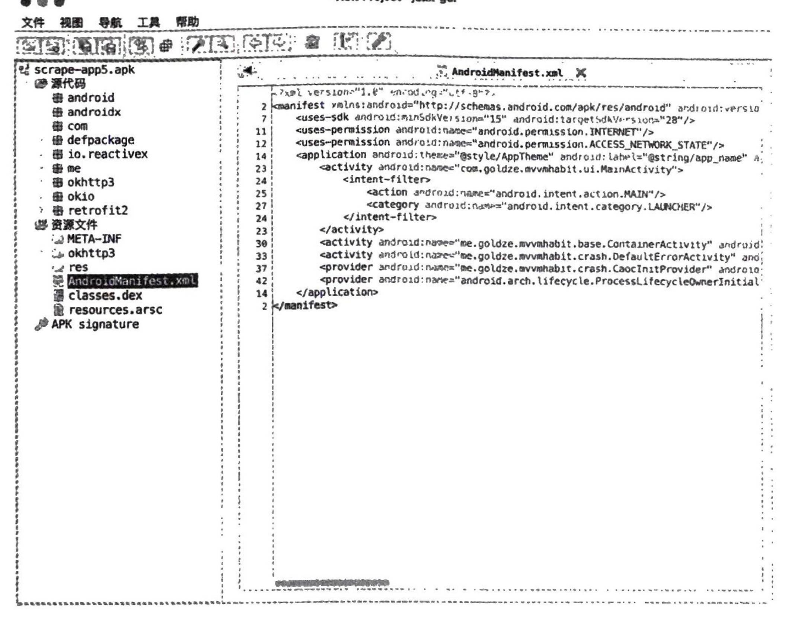
从界面的左侧可以发现,反编译后的Java 源代码以一个个包的形式组织在一起,另外还有资源文件,其中包括图片文件、布局文件和 AndroidManifest.xml文件(内含apk文件的基本信息)等。在左侧展开想要查看的包,右侧就会出现对应的Java 源代码,如图13-4所示。
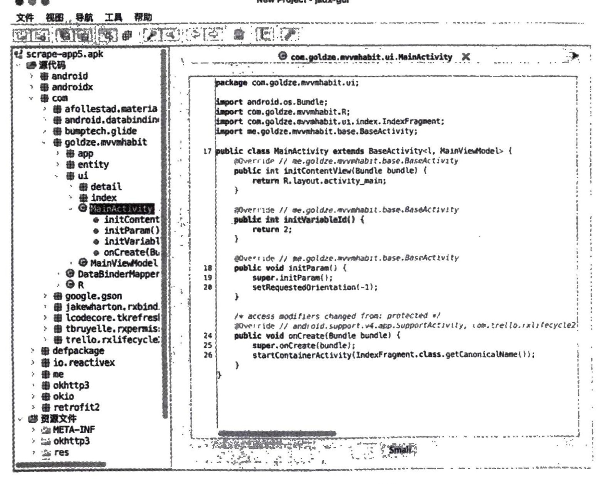
可以看出,Java 源代码的还原度还是很高的。
保存为Gradle项目
我们也可以把反编译后的文件另存为Gradle项目,Gradle项目就是开发版本的Android项目,如图13-5所示。
导出后,会发现项目的目录结构如图13-6所示。
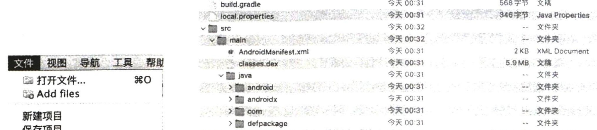
导出后的项目目录结构和我们在jadx-gui界面里看到的结构基本一致,这个项目是可以被 Android Studio 工具打开的,打开的界面如图13-7所示。
打开之后的代码一般没法直接运行,因为毕竟整个项目是反编译出来的,我们不太可能完全还原出开发版本的Android项目。如果你对 Android开发比较了解,可以试着修改一下源码和 Gradle 配置,是可以使项目正常运行的。即使不能运行也没有关系,因为我们的目的并不是运行这个代码,而是分析其中的逻辑,所以要把目光聚焦在查找和定位目标方法与逻辑定义上,Android Studio 能够帮我们更方便地完成这些操作。当然,jadx-gui 也提供了查找和定位的相关功能,现在我们回到jadx-gui,了解一下它的其他常见用法。
文本搜索
在12.3节,我们已经分析过本节的示例 App,并对其进行了抓包处理,知道了该App 在启动阶段会请求/api/movie这个API 获取数据,同时在请求的过程中会带加密参数token,完整的请求 URL是
https://app5.scrape.center/api/movie/?offset=30&limit=10&token=M2U5NjYxZjEwNmQyMD1kYmYyNTIzZGFkYmZkYzdiNThlYTgzOWQOMywxNjIxNzAzMDA5%0A。学习本章内容之前,我们只能通过抓包知道最终的token 参数取什么值,现在不一样了,我们已经成功反编译了apk文件,得到了Java 源代码,就有办法找出这个token的生成逻辑。可以先寻找一些突破口,例如搜索固定的字符串,像这里 URL 中的/api/movie和 token 这个字符串都是可以的,因为在构造 URL 的时候,它们经常就是写死的常量,如果能找到对应的字符串,就可以顺藤摸瓜找到token 的生成逻辑。那我们尝试在源代码中搜索一下URL中的/api/movie字符串,可以使用jadx-gui 提供的搜索功能,打开菜单栏里的“导航”→“搜索文本”,如图13-8所示。
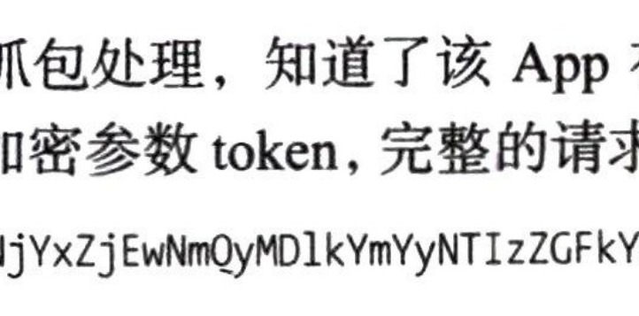
这时 jadx-gui 会显示一个搜索框,如图13-9所示。在“搜索文本:”下方填入“/api/movie”,同时可以从类名、方法名、变量名和代码中选择搜索位置,自行勾选即可,下方会显示搜索结果。
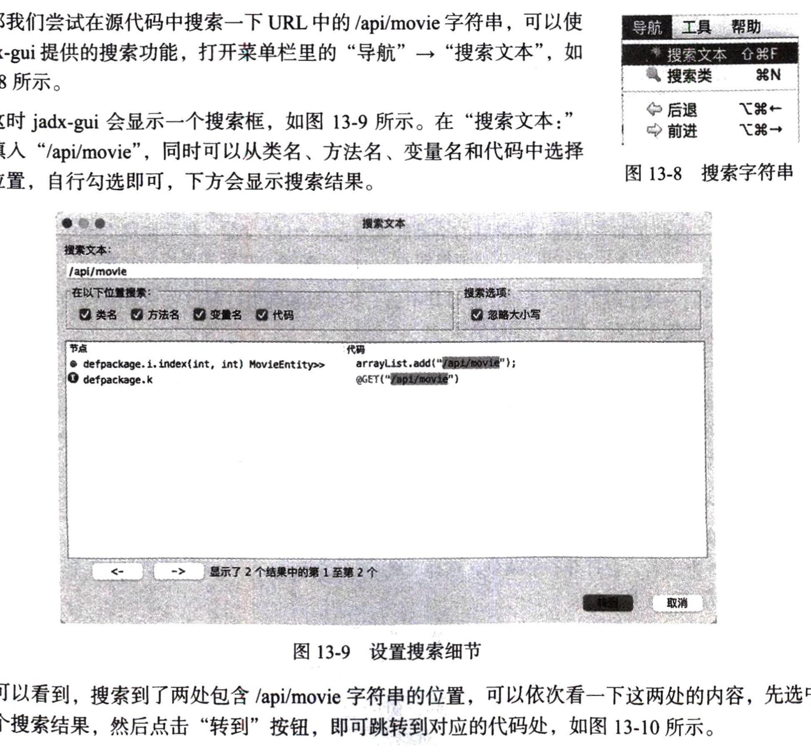
可以看到,搜索到了两处包含/api/movie字符串的位置,可以依次看一下这两处的内容,先选中第一个搜索结果,然后点击“转到”按钮,即可跳转到对应的代码处,如图13-10所示。
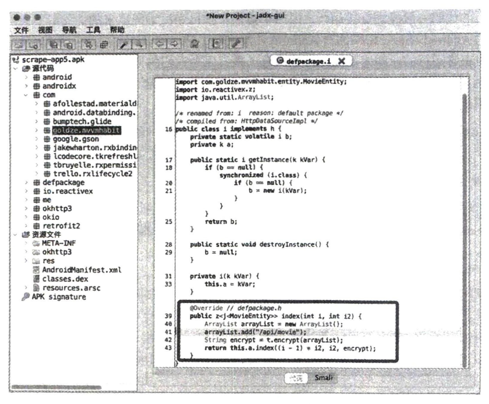
可以看到,图13-10中有一个名为i的类,里面有一个 index方法,该方法接收两个参数,分别是i和12,目前我们还不知道它们代表什么。不妨先看一下 index 方法的基本逻辑吧。方法内首先构造了一个 ArrayList 对象并赋值给arrayList 变量,这相当于Python 中初始化的空列表;然后调用add 方法往 arrayList 中添加了一个字符串/api/movie;接着调用了一个 encrypt方法,并传入参数arrayList,通过名字可以大致推测encrypt 方法实现的是加密过程,加密后的结果被赋值为encrypt变量;最后调用 index方法本身,并传入参数i和12的组合计算结果以及刚刚得到的 encrypt变量,并返回最终的结果。现在,我们大致了解了整个流程,但对其中的一些参数和调用过程还是一头雾水,难道这里就包含着 token 的加密逻辑吗?似乎也不好确认。逆向过程其实就是包含一些不确定性的,在查到一些蛛丝马迹之后,如果不确定查到的内容是不是我们想要的,就继续深入研究,这就是一个推敲和追查的过程。
查找方法的声明
我们可以试着寻找一下 encrypt 方法的声明,右击 encrypt 方法名,会打开一个菜单,选择“跳到声明”,如图13-11所示。这时就会跳转到声明 encrypt 方法的位置,如图13-12所示。图13-12 中显示了 encrypt 方法的源代码,初步观察其逻辑是传入一个包含字符串的List 对象,
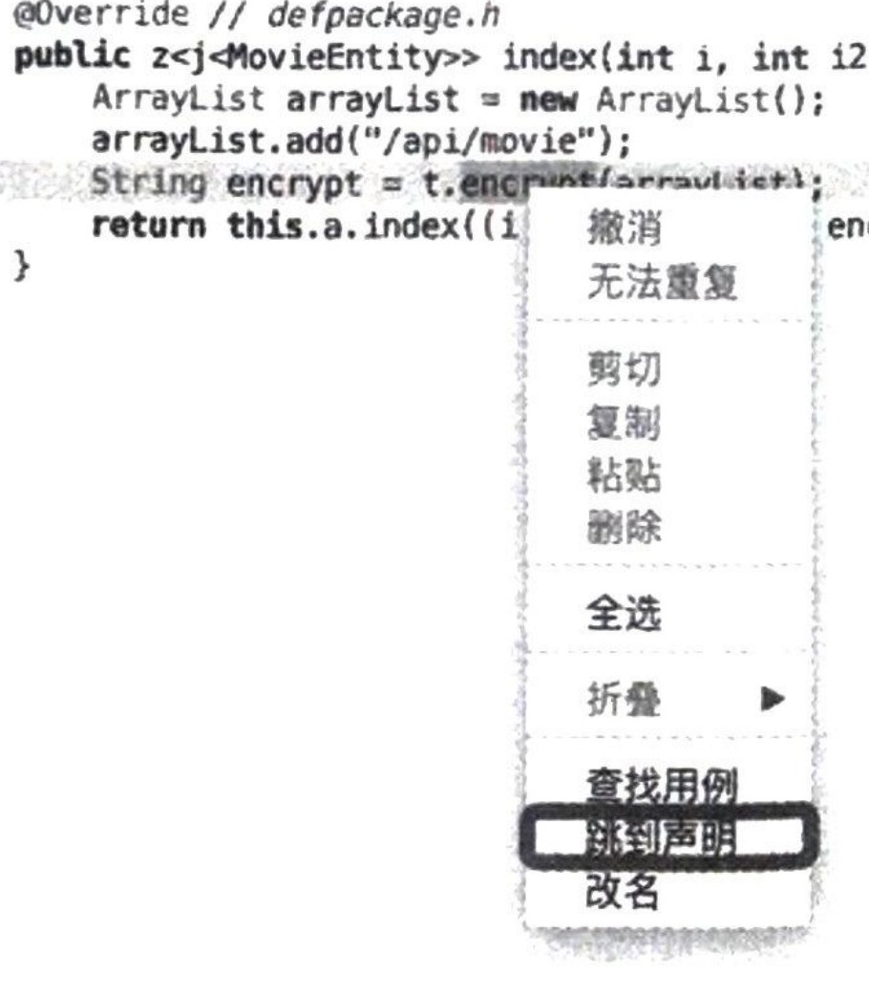
然后经过一些加密处理返回一个高度疑似 Base64编码的字符串,而我们之前看到的token字符串的格式也符合 Base64的编码格式,至于这里究竟是不是token的生成过程,我们会在13.2节做一步验证,这里先主要了解 jadx-gui的一些用法。
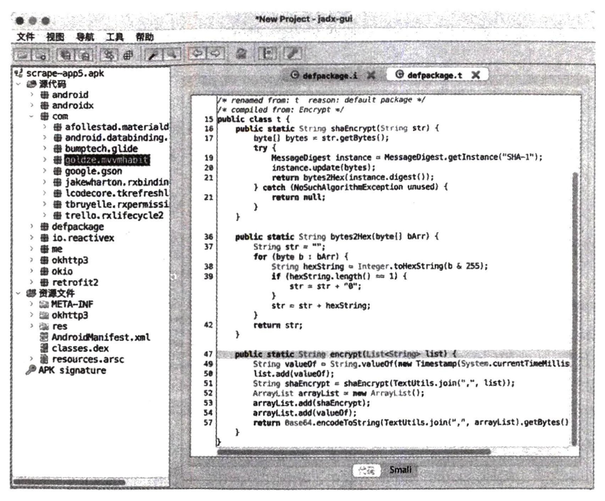
刚才我们通过“跳到声明”选项到了声明 encrypt 方法的位置,那能不能通过该声明,找到调用encrypt 方法的位置呢?那当然是可以的。
查找用例
右击声明处的 encrypt方法名,在打开的菜单中可以看到一个“查找用例”的选项,如图 13-13所示。
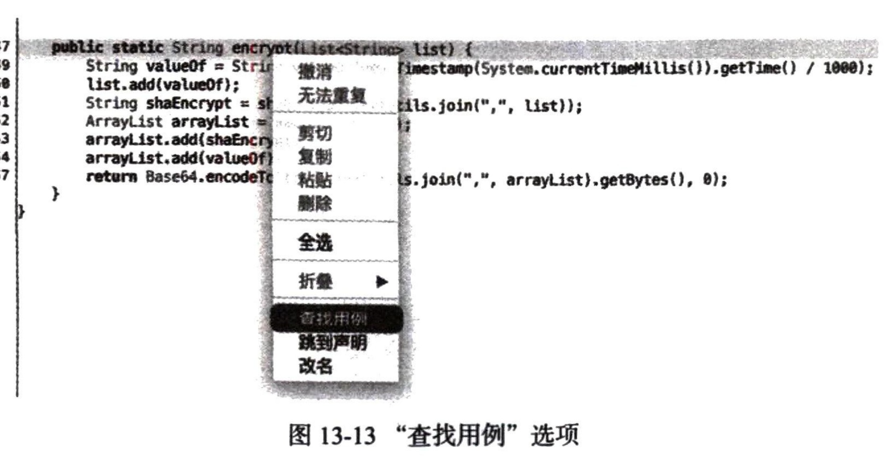
点击之后,查找的结果如图13-14所示。
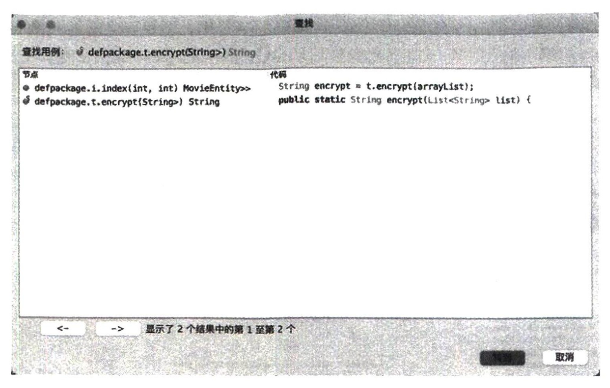
搜索结果有两处,直接双击结果,或者先选中结果再点击“转到”按钮,都可以跳转到对应的代码处。我们看第一个结果,可以发现这就是之前调用 encrypt 方法的位置,如图13-15所示。
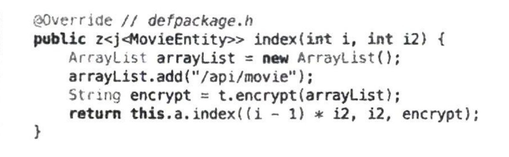
反混淆
jadx-gui 还有一个强大的功能,就是反混淆。从图13-16中,我们看到 encrypt方法所在的类是i,它实现了一个接口h,仅从这些字母并不好推测究竟是什么意思,这是App在编译和打包阶段做了一些混淆操作导致的结果,和JavaScript 中的变量混淆非常相似。
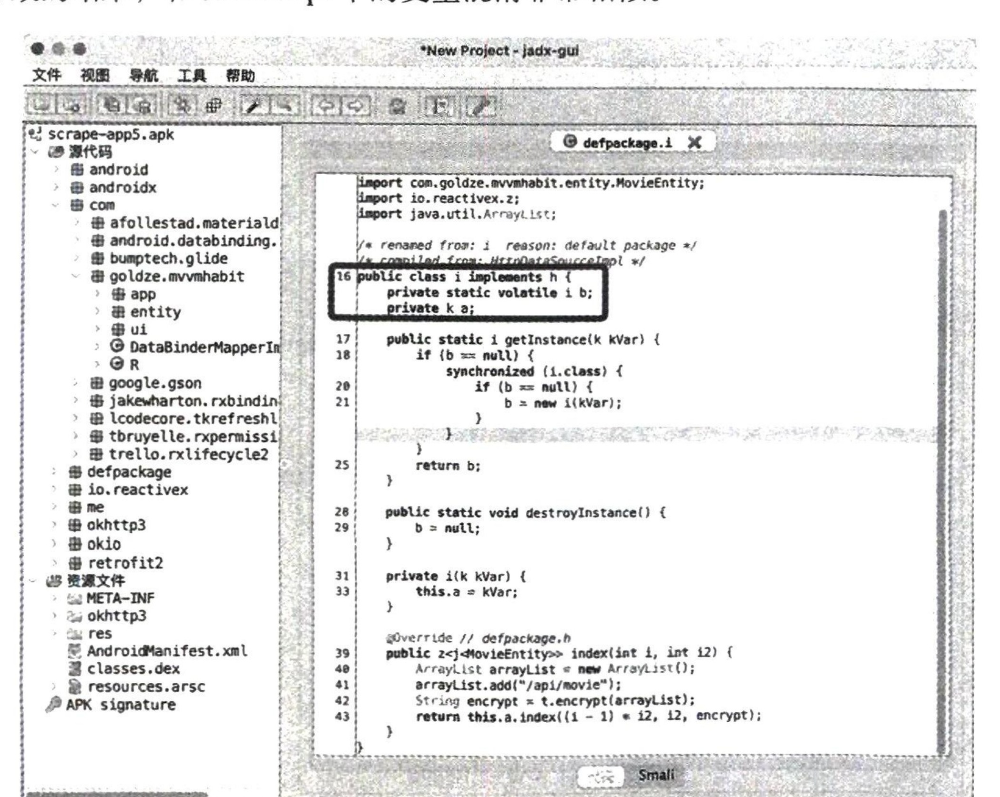
针对这个问题,jadx-gui 具有反混淆功能。我们可以打开反混淆开关,点击菜单中的“工具”→“反混淆”,如图13-17所示。
神奇的事情发生了!原来的类名、接口名都还原出来了,如图13-18所示。
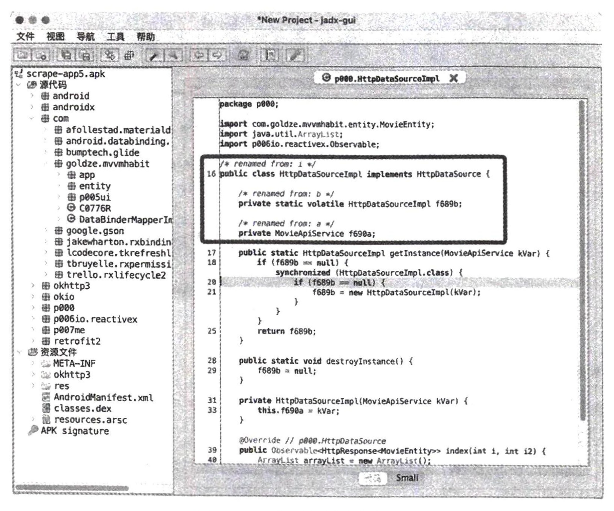
代码可读性大大增强!反混淆能够进一步提升代码的还原度,从而让我们更方便地推敲代码中的逻辑。
设置选项
jadx-gui 还提供了很多设置功能,可以点击工具栏中的“更多设置”按钮,如图13-19所示。
然后会打开一个设置页面,如图13-20所示。这其实是一个总的设置页面,我们可以在这里配置jadx-gui的各个选项,如是否启用反混淆、反编译过程允许的并行线程数、系统是否区分大小写、是否反编译资源文件等,这些和jadx的一些命令功能是一致的。
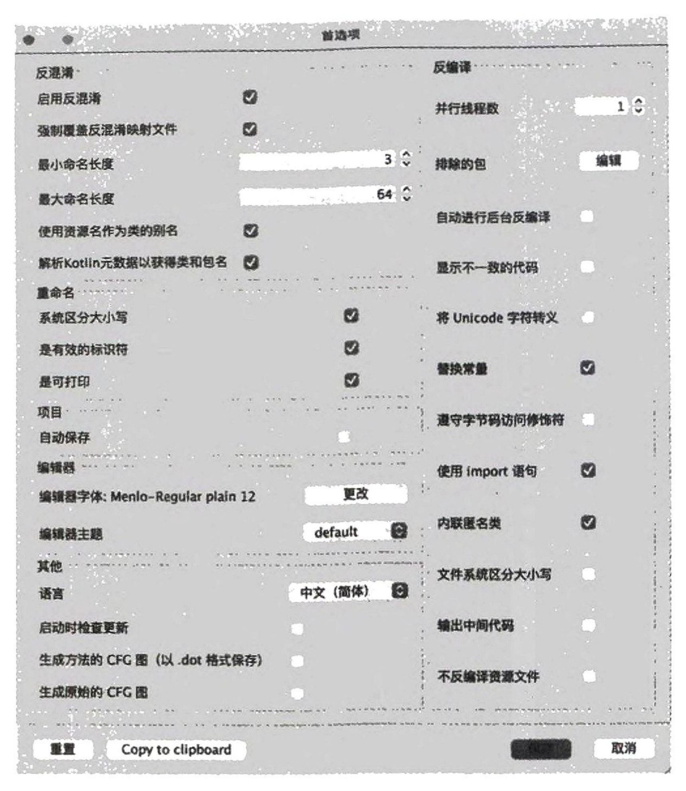
日志查看
在jadx-gui 运行的过程中,还可以查看运行日志,点击工具栏中的“日志”按钮即可打开日志查看器,如图13-21所示。
日志查看器如图13-22所示,可以通过上方的选择框选择日志等级,例如这里选择了 ERROR 级别,即显示错误日志。
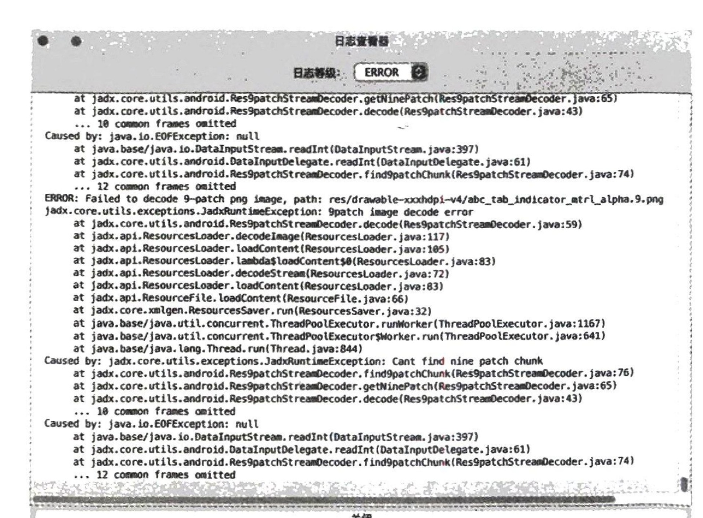
13.2 JEB 的使用
如果反编译过程出现了错误,就可以来这里查看错误细节。当然,我们也可以从运行jadx-gui 命令的控制台观察一些日志输出结果。
5. 常见问题
如果有些 apk 文件比较大,jadx-gui 反编译所需的时间和消耗的资源就会更多,所以有时候在反编译过程中会提示如下错误:java.lang.OutOfMemoryError: GC overhead limit exceeded..at jadx.core.dex.visitors.blocksmaker.BlockProcessor.computeDominators (BlockProcessor.java:189) at jadx.core.dex.visitors.blocksmaker.BlockProcessor.processBlocks Tree (BlockProcessor.java:52)
at jadx.core.dex.visitors.blocksmaker.BlockProcessor.visit(BlockProcessor.java:42)
at jadx.core.dex.visitors.Depth Traversal.visit(Depth Traversal.java:27)
at jadx.core.dex.visitors.Depth Traversal.lambda$visit$1(DepthTraversal.java:14)这里报了一个OutOfMemoryError 错误,代表内存溢出,对于一些比较大的apk文件,是会出现这种问题的,我们可以尝试用如下两个方案解决。
增加JVM的最大内存:设置 JVM_OPTS,把JVM的最大内存调大,之后内存溢出的问题自然可以得到有效解决。
减小线程数:线程多了,反编译过程消耗的内存自然也会增多,可以在运行jadx 的命令时通过-j命令适当将线程数量设置为更小的值。详细的设置方法可以参考https://setup.scrape.center/jadx,本节不深入讲解。
6. 总结
本节我们学习了jadx和jadx-gui的基本使用方法,利用这两个工具,我们可以非常方便地反编译apk文件,还原出原始的Java代码,从而找到我们想要的核心逻辑。本节内容比较基础,需要好好掌握,之后我们会经常使用jadx来反编译 apk文件。
上一节中我们了解了jadx 的基本使用方法,体验了其强大的功能。当然,类似提供反编译功能的工具还有很多,JEB就是一个。本节我们会结合一个案例学习使用JEB 反编译和分析 apk文件的过程。
1. JEB 的简介
JEB 是由PNF 软件(PNF Software)机构开发的一款专业的反编译 Android App的工具,适用于逆向和审计工程,功能非常强大。相比jadx,JEB除了支持 apk文件的反编译和 Android App 的动态调试,还支持ARM、MIPS、AVR、Intel-x86、WebAssembly、Ethereum(以太坊)等程序的反编译、反汇编、动态调试等。另外,JEB 能解析和处理一些PDF文件,是一个极其强大的综合性逆向和审计工具。由于本章主要讲 Android 逆向相关的内容,所以多关注它和 Android 相关的功能。对于Android App,JEB 主要提供如下功能。
可以对 Android App 和 Dalvik (Android 虚拟机,类似Java中的JVM)字节码执行精确和快速的反编译操作。
内置的分析模块可以对高度混淆的代码提供虚拟层次化重构,对分析混淆代码很有帮助。
可以对接 JEB API来执行一些逆向任务,支持用Java和Python 编写自动化逆向脚本。
JEB 支持Windows、Linux、Mac三大平台,目前主要分为三个版本: JEB CE(社区版)、JEB Android (Android版)、JEB Pro(专业版)。JEB CE提供一些基础的功能,如反编译 dex文件,反编译和反汇编 Intel-x86,但不支持反编译 Dalvik 字节码。JEB Android 则更专注于Android系统,支持反编译 dex文件,也支持反编译和反汇编 Dalvik 字节码。JEB Pro则是“完全体”,支持官网介绍的所有功能。三个版本的具体功能对比可以参考官网(https://www.pnfsoftware.com/jeb)的介绍。JEB CE 是免费的,JEB Android 和JEB Pro 都是收费的,需要购买许可证才可以使用。
2. 准备工作
本节我们要使用JEB(JEB Android 或JEB Pro)来反编译和动态调试一个 Android App,关于JEB的下载地址和安装方式可以参考https://setup.scrape.center/jeb。安装好 JEB 之后,需要下载示例apk文件,地址为 https://app5.scrape.center/,下载好后保存为scrape-app5.apk 文件即可。然后准备好一部Android手机,真机和模拟器都可以,在手机上安装好刚下载的apk文件并启动App。另外还需要确保在电脑能使用adb命令正常连接到手机。
3. 实战
打开 JEB,把示例apk文件直接拖到窗口里,经过一段时间的处理,JEB就完成了反编译,如图13-23所示。
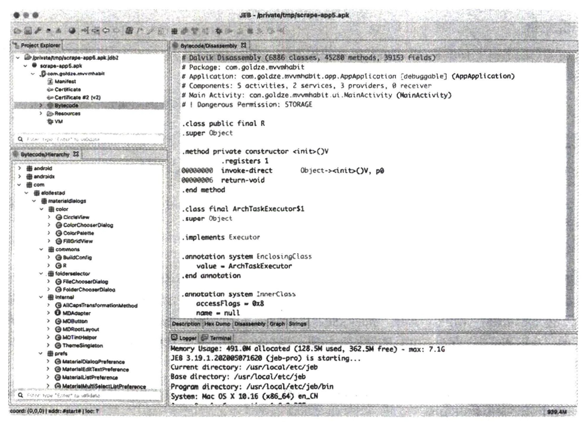
从左侧的 Bytecode/Hierarchy 部分可以看到,反编译后的代码以一个个包的形式组织在一起,右侧显示的则是 Smali代码(Dalvik 的反汇编程序实现,类似x86平台下的汇编语言),通过这个代码,我们大体能够看出一些执行逻辑和数据操作的过程。
虽然我们得到了Smali 代码,但这似乎不是用Java语言编写的,我们从哪个地方入手呢?由于我们要找的是 URL 中加密参数 token的位置,因此最简单的方式当然是借助API的一些标志字符串查找了。我们知道示例 App 在启动的时候会开始请求数据,请求 URL里包含关键字/api/movie,以及offset、token 等参数,具体的抓包过程这里就不再赘述了,可以参考12.3节的内容。因为 API 的路径通常是用字符串定义的,而且一般写死在App 代码里,所以我们可以尝试使用/api/movie 来搜索,看看是否能搜索到相关的逻辑。点击菜单中的“Edit”→“Find”,打开 JEB 的查找功能,输入“/api/movie”,如图13-24所示。点击“Find”按钮,可以看到JEB帮我们找到了对应的Smali 代码,如图13-25所示。
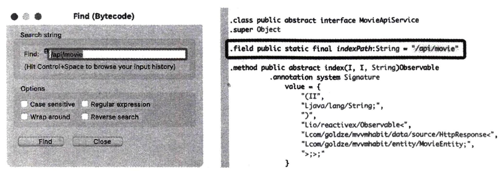
这里其实是声明了一个静态不可变的字符串,叫作 indexPath。但这里是 Smali代码,我们如何找到对应的源码位置呢?可以先选中该字符串,然后右击,在菜单中选择“Decompile”,如图13-26所示。
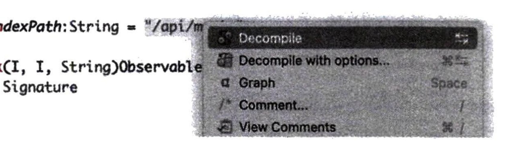
之后就成功定位到了Java代码的声明处,如图13-27所示。
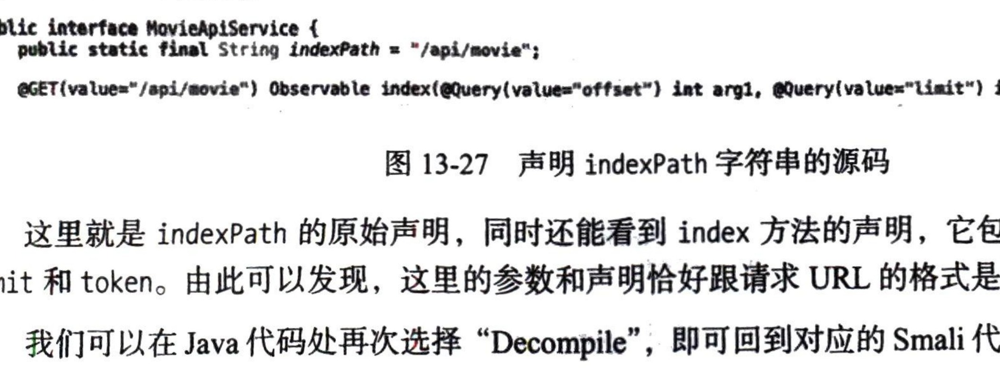
这里就是 indexPath 的原始声明,同时还能看到 index方法的声明,它包含3个参数:offset、limit 和 token。由此可以发现,这里的参数和声明恰好跟请求 URL的格式是相同的。我们可以在Java代码处再次选择“Decompile”,即可回到对应的Smali代码处,如图13-28所示。
.method public abstract index(I, I, String)Observable.annotation system Signature
value = {"(11","Ljava/lang/String;",")",
"Lio/reactivex/Observable<",
"Lcom/goldze/mvvmhabit/data/source/HttpResponse<","Lcom/goldze/mvvmhabit/entity/MovieEntity;",
">;>;".end annotation.annotation runtime GET
value="/api/movie".end annotation.param p1.annotation runtime Query value "offset".end annotation.end param.param p2.annotation runtime Query value "limit".end annotation.end param.param p3.annotation runtime Query value "token".end annotation.end param.end method
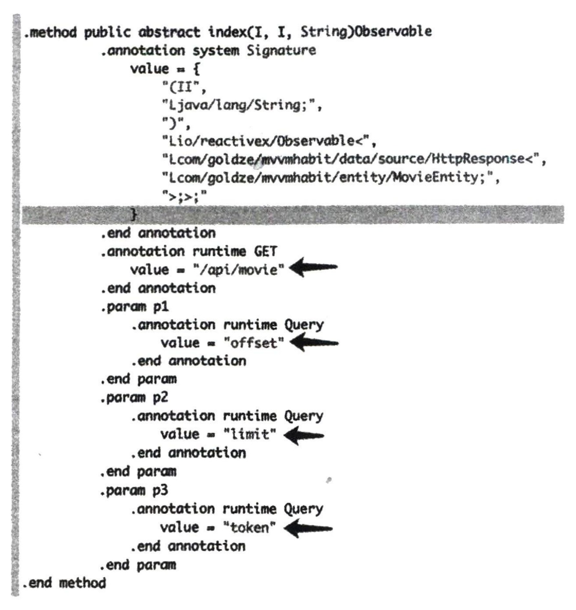
可以看到 Smali 代码的定义和Java代码的定义一一对应。但这里似乎仅仅定义了API,并没有真正的实现,因此我们可以接着搜索引用/api/movie的位置,如图13-29所示。
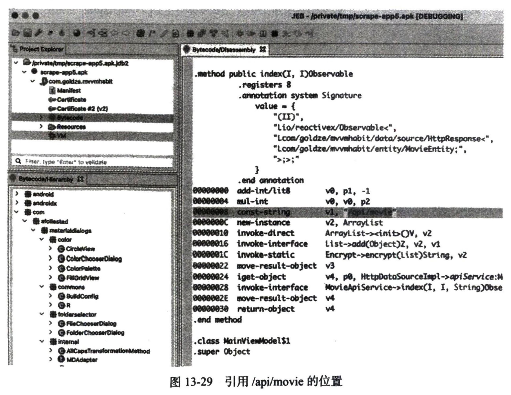
同样在查找结果处右击,在打开的菜单中选择“Decompile”,就跳转到了对应的Java 代码处,如图13-30所示。
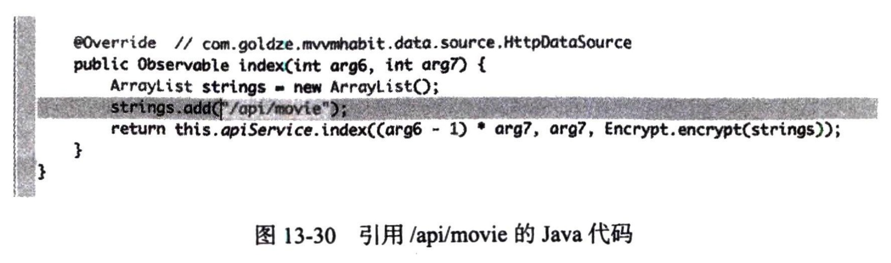
很明显,这里就是逻辑实现相关的代码了。稍微读一下这里的Java代码,大致是调用了一个apiService 对象的index方法,并传入了几个参数,第一个参数是 arg6 和arg7 计算后的结果,第二个参数是 arg7,第三个参数是 encrypt方法返回的结果(这个方法的参数还是一个包含/api/movie字符串的 ArrayList 对象)。这里看起来似乎是请求API的一个操作,但是我们也不确定是不是真的是这个位置。为了更好地确定这里是不是我们想要的数据加载入口,下面尝试使用JEB 的动态调试功能验证一下,例如在刚才的代码位置添加一个断点,然后滑动App 加载数据,看在运行到断点的位置时是否停止了运行,如果停止了,就证明我们找的这个位置是正确的,否则继续寻找。那怎么动态调试呢?其实操作很简单,首先确保本节的示例 App已经安装在了手机上,并且能在电脑上通过 adb命令与手机连接。然后运行adb命令:adb shell am start -D -n com.goldze.mvvmhabit/.ui.MainActivity这条命令的功能就是让 App 以调试模式启动,-D指定了App 以调式模式启动,-n指定了启动入口,这里设置为示例 App的包名和MainActivity。运行这条命令后,可以看到手机上显示如图13-31 所示的字样。
这时回到 JEB 的界面,点击工具栏里的“Debug”按钮,如图13-32所示。
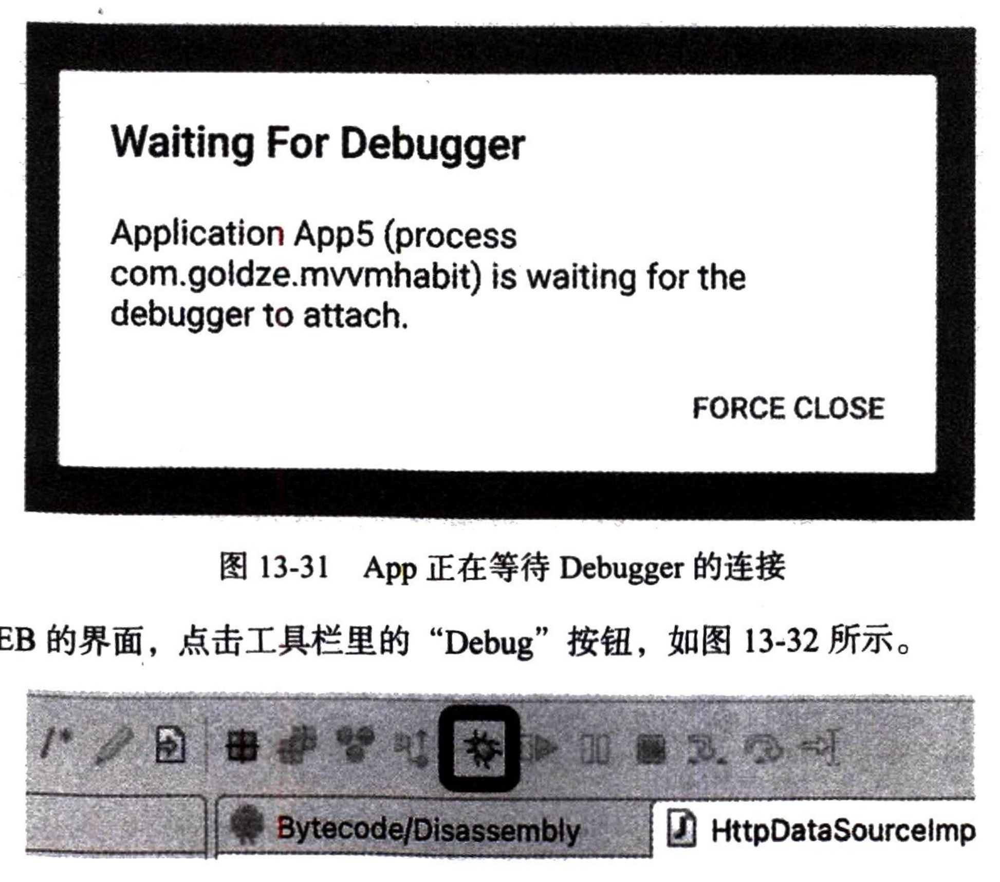
之后会检测出正在运行的Android设备,如图13-33所示。
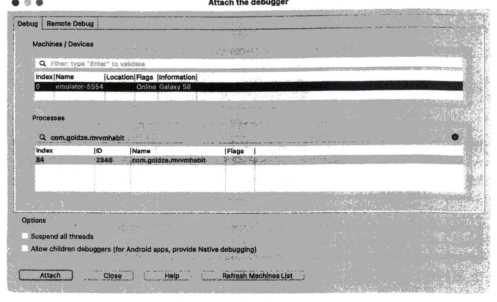
点击下方的“Attach”按钮,Debugger 就成功挂载了手机上的App进程,JEB的界面变成图13-34所示的这样,弹出了几个调试窗口。
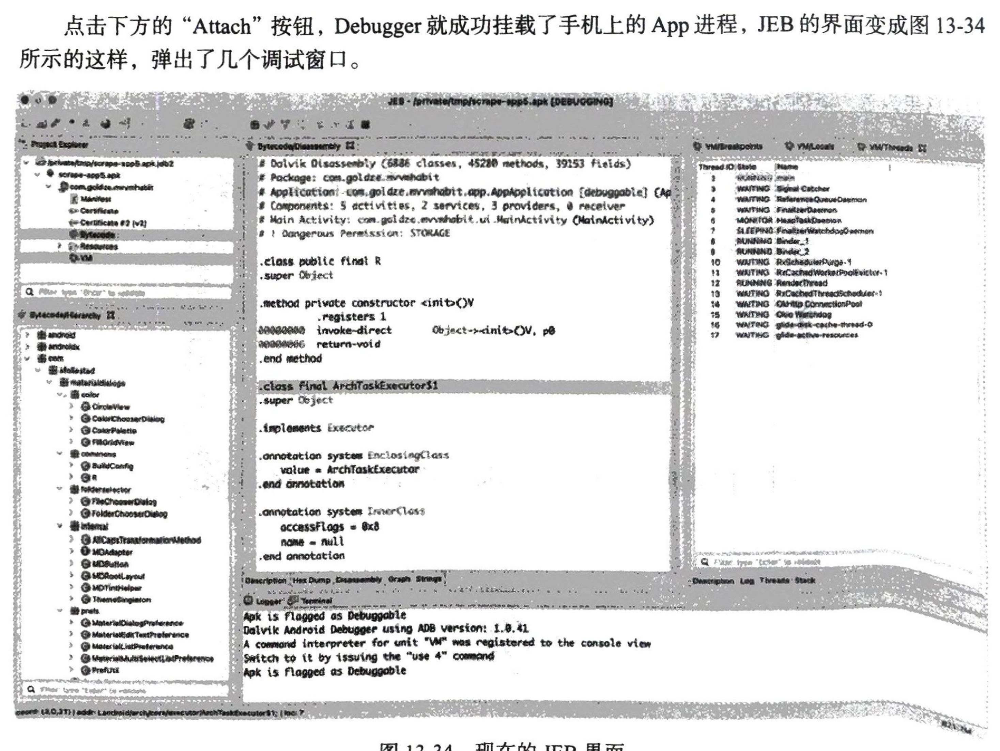
与此同时,手机上的“Waiting for Debugger”提示也消失了,示例App 正常运行并加载出了第一页数据,如图13-35所示。
这证明挂载成功了。在JEB中,我们可以选中想要调试的 Smali 代码,然后点击菜单栏中的"Debugger" → "Toggle Breakpoint”来添加断点,如图13-36所示。
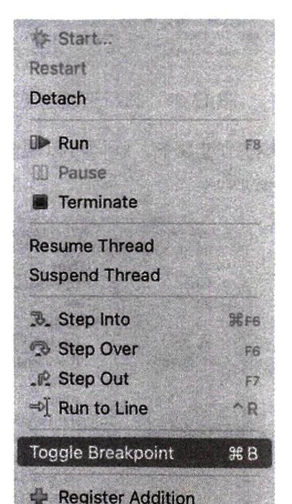
例如在刚才的/api/movie对应的Smali 代码处添加一个断点,效果见图13-37。
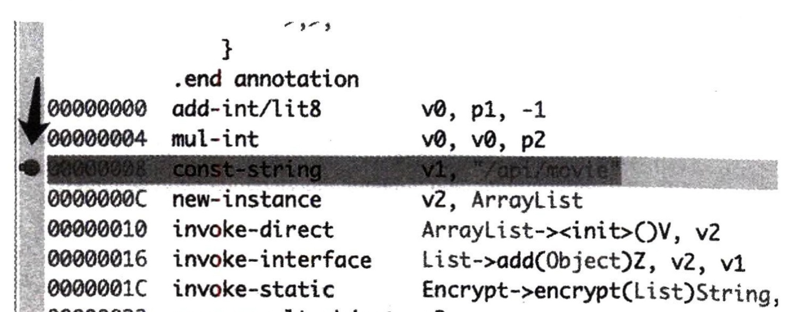
这时再次滑动 App触发数据的加载,然后神奇的事情发生了——JEB 显示代码执行到断点的位置时停下来了,如图13-38所示。
这说明什么?说明数据加载的过程正是调用这个断点位置处代码的过程,即数据加载入口找对了。我们可以点击“Step Over”按钮尝试逐行执行此处的代码,如图13-39所示。
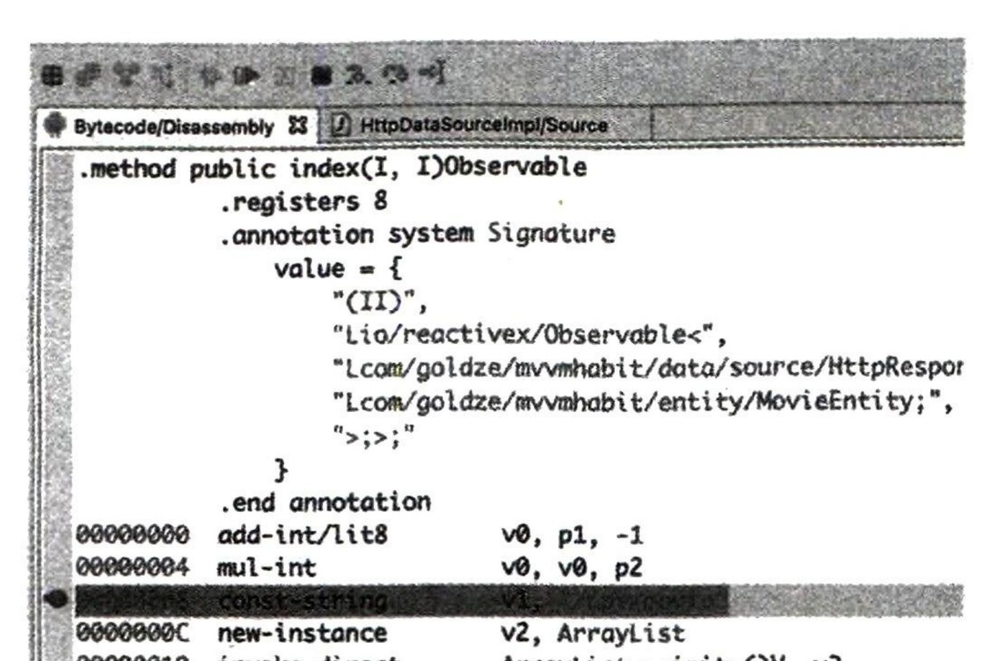
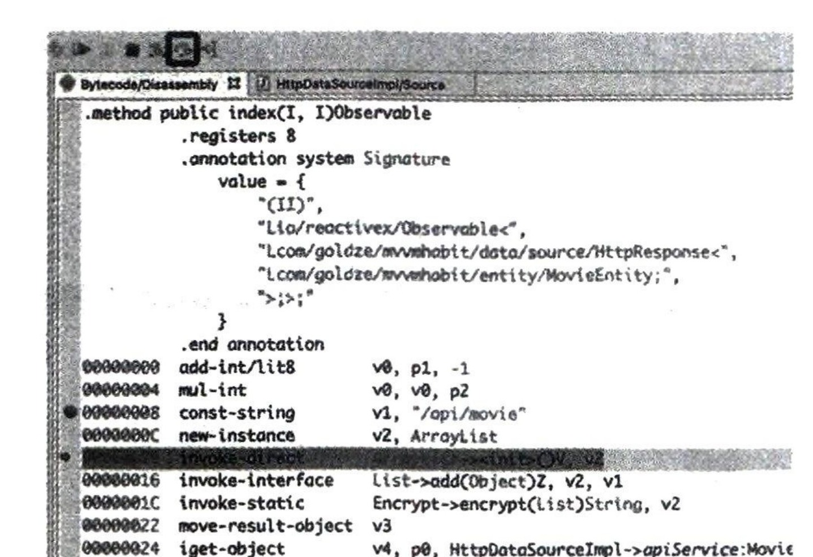
在执行的过程中,我们可以观察“VM/Locals”窗口,这里显示了各个变量的类型和对应的值,如图13-40所示。
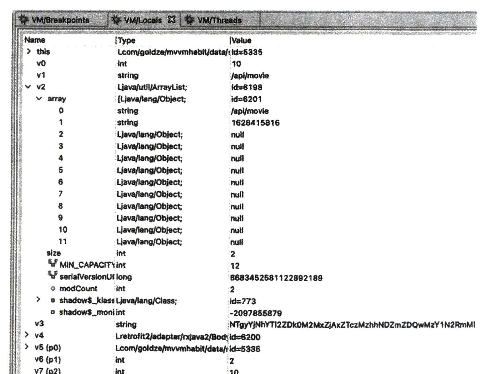
另外,可以点击工具栏中的“Run”按钮继续执行到下一个断点,如图13-41所示。
如果没有下一个断点,会直接完成数据请求,App中加载出下一页数据。
经过多次的数据加载和调试,以及观察对比“VM/Locals”窗口中的各个变量(如果有必要,还可以用抓包软件验证),最终不难发现,变量 v2 就对应 Java 源代码里面的 ArrayList 对象,v0 对应offset 参数的值,v7 对应 limit 参数的值,v3 对应 GET 请求过程中的 token 参数。另外,可以推测 v3,即 token 参数的值就是刚才图 13-30 中 encrypt 方法返回的结果,也就是 token字符串的生成逻辑包含在这个 encrypt 方法里。我们先详细看看 encrypt 方法是怎么定义的,再单独对这个方法进行反编译操作,如图 13-42所示。
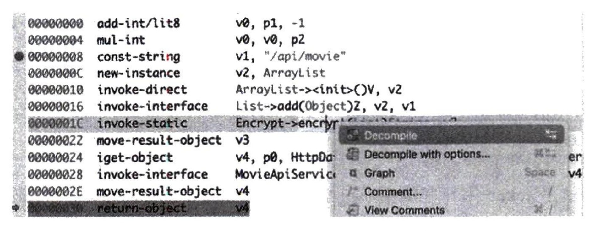
找到对应的 encrypt 方法后,再定位到 Java 代码中它的声明处,如图 13-43 所示。
public static String encrypt(List arg7) {
String argi = String.valueOf(new Timestamp(System.currentTimeMillis()).getTime() / 1000L);
arg7.add(arg1);
String sign = Encrypt.shaEncrypt(TextUtils.join(",", arg7));
ArrayList temp = new ArrayList();
temp.add(sign);
temp.add(arg1);
return Base64.encodeToString(TextUtils.join(",", temp).getBytes(), 0);
}
public static String shaEncrypt(String strSrc) {
byte bt = strSrc.getBytes();
try {
MessageDigest v0 = MessageDigest.getInstance("SHA-1");
v0.update(bt);
return Encrypt.bytes2Hex(v0.digest());
} catch(NoSuchAlgorithmException e) {
}
return null;
}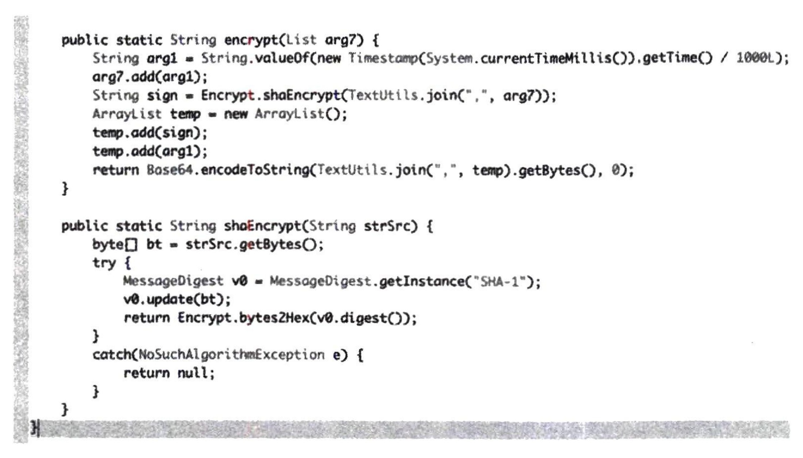
其实很明显了,我们分析一下这段 Java 代码,传入 encrypt 方法的参数是 arg7,经过刚才的分析可知,arg7 其实是一个长度为 1 的列表,其内容是["/api/movie"]。方法中先定义了一个叫作 arg1 的字符串,其实就是获取的时间戳信息;然后把 arg1 添加到 arg7 中,现在 arg7 里就有两个内容了,一个是字符串/api/movie,一个是时间戳信息;接着声明了 sign 变量,可以看出其是用逗号把 arg7 中的两个内容拼接在一起,外层再调用 shaEncrypt 方法的结果(经过观察,shaEncrypt 方法其实实现的就是 SHA1 算法);后面又声明了一个 ArrayList 对象,赋值给 temp 变量,并把 sign 和 arg1 的值添加进去,再把 temp 中的内容使用逗号拼接起来,最后进行 Base64 编码及返回。那么现在 token 字符串的整体加密逻辑就清楚了。
4. 模拟
了解了基本的算法流程后,我们可以用 Python 代码实现这个流程:
import hashlib
import time
import base64
import requests
INDEX_URL = 'https://app5.scrape.center/api/movie?limit={limit}&offset={offset}&token={token}'
MAX_PAGE = 10
LIMIT = 10
def get_token(args):
timestamp = str(int(time.time()))
args.append(timestamp)
sign = hashlib.sha1(','.join(args).encode('utf-8')).hexdigest()
return base64.b64encode(','.join([sign, timestamp]).encode('utf-8')).decode('utf-8')
for i in range(MAX_PAGE):
offset = i * LIMIT
token = get_token(args=['/api/movie'])
index_url = INDEX_URL.format(limit=LIMIT, offset=offset, token=token)
response = requests.get(index_url)
print('response', response.json())这里最关键的就是 token 字符串的生成过程,我们定义了一个 get_token 方法来实现,整体思路就是上面梳理的内容:
在列表中加入当前时间戳;
将列表内容用逗号拼接起来;
对拼接结果进行SHA1编码;
将编码结果和时间戳再次拼接;
对拼接后的结果进行 Base64编码。最后的运行结果如下:
response {'count': 100, 'results': [{'id': 1, 'name':'霸王别姬', 'alias': 'Farewell My Concubine', 'cover':'https://po.meituan.net/movie/ce4da3e03e655b5b88ed31b5cd7896cf62472.jpg@464w_644h_1e_1c', 'categories': ['剧情','爱情'],'published_at': '1993-07-26', 'minute': 171, 'score': 9.5, 'regions': ['中国大陆','中国香港'], 'drama':
{'id': 10, 'name':'狮子王','alias': 'The Lion King', 'cover': 'https://po.meituan.net/movie/27b76fe6cf3903f3d74963f70786001e143406.jpg@464w_644h_1e_1c', 'categories': ['动画','歌舞','冒险'],
'published_at': '1995-07-15', 'minute': 89, 'score': 9.0, 'regions': ['美国'],'drama':'辛巴是荣耀国的小王子,他的父亲木法沙是一个威严的国王。然而叔叔刀疤却对木法沙的王位觊觎已久。要想坐上王位宝座,
...这样我们就成功爬取到示例 App 的数据了。
5. 总结
本节我们通过一个案例讲解了比较基本的App 逆向过程,包括JEB 工具的使用方法、动态调试和代码追踪操作等,还通过分析代码厘清了基本逻辑,最后模拟实现了API 的参数构造和请求发送,得到最终的数据。当然本节介绍的内容仅是JEB 所有功能的冰山一角,更多关于JEB 的使用教程可以参考其官方文档 https://www.pnfsoftware.com/jeb/manual/。
13.3 Xposed 框架的使用
在11.3节中,我们已经初步了解了Hook技术,利用这个技术可以在某一逻辑的前后加入我们自定义的逻辑处理代码实现我们想要的功能,例如数据截获、输入和返回值修改等。那 Hook 技术能否应用在App上呢?当然也是可以的。
Hook 技术在 App上的应用非常广泛,例如修改朋友圈的微信步数,其实就是通过发送 Hook 数据的方法修改了步数;又如处理 SSL Pinning 问题时,用Hook技术修改SSL证书的校验结果,从而绕过校验过程。对于App爬虫,也可以Hook一些关键的方法拿到方法执行前后的结果,从而实现数据的截获。
那这个技术怎么实现呢?这里不得不提到一个框架——Xposed框架。
1. Xposed 框架的简介
Xposed 框架是一套开源的,在Android 高权限模式下运行的框架服务,可以在不修改 App 源码的情况下影响程序运行(修改系统)。基于Xposed框架,可以制作许多功能强大的模块,且这些模块可以在功能不冲突的情况下同时运作。
Xposed框架的原理我们稍作了解即可:替换系统级别的/system/bin/app_process 程序,控制 zygote进程,使得 app_process 在启动过程中加载 XposedBridge.jar包,这个jar包里定义了对系统方法、属性所做的一系列 Hook 操作,同时提供了几个 Hook API 供我们编写 Xposed 模块使用。我们在编写Xposed 模块时,引用几个Hook 方法就可以修改系统级别的任意方法和属性了。
这么说可能有点抽象,下面我们编写一个Xposed 模块,带大家体会一下它的用法,最后再使用Xposed 模块修改真实App的执行逻辑。
2. 准备工作
由于 Xposed 运行在Android 平台上,所以我们本节的环境和 Android 相关。在开始之前,先做好如下准备工作。
配置好 Android开发环境,具体的配置方法可以参考https://setup.scrape.center/android。
准备一个已经ROOT的Android设备(真机或模拟器均可),并把它和PC连接好,可以在PC上使用adb命令正常连接到该设备。
在设备上安装好 Xposed 工具,具体的安装方法可以参考 https://setup.scrape.center/xposed。Xposed 本身对 Android 系统和设备是有一定要求的,如果你的设备不满足要求,这里有几个备选方案。
对于高版本的Android系统,Xposed可能不提供支持,此时可以安装 EdXposed,具体的安装方法可以参考 https://setup.scrape.center/edxposed。
对于没有 ROOT的 Android 系统,可以使用VirtualXposed, VirtualXposed 不需要ROOT 即可使用,具体的安装方法可以参考 https://setup.scrape.center/virtualxposed。
3. Xposed 模块
Xposed 框架现在的生态系统非常庞大,基于它开发的模块非常多,点击下载菜单就可以看到已发布的Xposed 模块，如图13-44所示。
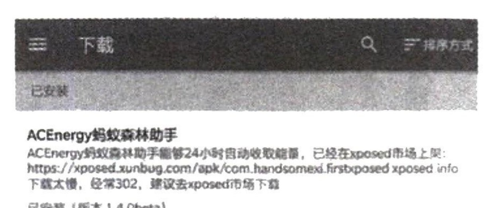
可以看到,这里有各种各样的模块,当然我们也可以自己编写模块来实现想要的功能。这时大家可能会问,这些模块究竟是干嘛的?到底是什么东西?其实从本质
上讲，Xposed 模块就是一个 Android App，开发一个 Xposed 模块和开发一个 Android App 的流程是差不多的，只不过前者多了下面 4 个步骤。(1) 需要添加一些标识符，表明这个 App 是一个 Xposed 模块，以便在 Android 设备上安装后，Xposed 框架可以被识别出来。(2) 需要引入 XposedBridge.jar 包，从而实现 Hook 操作。(3) 需要定义一些 Hook 操作，对本 App 或其他 App 的逻辑进行修改。(4) 定义完 Hook 操作的逻辑后，需要告诉 Xposed 框架哪些是我们自己定义的 Hook 操作逻辑，以便 Xposed 执行这些逻辑。下面我们就一步步实现以上 4 步。
4. 开发一个 Xposed 模块
首先在 Android Studio 中新建一个 Android 项目，会提示我们选择 Activity，直接选择默认的 Empty Activity 即可，如图 13-45 所示。
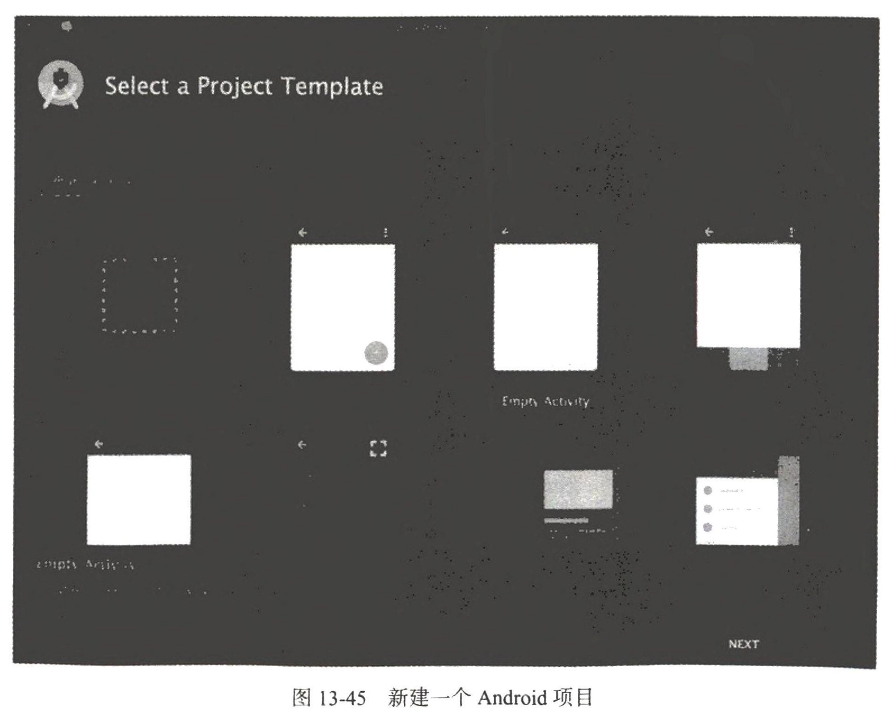
然后做一些基础配置，项目名称配置为 XposedTest，包名可以任意取，配置好项目路径和编写语言，同时指定最小 SDK 版本为 15，如图 13-46 所示。
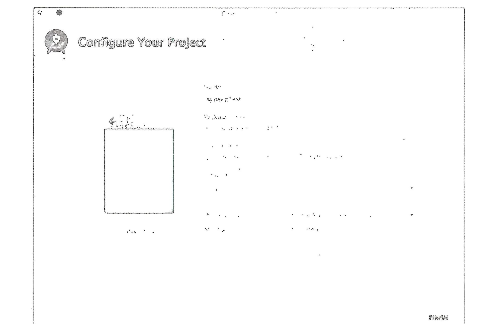
点击 FINISH 按钮,XposedTest 项目就创建好了,生成的界面如图13-47所示。
之后我们实现之前说的第1步,添加一些标识符,表明这是一个Xposed 模块。打开AndroidManifest.xml 文件,找到 application 标签,在与 activity 标签并列的位置添加如下内容:
<meta-dataandroid:name="xposedmodule"
android:value="true" />
<meta-dataandroid:name="xposeddescription"
android:value="Xposed Test" />
<meta-dataandroid:name="xposedminversion"
android:value="53" />最终 AndroidManifest.xml 文件的内容如图13-48所示。
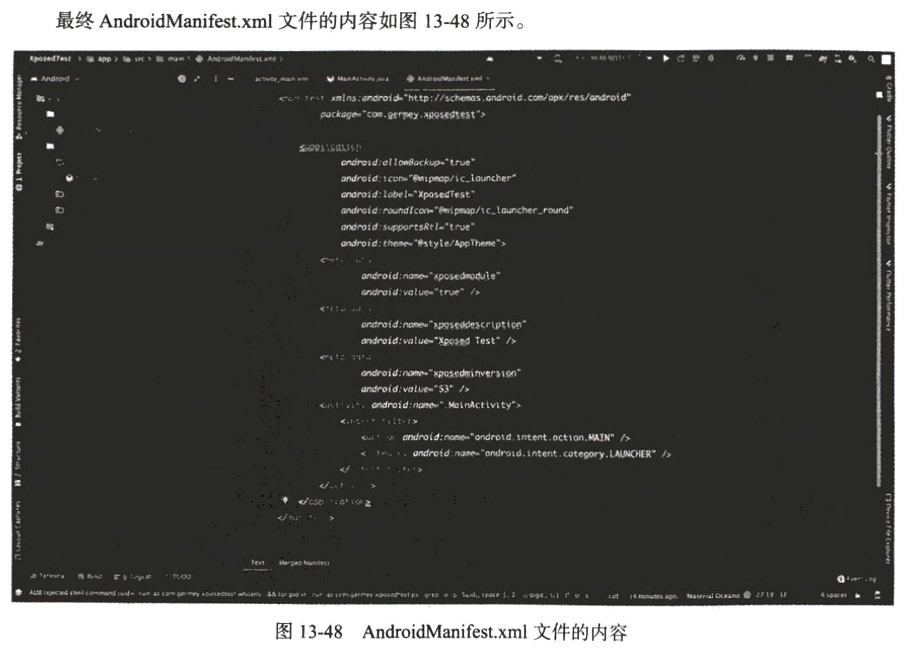
这段内容指定了3个meta-data。xposedmodule:这里设置为true,代表这是一个Xposed 模块。xposeddescription:模块的描述,此处填写模块名称就好,就是一个字符串。xposedminversion:模块运行所要求的 Xposed 最低版本号,这里是53。定义好这3个内容后,把这个App安装到准备好的Android设备上,Xposed框架就能识别出这个App 是一个 Xposed 模块了。点击运行按钮,在设备上运行这个App,可以看到设备上显示如下界面,如图13-49所示。
此时打开 Xposed Installer 的模块界面,就会发现它检测到了这个模块,如图13-50所示。
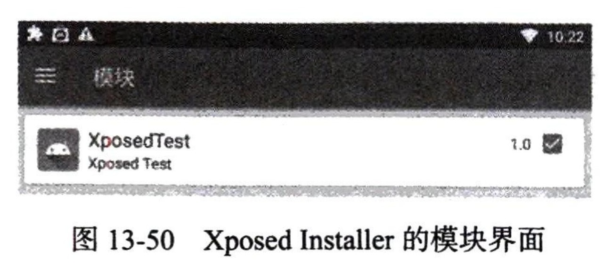
我们勾选这个模块,它就成功被启用了。不过需要注意,这个操作得重启设备才能生效,可以手动启动设备或者通过 Xposed Installer 首页的重启选项进行重启。但是,现在启用了也没什么用啊,因为XposedTest 里还什么功能都没有呢,需要引入与Xposed 相关的SDK,我们才能调用Xposed 提供的一些 Hook操作方法,实现 Hook 操作。于是打开 app/build.gradle 文件,在dependencies 部分添加如下两行代码:
compileOnly 'de.robv.android.xposed:api:82'
compileOnly 'de.robv.android.xposed:api:82:sources'这是 Xposed 的SDK,添加之后 Android Studio 会检测到项目配置发生的变化,并在上方显示提示信息。我们点击右上角的“Sync Now”选项,就会自动下载和安装新添加的Xposed SDK,如图13.所示。现在 Xposed 的SDK 就安装成功了,下面我们就能使用里面的方法 Hook 代码逻辑了。那怎么实现呢?具体 Hook 什么呢?总得有点头绪吧,头绪在哪呢?不妨先自己写一个,这里我们会增加一个鼠标响应事件,在点击鼠标后触发算式计算操作。
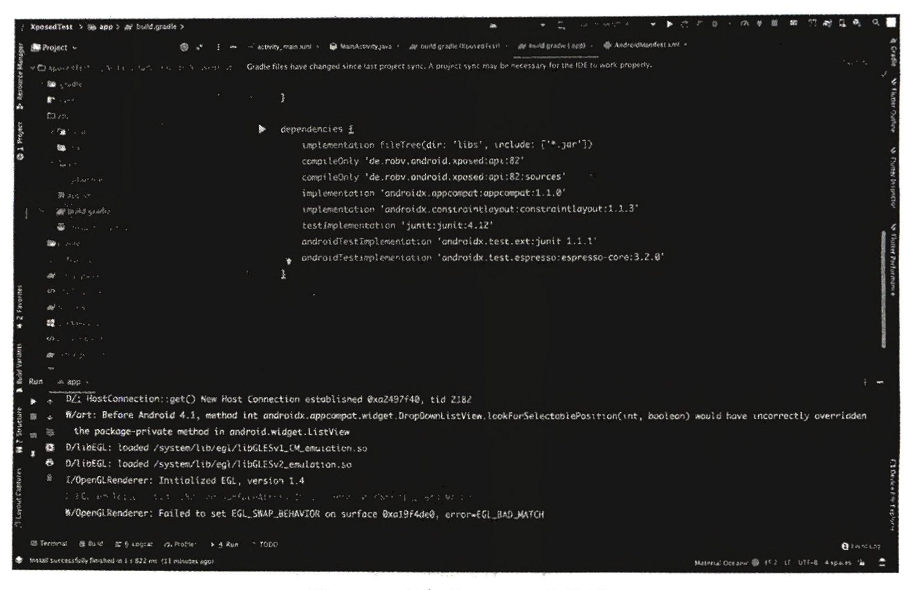
首先修改一下页面内容,设置一个按钮,将activity_main.xml文件中的内容替换为下面的代码即可:
<?xml version="1.0" encoding="utf-8"?>
<androidx.constraintlayout.widget.ConstraintLayout
xmlns:android="http://schemas.android.com/apk/res/android"
xmlns:app="http://schemas.android.com/apk/res-auto"
xmlns:tools="http://schemas.android.com/tools"
android:layout_width="match_parent"
android:layout_height="match_parent"
tools:context=".MainActivity">
<Button
android:id="@+id/button"
android:layout_width="wrap_content"
android:layout_height="wrap_content"
android:text="Test"
app:layout_constraintBottom_toBottomOf="parent"
app:layout_constraintEnd_toEndOf="parent"
app:layout_constraintStart_toStartOf="parent"
app:layout_constraintTop_toTopOf="parent" />
</androidx.constraintlayout.widget.ConstraintLayout>这时重新运行App,就会出现一个TEST 按钮而不是文本框了。然后修改 MainActivity.java文件,其内容如下:
package com.germey.xposedtest;
import androidx.appcompat.app.AppCompatActivity;
import android.os.Bundle;
import android.view.View;
import android.widget.Button;
import android.widget.Toast;
public class MainActivity extends AppCompatActivity {
private Button button;
@Override
protected void onCreate(Bundle savedInstanceState) {
super.onCreate(savedInstanceState);
setContentView(R.layout.activity_main);
button = findViewById(R.id.button);
button.setOnClickListener(new View.OnClickListener() {
public void onClick(View v) {
Toast.makeText(MainActivity.this, showMessage(1, 2), Toast.LENGTH_SHORT).show();
}
});
}
public String showMessage(int x, int y) {
return "x + y = " + (x + y);
}
}这里我们定义了一个 Button 对象,然后使用 findViewById 方法从视图里获取了这个对象,并为它添加了一个点击事件,具体是点击该按钮之后生成 Toast 提示,提示内容为 showMessage 方法的返回结果。showMessage 方法接收两个参数——int 类型的 x 和 y,返回结果是一个字符串,由“x + y=”字符串和计算结果拼接而得,其实就是一个算数表达式。此处我们给 showMessage 方法传入的参数是 1 和2,所以点击按钮后,界面上应该显示 x+y=3。我们重新运行 App,然后点击 TEST 按钮,运行结果如图 13-52 所示。
这就是一个基本的逻辑。下一步我们使用 Xposed 模块对这个逻辑进行 Hook,在与 MainActivity.java 文件同级的位置新建一个 HookMessage.java 文件,文件内容如下:
package com.germey.xposedtest;
import de.robv.android.xposed.IXposedHookLoadPackage;
import de.robv.android.xposed.XC_MethodHook;
import de.robv.android.xposed.XposedBridge;
import de.robv.android.xposed.XposedHelpers;
import de.robv.android.xposed.callbacks.XC_LoadPackage;
public class HookMessage implements IXposedHookLoadPackage {
public void handleLoadPackage(XC_LoadPackage.LoadPackageParam loadPackageParam) throws Throwable {
if (loadPackageParam.packageName.equals("com.germey.xposedtest")) {
XposedBridge.log("Hooked com.germey.xposedtest Package");
Class clazz = loadPackageParam.classLoader.loadClass("com.germey.xposedtest.MainActivity");
XposedHelpers.findAndHookMethod(clazz, "showMessage", int.class, int.class, new XC_MethodHook() {
protected void beforeHookedMethod(MethodHookParam param) throws Throwable {
XposedBridge.log("Called beforeHookedMethod");
param.args[0] = 2;
XposedBridge.log("Changed args 0 to " + param.args[0]);
}
protected void afterHookedMethod(MethodHookParam param) throws Throwable {
XposedBridge.log("Called afterHookedMethod");
}
});
}
}
}这里我们定义了与Hook操作相关的逻辑,下面梳理一下其中的关键点。
HookMessage 类实现了IXposedHookLoadPackage 接口,需要定义 handleLoadPackage 方法,这个方法会在加载每个App包时被执行。
在 handleLoadPackage 方法中,调用loadPackageParam.packageName 属性获取了当前运行的App包名,并判断其是否为当前 Xposed 模块对应App的包名,然后做后续处理。注意,这里的包名可以是任意App的,不一定非得是当前Xposed 模块对应App的包名,只不过我们是要 Hook 在这个App中定义的逻辑,所以做这个判断。
如果上一步的判断结果为“是”,就调用loadClass方法,并在其参数中指定要加载的类(这里是刚才定义的MainActivity类)的路径,然后把动态加载出的类赋值为clazz,这是一个类对象。
调用XposedHelpers 模块提供的 findAndHookMethod方法,需要传入类名、方法名、方法的参数类型(有几个参数就写几个类型,写法是参数类型加上类的声明)和Hook逻辑。这里传入的就是 clazz 类,showMessage 方法,两个int.class (showMessage 方法有两个 int 类型的参数)和一个XC MethodHook 方法。
XC MethodHook 方法里定义了Hook操作的真正逻辑,包含两个方法——beforeHookedMethod 和afterHookedMethod,分别代表 Hook showMessage方法前、后所做的操作,这两个方法都有一个 MethodHookParam 类型的参数,里面包含方法执行的参数和结果等信息。
一般而言,beforeHookedMethod方法用来修改被Hook方法的参数内容,或者直接定义被 Hook方法的运行流程。afterHookedMethod 用来对被 Hook方法做后处理,例如拦截、保存、转发、修改被 Hook 方法的结果。
XposedBridge 模块里的log 方法可以将日志信息记录到 Xposed Installer中,我们在 Xposed Installer 的日志页面就能看到对应的结果,很方便在调试时使用。这里我们先用beforeHookedMethod 方法做处理,修改参数param的args 属性值,这个值其实是一个列表,元素是 showMessage 方法的参数,因为之前传入的参数是1和2,所以这里的args 属性值就是[1,2],我们把其中的第一个元素修改成了2,那args 属性值就会变成[2,2]。
现在我们已经把 Hook 的逻辑实现好了，还差最后一步，就是告诉 Xposed 模块我们的 Hook 逻辑在哪里定义着，因此需要新建一个 Xposed 入口文件。首先在 main 文件夹下新建一个 Assets Folder，如图 13-53 所示。
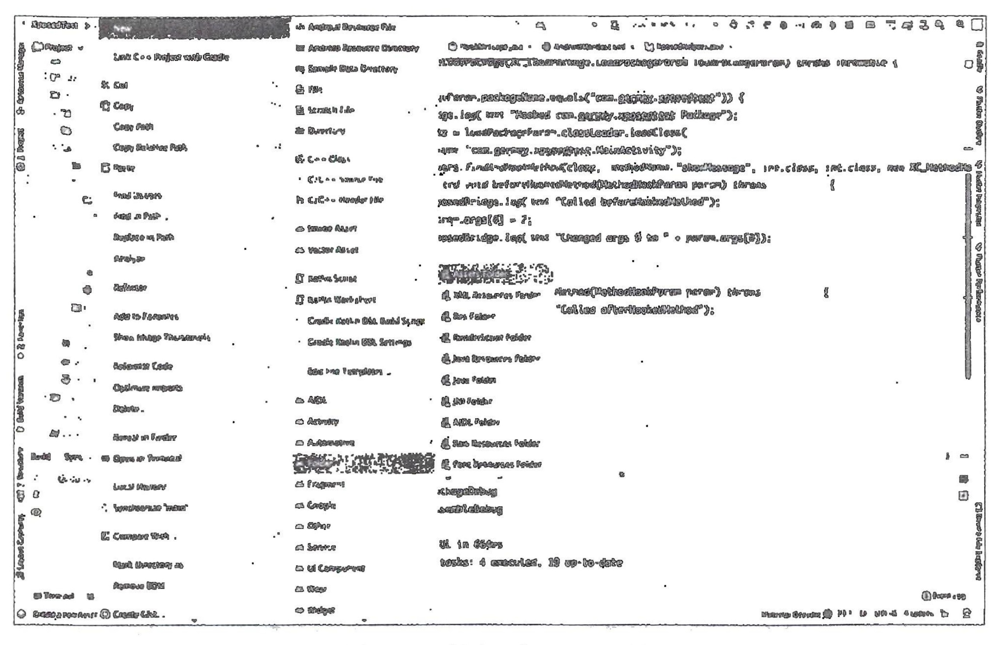
然后在 assets 文件夹下新建一个 xposed_init 文件，文件名不需要有任何后缀，如图 13-54 所示。
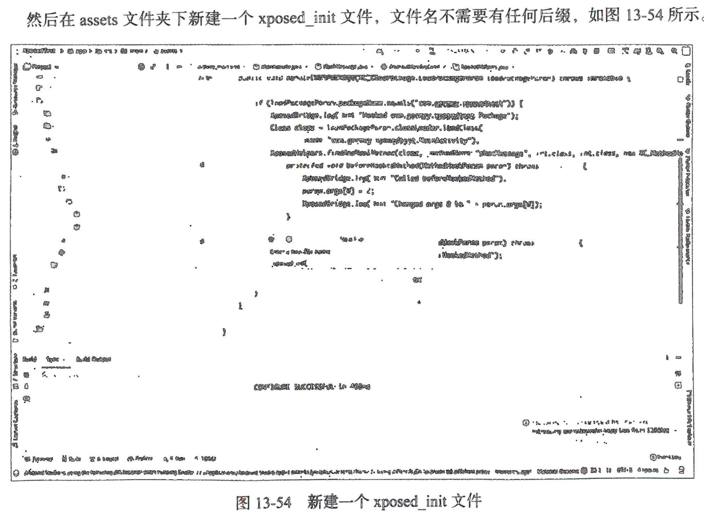
把 HookMessage 类的路径写在这个文件中,即文件内容如下:
com.germey.xposedtest.HookMessage写好后保存这个文件,Xposed模块就会自动读取xposed_init文件,并执行我们自定义的Hook逻辑。最后,重新安装一下XposedTest App看看效果,记得安装完成之后重启一下 Xposed 模块,否则是没有效果的。重启 Xposed 模块之后,点击App界面上的TEST 按钮,结果如图13-55所示。可以看到,这里的运行结果就和图13-52中的不一样了,Toast 提示信息变成了x+y=4,这说明我们通过 beforeHookedMethod方法,成功把args属性值的第一个元素,也就是showMessage 方法的x参数值修改成了2,第二个元素则还是2,相当于在 showMessage 方法被调用之前,其两个参数就被修改成了2和2,所以最后的计算结果是4。现在大家对 beforeHookedMethod方法的用法应该有进一步了解了。这个方法学习完,我们再来体会一下 afterHookedMethod 方法的用法,它用来对被 Hook方法的返回结果做后处理,例如这里我们把afterHookedMethod 方法的内容修改为:
protected void afterHookedMethod(MethodHookParam param) throws Throwable {
XposedBridge.log("Called afterHookedMethod");
param.setResult("Hooked");
}这里我们增加了一行代码——调用 param 的 setResult方法,这样可以直接修改方法的返回结果。修改完成之后,重新安装一下 XposedTest App,并重启这个Xposed 模块,还是点击 TEST 按钮,运行结果变成了图13-56所示的这样。
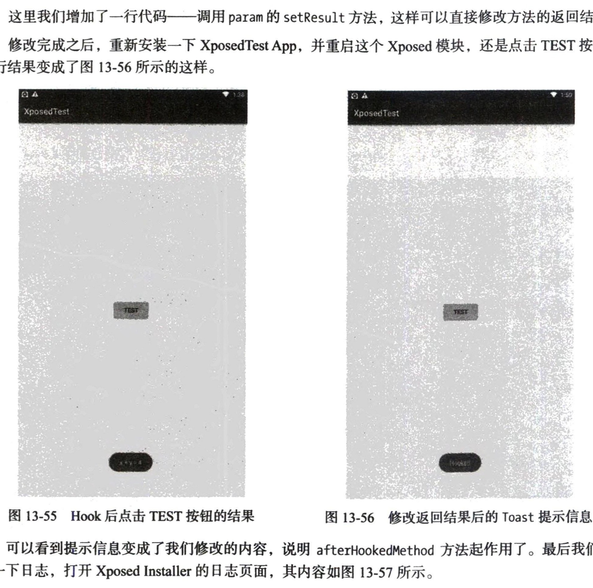
可以看到提示信息变成了我们修改的内容,说明afterHookedMethod 方法起作用了。最后我们来看一下日志,打开 Xposed Installer的日志页面,其内容如图13-57所示。
可以看到这里输出了我们用 XposedBridge模块的 log 方法输出的内容。
5. Xposed 模块提供的API
现在我们来看一下 Xposed 模块提供的API。本节前面所讲的Hook 操作就是由 Xposed 模块提供的一个API,即 findAndHookMethod 实现的。大家可以打开 https://api.xposed.info/reference/de/robv/android/xposed/XposedHelpers.html 查看所有的API,这里简单列举几个。callStaticMethod: 调用静态方法。findAndHookConstructor: 查找并Hook构造方法。findClassIfExists: 查找某个类是否存在。findField: 获取成员变量。
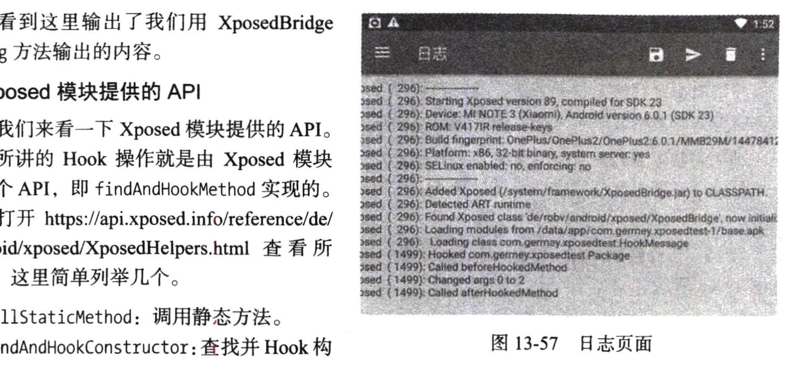
很多API是有类似功能或重合功能的,这里不再一一列举,如果感兴趣可以查看官方的文档说明。另外,非常推荐大家研究一下 Xposed 模块里各个包的用法,地址为 https://api.xposed.info/reference/de/robv/android/xposed/package-summary.html。大家还可以多研究一些优秀的Xposed 模块,例如
https://devsjournal.com/best-xposed-modules.html 里就列举了几款很受欢迎的 Xposed 模块。Xposed 框架中文站的地址是 http://xposed.appkg.com/,大家可以从中找一些优秀模块的源码研究一下,收获会非常大。
6. 总结
本节中我们通过一个案例实现了Xposed 模块的 Hook 逻辑,大家应该可以体会到Xposed 模块的作用了,13.4节我们会使用Xposed 模块爬取真实的数据。本节代码见 https://github.com/Python3WebSpider/XposedTest。
13.4 基于 Xposed 的爬取实战案例
13.3 节我们介绍了Xposed 模块的基本使用方法,本节中我们结合一个真实的案例学习如何使用Xposed 爬取 App 的数据。
1. 准备工作
本节需要的环境与13.3节是一样的,请参考那里的内容来配置环境。除此之外,还需要额外安装jadx-gui 工具并掌握它的基本用法,这个我们在13.1节已经学习过,如果忘记了,那么可以回顾一下。由于本节的内容是实战,所以也需要一个示例App,这个App和前3节是一样的,下载地址依然为 https://app5.scrape.center,下载之后依然保存为 scrape-app5.apk。做好这些后,因为本节我们需要用 Flask 搭建一个简易的测试服务器,所以还要安装好 Flask 和loguru,使用 pip3 工具安装即可:
2. 反编译
pip3 install flask loguru既然要用Xposed 模块爬取数据,就免不了要借助 Xposed 提供的一些Hook方法,那具体 Hook 什
么内容呢?选择其实有很多,例如我们可以 Hook 与构造 HTTP 请求参数相关的方法,之后可以得到一些 token 字符串;又如可以Hook 用来获取HTTP 响应结果的方法,这样相当于直接拿到了数据。可以看出,目标方法是关键。既然我们要爬取数据,那么干脆一步到位好了,直接通过Hook的方式拦截 HTTP响应结果,然后用某种方式保存下来,数据爬取就完成了。那用来获取 HTTP响应结果的方法究竟是什么呢?目前我们无从知道,所以有必要对 apk文件做一些反编译操作,反编译之后尝试分析一下代码逻辑,应该就能知道哪个方法是我们想要 Hook 的方法了。和13.1节介绍的一样,打开jadx-gui工具,然后直接打开apk文件,就可以看到反编译的结果了,如图13-58所示。
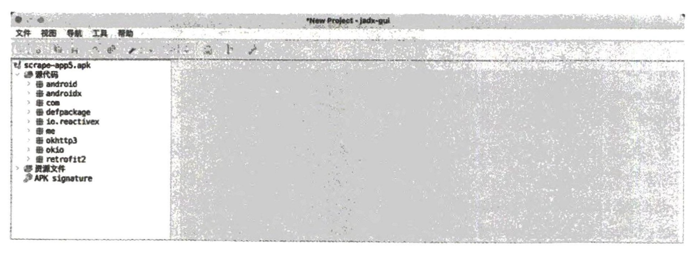
我们还是以/api/movie 为突破口进行搜索,同时打开jadx-gui 的反混淆开关,就可以找到与请求定义相关的逻辑,如图13-59所示。
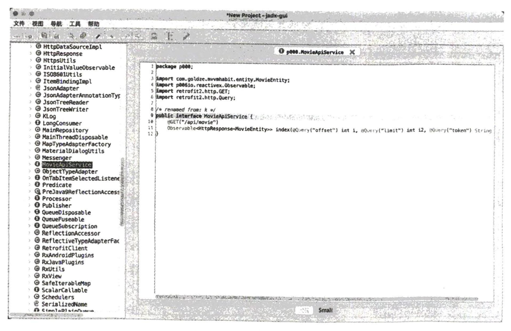
很明显可以看到,这里定义了一个index方法,接收参数 offset、limit 和token,这和示例 App
加载列表数据时发出的请求完全一致:
public interface MovieApiService {
@GET("/api/movie")
Observable<HttpResponse<MovieEntity>> index(@Query("offset") int i, @Query("limit") int i2,
@Query("token") String str);
}可以看到它的返回结果是一个 Observable<HttpResponse<MovieEntity>> 对象,为了 Hook 获取响应结果的方法,我们可以试着搜索 Observable、HttpResponse 和 MovieEntity 相关的引用及定义。例如搜索 HttpResponse 相关的引用,结果如图13-60所示。
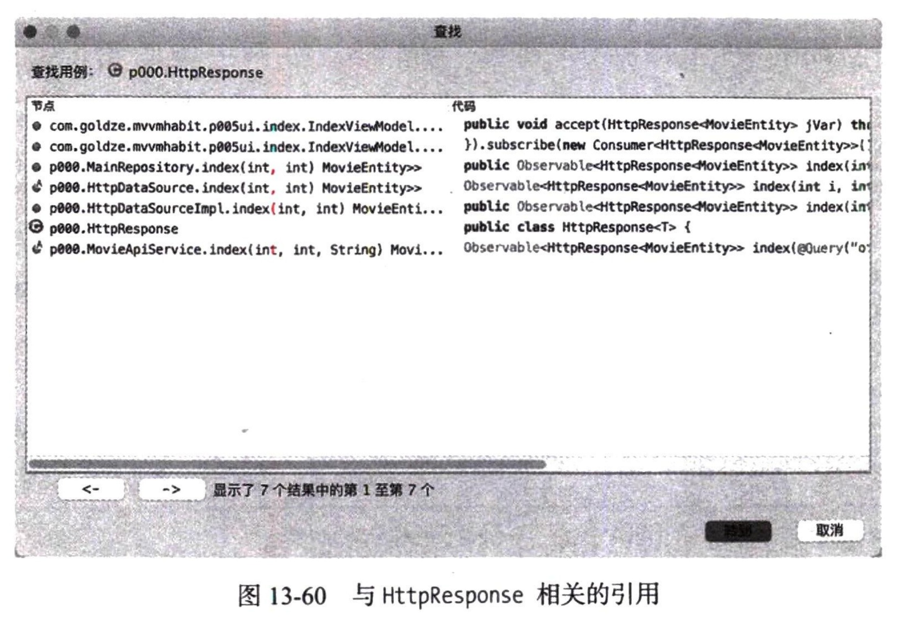
一共返回了7个结果,这里我们分析一下第一个,其外层是 requestNetwork 方法,该方法的定义如图13-61所示。
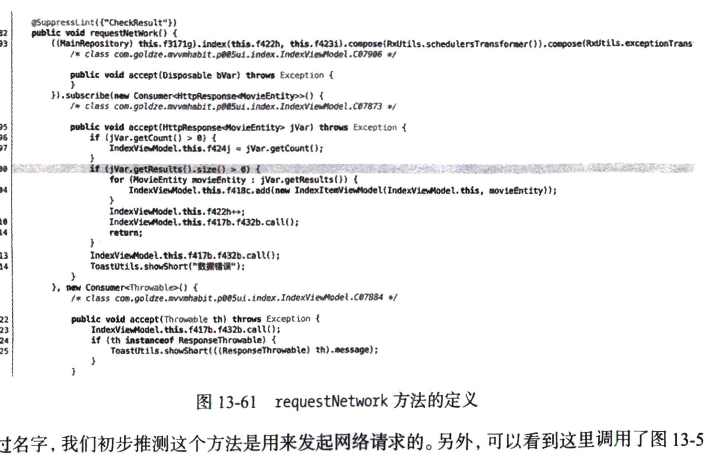
通过名字,我们初步推测这个方法是用来发起网络请求的。另外,可以看到这里调用了图13-59中
定义的 index 方法,还定义了一个 subscribe 方法来接收一些处理回调逻辑。再仔细观察,可以看到比较关键的 accept方法,其参数为jVar,是一个HttpResponse<MovieEntity>对象,方法内部调用jVar变量的 getResults 方法得到响应结果,然后用一个 for 循环遍历这些结果,并把结果添加到IndexViewModel里。到这里我们可以推测,这很可能就是 App 获取了首页的电影列表数据后,处理响应结果的过程,不然也不会有 for 循环相关的逻辑。既然数据是通过jVar变量的getResults 方法获取的,那 getResults 方法返回的一定是一个MovieEntity 列表,我们可以进一步追踪,看看 getResutls 方法是怎样定义的,于是我们跳转到定义 HttpResponse 类的位置,如图13-62所示。
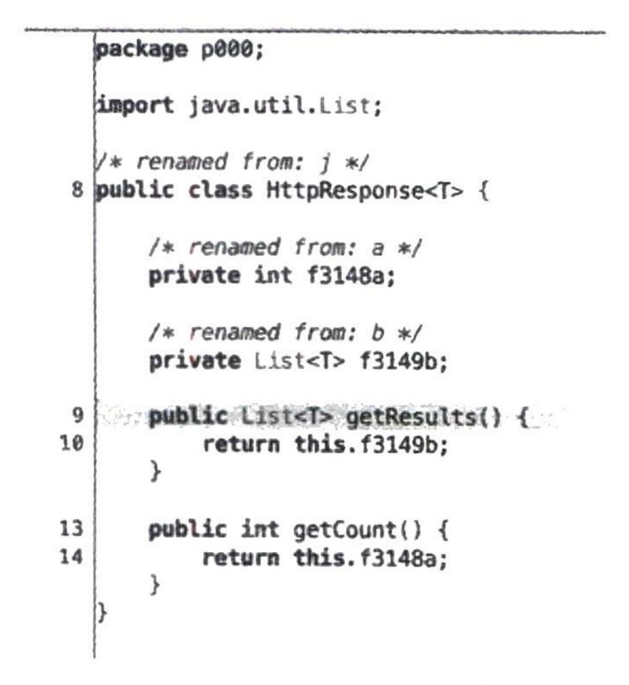
可以看到 HttpResponse 类使用了泛型,有一个占位符T,这是什么意思呢?例如给 HttpResponse<T> 中的传入MovieEntity类,这里就会变成HttpResponse<MovieEntity>,代表 HttpResponse 绑定的是 MovieEntity类,包含的数据也和 MovieEntity 类相关,而刚才往 accept 方法传入的参数正是 HttpResponse<MovieEntity>对象,所以我们可以认为这里的T就是 MovieEntity。还可以看到,getResults 方法的返回值类型是 List<T>,所以获取的响应结果是 List<MovieEntity>类型的,是MovieEntity 类返回的列表。所以,如果我们可以 Hook getResults 方法,其实就能拿到响应结果中包含的 MovieEntity 列表数据了。
3. 实现 Hook
如果前面的推测是正确的,那我们通过 Hook 就可以直接拿到响应数据了。如果数据无效,再接着进行分析和尝试。我们还是在13.3节的 XposedTest 项目下尝试 Hook,新建一个类,名字为 HookResponse,同时还是按照之前的方法修改包名、类名、方法名等,修改后的内容如下:
package com.germey.xposedtest;
import de.robv.android.xposed. IXposedHookLoadPackage;
import de.robv.android.xposed.XC_MethodHook;
import de.robv.android.xposed. XposedBridge;
import de.robv.android.xposed.XposedHelpers;
import de.robv.android.xposed.callbacks.XC_LoadPackage;
public class HookResponse implements IXposedHookLoadPackage {
public void handleLoadPackage (XC_LoadPackage. LoadPackageParam loadPackageParam) throws Throwable {
if (loadPackageParam.packageName.equals("com.goldze.mvvmhabit")) {
XposedBridge.log("Hooked com.goldze.mvvmhabit Package");
final Class clazz = loadPackageParam.classLoader.loadClass(
"com.goldze.mvvmhabit.data.source.HttpResponse");
XposedHelpers.findAndHookMethod(clazz, "getResults", new XC_MethodHook() {
protected void beforeHookedMethod (MethodHookParam param) throws Throwable {
}
XposedBridge.log("Called beforeHookedMethod");
});
}
}
protected void afterHookedMethod (MethodHookParam param) throws Throwable {XposedBridge.log("Called afterHookedMethod");
}
});
}
}
}这里我们修改了如下几处代码。
将当前 App 的包名修改为com.goldze.mvvmhabit。
将loadClass方法中类的路径修改为com.goldze.mvvmhabit.data.source.HttpResponse。
将 findAndHookMethod 方法的第二个参数修改为getResults,由于getResults 方法没有任何参数,因此直接往 findAndHookMethod 方法的第三个参数传入XC MethodHook 的回调定义。
这里的 beforeHookedMethod 方法和 afterHookedMethod 方法仅仅是打印对应的日志。另外,需要在xposed_init 方法里定义好这个入口文件,添加如下引用:com.germey.xposedtest.HookAPI添加好后,先重新安装并启动 XposedTest 这个 Xposed 模块,另外App 当然也要重新安装到手机上并运行,我们来看看能不能成功 Hook getResults方法。重新启动App后,运行结果和往常一样,如图13-63所示。这时再打开 Xposed Installer 的日志页面,可以看到输出了这些日志:Called beforeHookedMethod Called afterHooked Method Called beforeHookedMethod Called afterHooked Method Called beforeHookedMethod Called afterHooked Method App 的运行结果如图13-64所示。
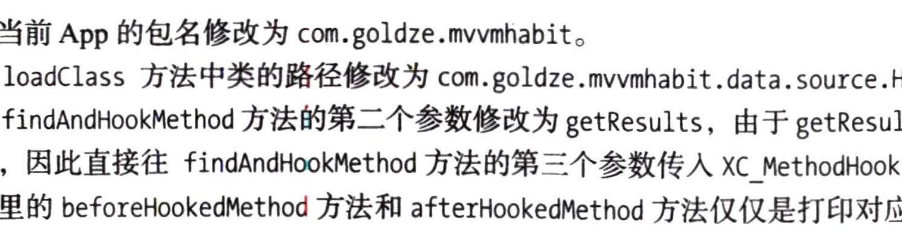
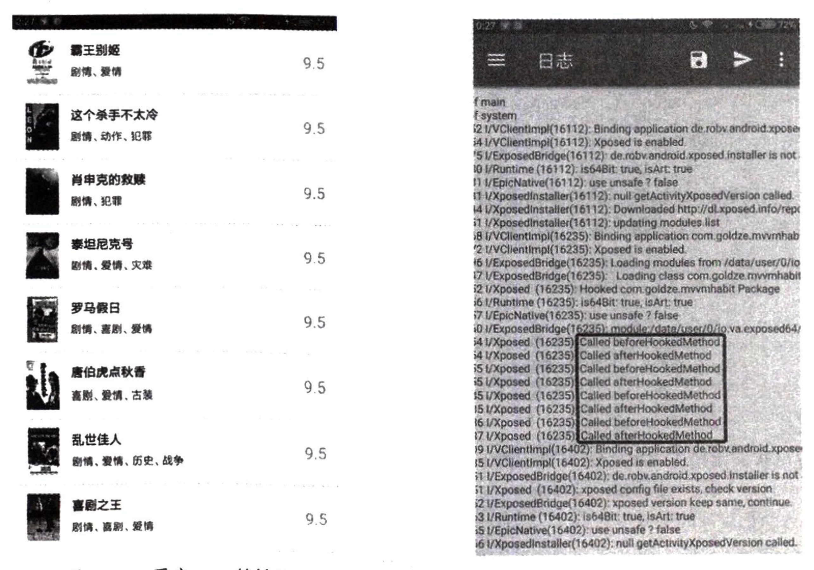
这证明我们成功 Hook了 getResults 方法!
4. 提取结果
我们现在回过头看看 getResults 方法的定义:
public List<T> getResults() {
return this.f3149b;
}这个定义非常简单,我们最关心的就是返回结果,那怎么可以拿到这个结果呢?很简单,afterHookedMethod 方法是专门做这件事的,我们可以利用它获取或者修改返回结果。这里我们不做修改,只获取,所以把 afterHookedMethod 方法的内容修改为下面这样:
protected void afterHookedMethod(MethodHookParam param) throws Throwable {
XposedBridge.log("Called afterHookedMethod");
List results = (List) param.getResult();
}这里我们做了一个强制类型转换,将返回结果转换成了 List 类型,并赋值为 results 变量,这个 results 其实就是 List<MovieEntity>。
那怎么把真实数据提取出来呢?我们可以进一步看看 MovieEntity 类的定义,回到jadx-gui工具,搜索 MovieEntity类的定义,可以看到其中包含很多字段:
@SerializedName("alias")
private String alias;
@SerializedName("categories")
private List<String> categories = new ArrayList();
@SerializedName("cover")
private String cover;
@SerializedName("drama")
private String drama;
@SerializedName("id")另外,MovieEntity 类中还定义了一个toString方法,其返回值包含我们想要的很多字段信息:
@NonNull
public String toString() {
return String.format("MovieEntity{id=%s, name=%s, alias=%s, publishedAt=%s, cover=%s, drama=%s,
categories=%s, regions=%s, score=%s, minute=%s}", Integer.valueOf(this.f410id), this.name, this.alias,
this.publishedAt, this.cover, this.drama, this.categories, this.regions, Float.valueOf(this.score),
Integer.valueOf(this.minute));
}我们可以逐个提取想要的字段,也可以直接使用toString 方法获取所有字段。为了方便,我们采取后者,于是按下面这样修改 afterHookedMethod 方法的内容:
protected void afterHookedMethod (MethodHookParam param) throws Throwable {
XposedBridge.log("Called afterHookedMethod");
List results = (List) param.getResult();
for (Object o : results) {
XposedBridge.log(o.toString());
String entity = o.toString();
XposedBridge.log("MovieEntity" + entity);
}
}这里我们遍历了 results 变量中的元素,每次都将当前元素赋值为变量 o,这个 o 其实就是MovieEntity 对象,我们调用它的toString方法可以得到一个长字符串,这个字符串中包含id、name、alias 等我们想要的字段信息。现在重新运行一下Xposed 模块和App,并再次观察 Xposed Installer的日志页面，结果如图13-65 所示。
可以看到,每条电影数据都成功被解析出来并输出到了日志中,例如第一条电影数据:
MovieEntity{id=1,name=霸王别姬,alias=Farewell My Concubine,
publishedAt=1993-07-26, cover=https://po.meituan.net/movie/ce4da3e03e655b5b88ed31b5cd7896cf62472.jpg@464w_644h_1e_1c,drama=影片借一出《霸王别姬》的京戏,牵扯出三个人之间一段随时代风云变幻的爱恨情仇。段小楼(张丰毅饰)与程蝶衣(张国荣饰)是一对打小一起长大的师兄弟,两人一个演生,一个饰旦,一向配合天衣无缝,尤其一出《霸王别姬》,更是誉满京城,为此,两人约定合演一辈子《霸王别姬》。但两人对戏剧与人生关系的理解有本质不同,段小楼深知戏非人生,程蝶衣则是人戏不分。段小楼在认为该成家立业之时迎娶了名妓菊仙(巩俐饰),致使程蝶衣认定菊仙是可耻的第三者,使段小楼做了叛徒,自此,三人围绕一出《霸王别姬》生出的爱恨情仇战开始随着时代风云的变迁不断升级,终酿成悲剧。,categories=[剧情,爱情], regions=[中国大陆,中国香港],
score=9.5, minute=171}我们想要信息都包含在这里面!
5. 数据保存
我们已经成功在手机端拿到电影数据了,还剩两个问题需要解决——怎么把数据保存下来和保存到哪里?如果直接保存在手机上,可行是可行,但是不方便我们做后续的数据处理;如果保存到指定的数据库中,那我们还需要从手机中进一步提取数据。两种方式好像都有弊端。
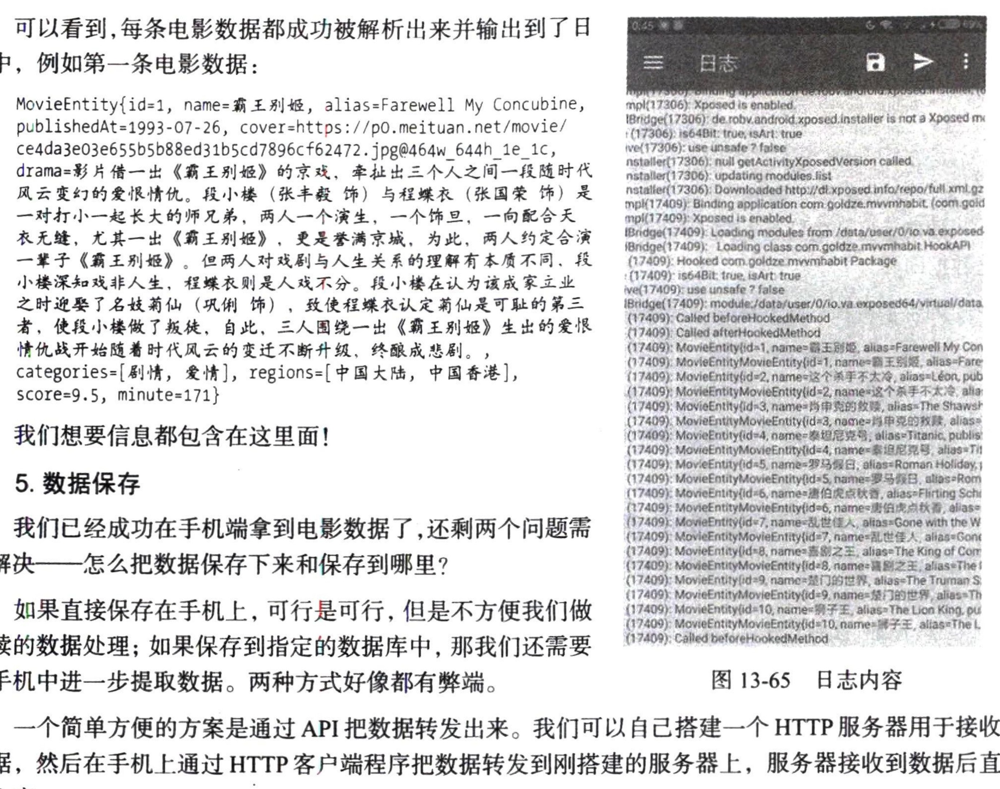
一个简单方便的方案是通过API把数据转发出来。我们可以自己搭建一个HTTP服务器用于接收数据,然后在手机上通过HTTP客户端程序把数据转发到刚搭建的服务器上,服务器接收到数据后直接入库。那接下来我们就有两件事需要做。
搭建服务器:搭建一个HTTP服务器,这个服务器可以接收HTTP客户端的请求,从请求中解析出数据,然后将数据保存下来。
发送数据:在手机上通过 Xposed 模块截获数据后,将数据通过HTTP客户端程序发送到搭建的HTTP服务器上。
搭建 HTTP 服务器
我们可以使用一些轻量级的框架(例如Flask)搭建 HTTP服务器。Flask提供一个支持 POST 请求的API,能从请求体中解析出数据,然后做后续处理,代码实现如下:
from flask import Flask, request, jsonify
from loguru import logger
app = Flask(__name__)
@app.route('/data', methods=['POST'])
def receive():
data = request.form.get('data')
logger.debug(f'received {data}')
return jsonify(status='success')
if __name__ == '__main__':
app.run(debug=True, host='0.0.0.0')这个实现过程非常简单,就是从请求体的表单数据中提取出 data 字段,然后将其打印出来。运行此 Python 脚本,Flask 会默认在5000端口上提供服务,运行结果如下:
Serving Flask app "server" (lazy loading)
Environment:production
WARNING: This is a development server. Do not use it in a production deployment.Use a production WSGI server instead.
Debug mode:on
Running on http://0.0.0.0:5000/ (Press CTRL+C to quit)
Restarting with stat
Debugger is active!
Debugger PIN: 269-657-055如果手机和电脑处在同一局域网下,用手机其实就能访问到该服务器了,调用客户端程序直接发送数据即可。如果手机和电脑不在同一局域网下,那么我们可以使用ngrok命令将电脑上的服务暴露出去:ngrok http 5000这个命令运行之后,会提供公网可以访问的HTTP URL 和HTTPS URL,这两个URL 和电脑的5000端口相映射,这样即使手机和电脑不在同一局域网下,手机也能把数据发送给电脑。
发送数据
那怎么在手机上发送数据呢?我们可以借助Android 中比较流行的OkHttp库,其GitHub 地址是 https://github.com/square/okhttp。在XposedTest App中的 build.gradle 文件中的 dependencies 部分添加对 OkHttp 库的引用:
implementation 'com.squareup.okhttp3:okhttp:3.10.0'然后在刚才定义的HookResponse 类中添加一个 sendDataToServer方法,方法定义如下:
public class HookResponse implements IXposedHookLoadPackage {
public static final MediaType JSON
= MediaType.parse("application/json; charset=utf-8");
public void sendDataToServer(String data) throws IOException {
String server = "http://<SERVER_HOST>/data";
RequestBody formBody = new FormBody.Builder()
.add("data", data)
.add("from", "Xposed")
.add("crawled_at", String.valueOf(System.currentTimeMillis()))
.build();
OkHttpClient client = new OkHttpClient();
Request request = new Request.Builder()
.url(server)
.post(formBody)
.build();
client.newCall(request).enqueue(new Callback() {
public void onFailure(Call call, IOException e) {
XposedBridge.log("Save failed:" + e.getMessage());
}
public void onResponse(Call call, Response response) throws IOException {
XposedBridge.log("Saved successfully: " + response.body().string());
}
});
}
}在 sendDataToServer方法中,我们首先声明了一个 server 变量,在具体运行的时候,请把其值中的 SERVER_HOST 修改成自己电脑的IP或者ngrok命令暴露出的地址。然后用 OkHttp库构造了一个RequestBody 对象,该对象包括三个字段,其中data 是字符串类型的数据;from 是爬取来源,此处值为Xposed,代表数据是从 Xposed 模块爬取的;crawled_at 是当前的时间戳。最后新建了一个
OkHttpClient 对象,赋值给 client 变量,并根据 server 变量和 RequestBody 对象构造了一个 Request对象,发起 HTTP 请求。再修改一下 afterHookedMethod 方法:
protected void afterHookedMethod(MethodHookParam param) throws Throwable {
XposedBridge.log("Called afterHookedMethod");
List results = (List) param.getResult();
for (Object o : results) {
XposedBridge.log(o.toString());
String entity = o.toString();
XposedBridge.log("MovieEntity" + entity);
sendDataToServer(entity);
}
}重新运行 Xposed 模块和 XposedTest App,这时 Flask 服务器的输出结果如下:
2021-07-18 21:11:52.316 | DEBUG | __main__:receive:10 - received MovieEntity{id=20, name=迁徙的鸟,alias=TheTravelling Birds, publishedAt=2001-12-12, cover=https://p1.meituan.net/movie/a1634f4e49c8517ae0a3e4adcac 6b0dc43994.jpg@464w_644h_1e_1c,drama=当鸟儿用羽翼去实现梦想,翱翔在我们永远无法凭借自身企及的天空,人类又该赋予他们怎样的赞叹呢?“鸟的迁徙是一个关于承诺的故事,一种对于回归的承诺。”雅克·贝汉以这样一句话带我们踏上了鸟与梦飞行之旅。,categories=[纪录片], regions=[法国,德国,意大利,西班牙,瑞士],score=9.1, minute=98} 127.0.0.1 - - [18/Jul/2021 21:11:52] "POST /data HTTP/1.1" 200 -
2021-07-18 21:11:52.317 | DEBUG | __main__:receive:10 - received MovieEntity{id=18, name=海上钢琴师,alias=La leggenda del pianista sull'oceano,
publishedAt=2019-11-15, cover=https://po.meituan.net/movie/609e45bd40346eb8b927381be8fb27a6160914.jpg@464w_644h_1e_1c,drama=1900年的第一天,往返于欧美两地的邮轮Virginian号上,负责邮轮上添加煤炭的工人丹尼·博德曼(比尔·努恩饰)在头等舱上欲捡拾有钱人残留下来的事物时,
可以看出,在手机端获取的数据已经成功转发到 Flask 服务器上了!后面我们只需要完善一下Flask 服务器的相关逻辑,对数据进行处理并保存即可,具体流程这里不再展开讲解。
6. 总结
本节我们通过实例讲解了利用 Xposed 模块 Hook 关键方法的实现过程,利用 Xposed 模块,我们可以成功拦截想要的数据,还可以对数据做进一步处理,将其转发到电脑上保存起来。
有了 Xposed,我们几乎可以 Hook 所有方法来截获想要的内容,App 尽在我们掌握之中,“为所欲为”不再是奢望,爬虫自然也不在话下。本节代码见 https://github.com/Python3WebSpider/XposedTest。
13.5 Frida 的使用
在 13.4 节和 13.5 节,我们了解了 Xposed 的基本用法,可以说只要找到位置,就能通过 Hook 拿到数据。然而 Xposed 是具有局限性的,例如它只能 Hook Java 层的逻辑,不能 Hook Native 层的。另外,整个 Xposed 模块的逻辑需要使用 Java 语言实现,如果我们对 Java 不熟悉,那么实现起来会有一定难度。什么是 Native 层的逻辑呢?简单理解这就是使用 C/C++编写的一些逻辑。假设某个 App 中的某些算法是用 C/C++实现的,它们最终会被编译到一个 so 格式的文件中,Java 层可以直接调用该 so 文件执行对应的加密算法,而无须知道文件内部的具体逻辑。Xposed 是用 Java 实现的,可以 Hook Java层的逻辑,但对于 Hook Native 层的逻辑,就无能为力了。
本节我们就介绍另外一个简单好用的 Hook 神器——Frida!如果要用几个词描述 Frida,那就是强大、方便、灵活。
1. Frida 的简介
Frida 是一个基于 Python 和 JavaScript 的 Hook 与调试框架,是一款易用的跨平台 Hook 工具,无论 Java 层的逻辑,还是 Native 层的逻辑,它都可以 Hook。Frida 可以把代码插入原生 App 的内存空间,然后动态地监视和修改其行为,支持 Windows、Mac、Linux、Android、iOS 全平台。
Frida 是使用 Python 注入 JavaScript脚本实现的,可以通过JavaScript脚本操作手机上的Java代码,Python 脚本和 JavaScript脚本的编写跟执行是在电脑上进行的,而且无须在手机上额外安装App和插件,所以整体实现起来更加灵活和轻量级,调试起来也更加方便。而Xposed 需要使用Java实现一个模块,然后编译并安装到手机上,灵活性相对差一些,但如果要做持久化的Hook,还是推荐使用Xposed。下面简单列一下Xposed 和Frida的优缺点。
Xposed 的优缺点
优点:非常适合编写Java层的Hook逻辑,因为自己就是用Java语言编写的;适合一些持久化的Hook 操作,编写完毕后可以独立且永久地运行在手机上,适用于生产实践。缺点:配置环境的过程比较烦琐,在调试过程中需要编译和重新安装Xposed模块,对Hook Native层逻辑无能为力。
Frida 的优缺点
优点:Java 层和 Native 层的逻辑都能 Hook;在电脑上编写和执行脚本,修改之后无须重新编译和额外在手机上安装App,操作方便又灵活;环境配置简单,能很好地支持跨平台。缺点:是用JavaScript 操作 Java 逻辑,所以兼容性会差一些;更适合在开发阶段调试时使用,不太适合应用于生产实践。
2. 准备工作
请确保已经配置好Frida的环境,并能成功在电脑上用Frida连接到手机,具体有3个要求。
在电脑上安装好 frida-tools,并可以成功导入使用。
在手机上下载并运行 frida-server文件,即在手机上启动一个服务,以便电脑上的Frida客户端程序与之连接。
让电脑和手机处在同一个局域网下,并且能在电脑上用adb命令成功连接到手机。具体的安装方法可以参考https://setup.scrape.center/frida。以上准备工作做好之后,就可以在电脑上运行 frida-ps命令查看手机上运行着的App 进程了,命令如下:frida-ps -U运行结果类似图13-66所示的这样。
控制台输出了手机上运行的进程,证明电脑和手机连接成功!本节接下来会以两个简单的App为例,讲解 Frida的基础使用方法,所以请先下载并安装这两个App。AppBasicl: https://appbasicl.scrape.center/。AppBasic2: https://appbasic2.scrape.center/。
3. Hook Java 层的逻辑
首先,我们把下载好的第一个App安装到模拟器上,该App 启动后的页面如图 13-67 所示。整个页面非常简洁,中间有一个Test按钮,点击该按钮,会出现 Toast 提示信息,内容为3。这其中的逻辑是怎样的呢?我们可以直接用jadx-gui反编译一下apk文件,从源码中查找入口,如图13-68所示。可以看到源码非常简单,整体逻辑就是点击按钮后触发onClickTest 方法,然后这个方法直接调用 Toast 的 makeText方法,显示 getMessage 方法的返回结果。这里getMessage方法实现的是基本的加和操作,因为在调用时传入的参数是1和2,所以显示的Toast 内容就是3。
那怎么进行 Hook呢,我们可以定义这样一个JavaScript 脚本:
Java.perform(() => {
let MainActivity = Java.use('com.germey.appbasic1.MainActivity')
console.log('start hook')
MainActivity.getMessage.implementation = (arg1, arg2) => {send('Start Hook!')
return '6'
}
})将其保存为 hook_java.js文件。这里我们编写的是一个全局可用的Java对象,通过调用其 perform方法来实现我们的Hook逻辑。首先调用Java 对象的use方法获取指向 MainActivity类的指针,并赋值为 MainActivity。然后改写 MainActivity 中的 getMessage 方法,由于这个方法接收两个参数,因此这里也写两个参数——arg1 和arg2,分别代表源码中的i和i2,但这里我们没有对arg1 和arg2 做加和操作,而是直接返回了数字6,这样就完成了方法的改写——不使用接收到的参数,直接返回数字6。Hook 逻辑定义好了,怎么让它生效呢?使用Python脚本调用即可,于是新建一个hook_java.py文件,文件内容如下:
import frida
import sysCODE = open('hook_java.js', encoding='utf-8').read()
PROCESS_NAME = 'com.germey.appbasic1'def on_message(message, data):
print(message)process = frida.get_usb_device().attach(PROCESS_NAME)
script = process.create_script(CODE)
script.on('message', on_message)
script.load()
sys.stdin.read()这里我们首先读出刚编写的JavaScript代码,并赋值为CODE 变量,即把代码转成了Python 字符串,然后声明了一个包名,并赋值为 PROCESS_NAME 变量。接着我们使用 frida包中的get_usb_device 方法获取了当前连接的设备,并调用设备的 attach 方法挂载了对应的进程,该进程被赋值为 process 变量。之后我们调用process变量的 create_script 方法往进程中注入了 Hook脚本(就是传入 CODE 变量),并将返回结果赋值为 script 变量。对于 script 变量,我们可以设置事件监听和回调方法,例如这里监听 message事件,回调方法设置为 on_message,这样一来,JavaScript 代码中任何通过 send 方法发送的数据,on_message 方法都会接收到对应的内容,这就实现了JavaScript 到 Python 的消息通信。最后,调用script 变量的load 方法注入脚本。接下来我们先启动AppBasic1,再启动编写的Python脚本:python3 hook_java.py此时点击 TEST按钮,页面如图13-69所示。
可以看到这里显示的Toast 信息是6,正是我们在JavaScript 代码中定义的返回值,证明 Hook 成功了!同时观察一下电脑上的控制台,显示的内容如图13-70所示。
从这里可以看到,每点击一次按钮,控制台就会输出一行代码,代码内容为:
{'type': 'send', 'payload': 'Start Hook!'}这里 payload 的内容就是我们在JavaScript 代码中使用send 方法发送的消息内容,代表我们在Python 脚本中成功接收到了这个消息,实现了JavaScript脚本与 Python 脚本的通信。如果我们能 Hook 某个方法的执行结果,然后通过JavaScript 代码把它保存为某个变量,再利用 send 方法把这个变量发送给 Python 脚本,Python 就能成功获取代码的返回结果了,之后对结果进行处理和保存,数据爬取就完成了。
4. Hook Native 层的逻辑
现在我们尝试用 Frida 工具 Hook Native 层的代码,即so文件中的方法。先来看一下AppBasic2在Hook 之前的启动页面,如图13-71所示。
同样地,使用jadx-gui 反编译 apk文件,查看逻辑入口,如图13-72所示。
可以看到 MainActivity 类中声明了一个 native 方法,叫作 getMessage,其参数也是i和i2,但是这里并没有它的具体实现。紧接着的实现也很关键:
static {
}
System.loadLibrary("native");这里通过 System 类的loadLibrary 方法加载了一个native库,其实就是加载了一个Native 层的 so文件,所以源码中应该有对应的so文件,在源码中仔细找一下,是可以找到的,如图13-73 所示。
可以看到这里有好几个so文件,它们适用于不同平台,名字都是 libnative.so。对于so文件,jadx-gui就无能为力了,因为这是由C/C++编译成的文件,jadx-gui没法通过反编译得到其源码。那能用 Frida 进行Hook吗?能!我们来修改一下 getMessage 方法的返回结果。同样先实现一个JavaScript 脚本:
Java.perform(function () {
Interceptor.attach(Module.findExportByName('libnative.so',
'Java_com_germey_appbasic2_MainActivity_getMessage'), {
onEnter: function (args) {
send('hook onEnter')
send('args[1]=' + args[2])
send('args[2]=' + args[3])
},
onLeave: function (val) {
send('hook onLeave')
val.replace(Java.vm.getEnv().newStringUtf('5'))
}
})
})将其保存为 hook_native.js 文件。跟Hook Java 层时的逻辑不同,要Hook Native层,需要利用Interceptor 对象的attach方法,其第一个参数是指向 Native 方法的指针,第二个参数是 Hook 逻辑的实现。
对于第一个参数,这里直接调用 Module 对象的 findExportByName 方法获取了指针,该方法的第一个参数是so文件的名称,这里就是libnative.so;第二个参数是符合一定命名规范的方法路径,开头是Java,然后是包名,注意包名中间的连接字符变成了下划线,接着是被Hook方法所在的Activity 的名称,这里就是MainActivity,最后就是方法名称,这些内容都通过下划线连接。
对于第二个参数,这里我们定义了两个 Hook方法,其中 onEnter 代表被 Hook 方法执行前的逻辑,onLeave 代表被 Hook 方法执行后的逻辑。onLeave 方法的参数是val,代表被 Hook的方法,即 getMessage。根据图13-71, getMessage 原本的返回结果是3,这里我们调用val 的replace 方法,将其替换成了5,实现了返回结果的修改。
然后调用这个脚本,新建一个hook_native.py文件:
import frida
import sys
CODE = open('hook_native.js', encoding='utf-8').read()
PROCESS_NAME = 'com.germey.appbasic2'
def on_message(message, data):
print(message)
process = frida.get_usb_device().attach(PROCESS_NAME)
script = process.create_script(CODE)
script.on('message', on_message)
script.load()
sys.stdin.read()这里跟 Hook Java 层时的不同体现在 JavaScript 文件的路径和App的包名上,其他完全一样,这里不再展开讲解。
重新启动 AppBasic2,同时启动该 Python 脚本:
python3 hook_native.py此时点击 TEST按钮,页面如图13-74所示。可以看到 Toast 信息变成了5,同时控制台的输出内容如图13-75所示。
一样地,这里的payload 值就是我们在JavaScript 脚本中使用 send 方法发送的消息内容,我们在onEnter 方法中调用send方法,发送了arg1 和arg2的值,然后 Python 脚本成功接收到了这个消息,实现了 JavaScript 脚本与Python 脚本的通信。
5. 总结
本节我们使用 Frida Hook了Java 层和 Native层的逻辑,通过这两个基本的案例,相信大家可以初步体会到 Frida 的基本操作和API的编写方法。当然,Frida能做的远远不止这些,更多的API使用方法可以参考官方文档 https://frida.re/docs/home/。本节代码见 https://github.com/Python3WebSpider/FridaDemo。本节内容的参考来源。
Frida 官方文档。
CSDN网站上“Android逆向之旅——Hook 神器 Frida 使用详解”文章。
最后,如果你想深入学习Frida,这里推荐一本书——陈佳林(网名r0ysue)的《安卓 Frida 逆向与抓包实战》,这本书讲述了利用 Frida进行Android App 逆向和抓包的相关知识,可以学习一下。
13.6 SSL Pinning 问题的解决方案
在第12章中,我们了解了App抓包的相关内容,但并不是每时每刻都能顺利地抓到包。在某些情况下,我们可能会抓包失败,一个比较典型的现象是包能抓到,响应状态码是200,但就是获取不到最终的结果,报错信息一般跟SSL Pinning(证书锁定)有关系。本节我们就具体了解一下什么是SSL Pinning 以及怎么解决这个问题。本节的解决方案和 Xposed、Frida 有关系,正好我们刚学习了这两个工具,因此也可以加深对它们的理解。
1. 实战案例
为了更好地复现 SSL Pinning 场景,我们对一个App (https://app4.scrape.center/)进行抓包,这个App里包含 SSL Pinning 的相关设置,如果我们将手机的代理设置为抓包软件提供的代理服务,那么这个App 在请求数据的时候会检测出证书并不是受信任的证书,从而直接断开连接,不继续请求数据,相应的数据便会加载失败。首先,在手机上安装这个App,此时的手机没有设置任何代理,可以发现数据是能正常加载的,如图13-76所示。
接下来就要抓包了,我们还是以 Charles 为例,当然用其他抓包软件(如Fiddler)也可以。在电脑上启动 Charles 之后,确保手机和电脑连在同一个局域网下,然后在手机上设置 Charles 的代理,具体的配置方法见 12.1节。然后重启手机,重新打开App,会出现“证书验证失败”的提示信息,而且不会加载出任何数据,如图13-77所示。
与此同时,Charles的抓包结果如图13-78所示。
可以看到这里报了一个错误的原因(Failure): Client closed the connection before a request was made.Possibly the SSL certificate was rejected.。此时如果取消 Charles 的代理,然后重新打开App,就又能成功加载数据了。以上展示的就是SSL Pinning 导致的抓包失败现象,为什么会这样呢?下面我们具体了解一下其中的原理。
2. SSL Pinning 技术的原理
SSL Pinning 是一种防止中间人攻击的技术,只针对 HTTPS协议。在遵循HTTPS协议的数据通信过程中,客户端和服务端在握手建立信任时,有一步是客户端收到服务器返回的证书,然后对该证书进行校验,如果这个证书不是自己信任的证书,就直接断开连接,不再进行后续的数据传输,这就会导致整个HTTPS请求失败。为了更好地理解其中的原理,我们在电脑上做一个小实验,打开百度首页,在浏览器左上角看一下证书的信息,如图13-79所示。点击“证书”,可以看到证书详情,如图13-80所示。
可以看到证书的签发者是 GlobalSign Organization Validation CA。GlobalSign Organization 成立于1996年,是一家声誉卓著,备受信赖的CA中心和SSL 数字证书提供商,鉴于其权威性,我们认为其颁发的证书是可信的。
接下来,我们将电脑的全局代理设置为 Charles,一般在 Charles 的菜单中可以设置,打开Proxy→macOS Proxy/Windows Proxy,将此选项勾选上即可。注意在设置全局代理之前,请先在电脑上设置信任 Charles Proxy CA 这个根证书颁发机构(这也是一种证书),具体的设置方法可以参考 https://setup.scrape.center/charles。现在刷新一下百度首页,再次查看证书详情,如图 13-81 所示。
可以看到,当前的证书签发者变成了 Charles Proxy CA。那此时的电脑要不要信任 Charles Proxy CA颁发的证书呢?答案是要,因为我们已经设置了信任 Charles Proxy CA,如果没设置,那现在访问百度页面就会出现 SSL 安全提示。于是我们可以初步得出一个结论:在电脑上设置了信任 Charles Proxy CA 证书后,如果 PC 使用Charles 的代理来访问 HTTPS 网站,所使用的证书就会变成 Charles Proxy CA 颁发的。电脑上是这样,手机上自然也是。在抓包之前,我们先在手机上设置信任 Charles 的证书(也就是信任 Charles Proxy CA ),之后在手机上使用 Charles 代理访问 HTTPS 网站的时候,所有的网站证书就会是 Charles Proxy CA 颁发的,因为手机信任 Charles Proxy CA,所以自然就能正常访问对应的HTTPS 网站了。那么关键点来了。我们在开头提到客户端(这里就是指 App)在获取证书信息之后,是可以对证书做校验的,如果不做校验,那么不会有任何问题,但一旦校验,并发现指纹不匹配,就会直接中断连接,请求自然就失败了?那这个校验过程怎么实现呢?校验证书的指纹即可。因为使用代理和不使用代理的证书颁发机构不是一个,所以两个证书的指纹也不一样,只要证书的指纹跟指定的指纹不一样,就算校验失败。例如当前证书的指纹,见图 13-82 中框出来的内容。
在开发阶段,如果知道服务器返回的证书指纹,是可以提前把指纹写死在客户端这边的。客户端获取证书后,对比证书的指纹跟写死的指纹是否一致,如果一致就通过校验,否则不通过,中断后续的数据传输。
这个过程具体怎么实现呢?通常有两种方式。
对于7.0及以上版本的Android 系统,SDK提供了原生的支持。在App开发阶段,会直接将指纹写死在一个xml文件里,然后在AndroidManifest.xml 文件中添加一个android:networkSecurityConfig 配置,具体的配置可以参考 Android 官方文档
https://developer.android.com/training/articles/security-config。不过要注意 Android 系统的版本。
直接将指纹和校验流程写在 Android 代码里,现在 现在 Android 的很多HTTP请求库是
基于 OkHttp 库开发的,OkHttp 的SDK 就提供了对SSL Pinning 的支持,一般可以在初始化OkHttpClient 对象的时候添加 certificatePinner 这个选项,将信任的证书指纹写死。当然除了OkHttp,其他库也提供类似的支持。第二种方式的适用性更广,不局限于特定的Android 版本,本节也将基于第二种方式实现。
至此,SSL Pinning 技术的原理就解释清楚了。简单点讲,就是客户端和服务端在握手过程中,客户端对服务端返回的证书进行校验,如果证书不是自己信任的,就拒绝后续的数据传输过程,这样抓包工具自然抓不到有效的信息。
3. 绕过
明白了原理,那怎样才能绕过这个技术,解除它的限制呢?有以下几个解决思路。
某些 App是使用第一种方式实现的SSL Pinning,这种方式对 Android 版本有要求。所以,直接使用7.0以下的Android系统,即可解除限制。
既然客户端会校验证书,那我们可以直接Hook某些用于校验证书的API,不管证书是否可信,都直接返回true,从而绕过校验证书的过程。我们已经学习了 Xposed、Frida等工具,可以基于它们实现 Hook 操作。
通过反编译的方式还原 App代码,修改 AndroidManifest.xml 文件或者代码中用于校验证书的逻辑,修改完后重新打包签名。不过由于App代码不好完全还原,该方法的可行度并不高。其中第二个的可行度最高,所以下面介绍三种基于第二个思路的解决方案。
Xposed + JustTrustMe
Just TrustMe 是一个Xposed 模块(https://github.com/Fuzion24/JustTrustMe),其基本原理就是通过Hook 证书校验相关的API,绕过证书校验的过程。
首先下载 apk 文件(https://github.com/Fuzion24/JustTrustMe/releases/),并把 JustTrustMe App 安装到手机上,然后在 Xposed 的模块设置里开启JustTrustMe,如图13-83所示。之后重启手机,使刚才的操作生效。此时重新打开示例 App,会发现数据成功加载出来了,如图13-84所示。
Charles 中也能正常抓取数据包了,如图13-85所示。
VirtualXposed + JustTrustMe
Xposed + JustTrustMe 的方案有一个限制,就是手机需要 ROOT,解锁 bootloader 等。对于一些系统版本比较高的手机,ROOT 操作是比较困难的,所以提供了另一种解决方案,用 VirtualXposed 代替Xposed (https://github.com/android-hacker/VirtualXposed)。
VirtualXposed 是基于 VirtualApp和epic,在非 ROOT环境下运行Xposed 模块实现(支持Android 5.0~Android 10.0)的,是一款运行在Android 系统中的沙盒产品,可以将其理解为轻量级的 Android 虚拟机。要实现 Hook,我们需要将App安装到 VirtualXposed对应的沙盒里,再配以一些Xposed 模块(如JustTrustMe),即可绕过SSL Pinning 技术。首先,安装 VirtualXposed,其运行页面如图13-86所示。然后点击界面下方的菜单按钮,进入设置页面,如图13-87所示。
点击“添加应用”,将手机中的App安装到 VirtualXposed 的沙盒环境中,如图13-88所示,勾选对应的两个App(这里需要提前在手机上安装好示例 App 和JustTrustMe App),再点击“安装”即可。在安装过程中,可能会提示“是安装到 VirtualXposed 还是 TaiChi”,这里我们直接选择VirtualXposed。补充 TaiChi(太极)也是一个类似Xposed的模块,同样不需要ROOT就能使用,大家可以了解一下。另外,它还有一个增强版的模块,叫作太极Magisk,功能非常强大,大家也可以试试看。接下来返回设置页面,点击“模块管理”,如图13-89所示。这里会自动检测到刚安装的 JustTrustMe模块,勾选即可,如图13-90所示。
之后需要重新启动 VirtualXposed。
最后,我们在 VirtualXposed 里打开安装好的示例App,即可发现数据能成功加载出来了,Charles也可以成功抓取数据包了。
Frida + DroidSSLUnpinning
既然 Xposed + JustTrustMe的原理是Hook 证书校验的逻辑,这个逻辑是通过Xposed 模块实现的,那能不能基于同样的原理利用Frida实现 Hook呢?能。如果想基于 Frida实现 Hook,那么可以结合 DroidSSLUnpinning 这个开源库,其GitHub 地址是
https://github.com/WooyunDota/DroidSSLUnpinning。首先下载对应的GitHub仓库:
git clone https://github.com/WooyunDota/DroidSSLUnpinning该仓库中有一个Hook脚本,我们可以直接使用frida命令启动:
cd DroidSSLUnpinning/ObjectionUnpinningPlusfrida -U -f com.goldze.mvvmhabit 1 hooks.js --no-pause这里要给 frida 命令的-f选项传入要处理的App包名,给-1传入要 Hook的脚本,命令的运行结果如图13-91所示。
13.7 Android 脱壳技术简介与实战
之后,Hook 脚本便会生效,而且我们可以发现,示例 App 可以成功加载数据了!Charles 也可以成功抓取数据包,和使用 Xposed/VirtualXposed + JustTrustMe 的效果是一样的。
4. 总结
本节我们介绍了 SSL Pinning 技术的原理和解决办法,随着移动互联网的发展,使用 SSL Pinning的现象会越来越普遍,因此绕过它成为了移动爬虫开发者的必备技能之一,需要好好掌握。
在 Android 逆向中,大家应该或多或少听说过加壳、脱壳等词,那这个壳是做什么的?如果一个apk 文件加了壳,我们又该怎么进行逆向?本节我们就学习一下与壳的管理和脱壳相关的技术。
1. 实例引入
我们知道,Android App 的安装包文件是 apk 格式的,从本质上讲,这就是一个压缩包,解压之后,其中包含 Android App 的源码、配置文件和资源文件等。我们先做一个测试,下载 13.6 节使用的示例 App,得到一个 scrape-app4.apk 文件,然后将文件扩展名修改为 zip,即文件名变成 scrape-app4.zip,随后用解压软件直接解压这个文件,得到的结果如图13-92 所示。
这里的 classes.dex 文件就是 apk 文件的指令集,只需要简单地反编译一下就能得到 Java 代码,我们直接用 jadx-gui 打开这个 classes.dex 文件,等一会儿,源码就反编译出来了,如图 13-93 所示。
由此可见,如果一个App能轻而易举地被反编译出源码,那对开发者、运营该 App 的公司无疑是很严重的一击。毕竟App里的代码实现一览无遗,加密算法也能被看得一清二楚,如果有人想复制和抄袭,简直是轻而易举。所以,做好防护是必不可少,目前最常见的防护手段就是加壳。
顾名思义,壳就像一个盔甲,可以起到防护作用,Android App的壳就是用来保护 App 的源码不被轻易反编译和修改的。也就是说,加壳之后,真正的App源码会被“隐藏”起来,直接反编译apk文件是无法得到的。
我们再做一个测试,打开https://app7.scrape.center 下载另一个apk文件,下载好后尝试用jadx-gui打开它,结果见图13-94。
可以看到,这次没有直接得到App的源码,原来的com.goldze.mvvmhabit 包里只有一个R.java文件,另外有了 com.qihoo.util 和 com.stub 两个包,这就是App加壳(本案例为360壳)之后的效果。
2. 加壳的原理
其实壳本身也是一个dex文件,我们可以称之为shell.dex文件。通常,在加壳之后,原apk文件中的 dex 文件会被加密,于是我们没法直接破解和反编译它了。但是,shell.dex 文件可以解密已经加密了的dex文件,并运行解密后的dex文件,在这个过程中,shell.dex文件承担了一个入口的角色,对已经加密的 dex文件进行解密并运行解密结果,从而达到和运行加密前的dex文件同样的效果。加壳过程分为如下三个步骤。
对原 dex文件加密:从需要加壳的apk文件中,可以提取出一个dex文件,我们称之为 origin.dex文件,利用某个加密算法(如异或、对称加密、非对称加密等)对该文件进行加密,可以得到一个 encrypt.dex 文件。
合成新 dex文件:合并加密得到的 encrypt.dex文件和 shell.dex文件,将encrypt.dex 文件追加在shell.dex文件后面,形成一个新的dex文件,我们称之为 new.dex文件。
替换 dex文件:把apk文件中的origin.dex文件替换成 new.dex文件,并重新进行打包签名。如此一来,原来的apk文件就完成加壳了,我们也无法利用jadx-gui等工具直接反编译 origin.dex文件了。那加壳之后的App怎么运行呢?其实很简单,通常在 shell.dex文件中,有一个继承自 Application 类的类,App在启动时会最先运行这个类,例如上面的案例中就定义了一个StubApp类:public final class StubApp extends Application这个类做了什么事呢?其实里面定义的就是一些解密 encrypt.dex文件和加载解密后的 dex 文件的操作,即解密、还原操作。具体怎么实现的呢?有两个关键的方法。
attachBaseContext:这个方法主要负责从 new.dex 文件中读取出 encrypt.dex文件,然后对其进行解密,利用自定义的DexClassLoader 对象加载解密后的 origin.dex文件。
通过反射机制修改 ActivityThread 类的内容,将 Application 指向 origin.dex 文件中的 Application,然后调用 origin.dex文件中的Application 的 onCreate 方法启动原程序。通过实现这两个关键方法,origin.dex文件中定义的逻辑就能正常执行了,这就保证了加壳前后整个App 的运行效果完全一致。
3. 壳的分类
上面介绍的加壳技术应用比较广泛,但是道高一尺魔高一丈,随着越来越多的App采用这种加壳技术作为防护,脱壳技术也在不断更迭。两个技术不断地抗衡,不断地进化。目前,壳已经发展到第三代了,上面介绍的只能算第一代。下面简单给三代壳归一下类。
一代壳:整体加壳,整体保护,即上面介绍的加壳技术,对App 中原本的 dex文件整体加密后,将其和壳 dex文件合成一个新的dex文件。壳dex文件负责对 App中的加密dex文件解密并还原,从而保证App可以正常运行。对于这类壳,利用jadx-gui这种工具通常只能看到壳 dex文件,原dex文件则看不到。
二代壳:提供方法粒度的保护,即方法抽取型壳。保护力度从整体细化到了方法级别,也就是将dex文件中的某些方法置空,这些方法只在被调用的时候才会解密加载,其余时候则都为空。对于这类壳,利用jadx-gui反编译的结果中,方法全是nop指令。
三代壳:提供指令粒度的保护,即指令抽取型壳。目前主要分为VMP壳和dex2C壳,就是将Java 层的方法 Native化。VMP壳会对某些代码进行抽离,将其转变为中间字节码,VMP相当于一个字节码解释器,可以对中间字节码进行解释执行。dex2C壳几乎把所有 Java 方法都等价进行了 Native化。那怎么判断一个壳是第几代呢?
对于一代壳,反编译之后如果只能看到继承自Application 类的壳代码,其他诸如 Android 四大组件的类都被隐藏了,那就是一代壳。
对于二代壳,反编译之后看看方法的实现是不是为空,如果Java代码的方法实现是空的,Smali代码有很多 nop指令,那基本可以断定是二代壳。
对于三代壳,反编译之后看看一些方法是不是被 Native化了,例如 onCreate 方法的声明前面如果有一些 native 关键词,那就是三代壳。至于到底是 VMP 壳还是 dex2C壳,可以根据方法注册地址等做进一步判断。
4. 脱壳实践
上面讲了壳的原理和分类,那么问题来了?如何给加壳的App 脱壳呢?
一代壳:目前市面上的一些免费加壳(加固)服务几乎都是一代壳,例如360加固、腾讯加固、阿里加固、爱加密,现在已经有较为成熟的查壳工具(如PKID),选择apk文件之后,该工具就可以根据壳里面的一些特征判断是哪家的壳。另外,对于一代壳,现在主流的脱壳工具非常多,有frida_dump、FRIDA-DEXDump等,稍后会详细介绍。
二代壳:加这种壳一般是需要付费的,现在有不少银行App是用的这种壳。由于方法只有在被调用的时候才会解密加载,因此脱壳的基本思路就是主动调用,现在主流的脱壳工具是FART。
三代壳:这种壳目前没有成熟的脱壳工具,基本上得靠手工分析,只要工具深,肯钻研,也是能解开的。下面我们还是以本节开头的App为例介绍一下脱壳方式,由于这个App使用的是一代壳,所以这里先介绍 frida_dump 和 FRIDA-DEXDump 两个工具。
frida_dump 的使用方法
frida_dump 的基本原理是通过文件头的内容搜索 dex 文件并 dump下来,其GitHub 地址是:
https://github.com/lasting-yang/frida_dump。要使用这个工具,需要先下载其源码:
git clone https://github.com/lasting-yang/frida_dump.git然后在手机上安装下载好的apk文件,运行App,另外还需要在手机上运行 frida-server,具体的配置见13.5节。之后在电脑上运行如下命令:frida -U -f com.goldze.mvvmhabit -1 dump_dex.js --no-pause这里指定了脱壳脚本 dump_dex.js和App的包名,运行之后就开始脱壳了,控制台的输出结果如图13-95所示。
脱壳完毕后的结果都在手机的/data/data/com.goldze.mvvmhabit/files文件夹里,我们可以运行如下命令把它们拉取到电脑上:adb pull /data/data/com.goldze.mvvmhabit/files ~/dexes这里我们将结果放到了电脑的~/dexes 文件夹中,如图13-96所示。
可以看到,这里一共得到了8个dex文件,一般而言,核心逻辑存在于较大的dex文件里。我们使用 jadx-gui 打开一个dex文件,看看还原效果。如图13-97所示,这个dex文件中就包含一些核心逻辑,比如 com.goldze.mvvmhabit 包里定义的内容。
通过文本搜索,我们也能找到一些关键的代码,如图13-98所示。
图13-98 中有两个搜索结果,我们转到第一个,这就是之前分析(13.2节)过的 index方法的还原结果:
@Override // com.goldze.mvvmhabit.data.source.HttpDataSource
public AbstractC1387z<HttpResponse<MovieEntity>> index(int i, int i2) {
ArrayList arrayList = new ArrayList();
arrayList.add("/api/movie");
String encrypt = Encrypt.encrypt(arrayList);
return this.f468a.index((i - 1) * i2, i2, encrypt);
}可见还原度还是比较高的。
FRIDA-DEXDump
FRIDA-DEXDump也是一款比较不错的脱壳工具,同样是基于Frida,由于Frida 提供了在电脑上对手机App 进行内存搜索的支持,因此FRIDA-DEXDump 根据一些暴力内存搜索的原理实现了脱壳。对于完整的 dex文件,暴力搜索“dex035”即可找到壳;对于一些抹头的dex文件,可以通过特征匹配找到壳,例如搜索 DexHeader 中的长度信息、索引指向的位置顺序等。FRIDA-DEXDump 的GitHub 地址是https://github.com/hluwa/FRIDA-DEXDump,可以直接使用
pip3 工具安装它:
pip3 install frida-dexdump同样地,在手机上启动 frida-server和示例App后,运行如下命令即可完成脱壳:frida-dexdump -n com.goldze.mvvmhabit -f运行结果如图13-99所示。
脱壳之后的文件就直接保存在电脑上了,控制台会输出 dex 文件的保存路径。之后利用和frida_dump 那里同样的方式对得到的dex文件进行反编译即可,这里不再赘述。
FART
对于二代壳,目前主流的解决方案是FART,这是ART环境下基于主动调用的自动化脱壳方案,本节不再展开讲解,如果感兴趣可以参考https://github.com/hanbinglengyue/FART,这个项目中介绍了FART 的原理和使用方法。
5. 总结
本节总结了 Android 脱壳技术的原理和解决方案,熟练掌握脱壳技术已经是现在 Android 逆向和爬虫开发者的必备技能之一。对于脱壳技术,我们不但要知其然,还要知其所以然,这个技术领域涉及了非常多 Android 底层的知识,要想深入研究是需要下一定功夫的。本节内容的参考来源如下。
掘金网站上的“Android 脱壳之整体脱壳原理与实践”文章。CSDN网站上的“基于FRIDA的几种安卓脱壳工具”文章。吾爱破解网站上的“FRIDA-DEXDump:一吻便杀一个人,三秒便脱一个壳”文章。
博客园网站上的“VMP壳基础原理”文章。
13.8 利用 IDA Pro 静态分析和动态调试 so 文件
我们已经初步了解了一些逆向相关的知识,通过jadx-gui 和JEB等工具,我们可以成功把 apk 文件中的Java代码反编译出来,在此基础上就可以查看实现逻辑了。但这个反编译过程仅仅停留在Java层面,这是什么意思呢?本节我们来详细解释一下。在Java中有一个叫作JNI的东西,它的全称是 Java Native Interface,即Java本地接口,这是 Java调用Native 语言的一种特性(这里说的Native 语言通常指 C/C++)。有了JNI,Java就可以调用由 C/C++编写的代码了。JNI是Java语言里本身就存在的,由于Android 代码是基于Java编写的,因此Android 自然也能使用JNI 调用C/C++编写的代码。使用JNI有什么好处呢?对一些Android App来说,其中一个很大的好处便是可以提升防护等级,因为使用C/C++编写好某个代码逻辑后,这部分代码会被编译到一个以so为名字后缀的文件(例如libnative.so文件)中,然后Java层需要直接加载该so文件并调用so文件暴露出来的方法来得到某个结果。重要的是,如果仅通过jadx-gui反编译,是无法把这个 so文件还原成原来的C/C++代码的,因为jadx-gui只能处理到Java层,对Native层则无能为力。换言之,如果某个加密算法是在 Native 层实现的,那么仅依靠反编译是无法知晓其中的真正逻辑的,这就进一步提高了逆向的难度。那要想还原 so文件中原本的C/C++代码,有办法吗?有,但不能是反编译了,需要用反汇编。其实,还原完整的C/C++代码几乎是不可能实现的,但我们可以通过一些反汇编工具得到底层的汇编代码,我们可以通过这些代码的执行逻辑大致还原出对应的C/C++代码。那有什么工具可以做到这一点呢?目前比较流行的就是IDA Pro工具。本节我们会以一个实现了 Native 层参数加密的App为例,初步分析其基本情况,然后试着用 IDA Pro逆向它并还原so文件中的逻辑。在这个过程中,我们需要用IDA Pro工具对so文件进行静态分析和动态调试,以便更好地理解 so文件中隐含的逻辑。
1. IDA Pro 的简介
IDA Pro 的英文全称是 Interactive Disassembler Professional,即交互式反汇编器专业版,大家也称之为IDA。它由一家总部位于比利时的Hex-Rayd公司开发,功能十分强大,是目前流行的反汇编软件之一,也是安全分析人士必备的一款软件。IDA Pro 最重要的功能便是可以将二进制文件中的机器代码(如010101)转化成汇编代码,甚至可以进一步根据汇编代码的执行逻辑还原出高级语言(如C/C++)编写的代码,从而大大提高代码的可读性。IDA Pro不仅仅局限于分析 Android中的so文件,它可以处理和分析几乎所有的二进制文件,Windows、DOS、Unix、Linux、Mac、Java、.NET等平台的二进制文件都不在话下。另外,IDA Pro提供了图形界面和强大的调试功能,利用它我们可以直观地实时调试和分析二进制文件。除了这些,IDA Pro 还提供开放式的插件架构,我们可以编写自定义的插件轻松扩展其功能。总之,IDA Pro 是一款极其强大的反汇编软件,已经成为业界安全分析必不可少的一个工具,更多介绍可以查看IDA Pro的官网。
2. 准备工作
由于本节需要用IDA Pro工具对 so文件进行逆向分析,因此首先要安装 IDA Pro软件,具体的安装方式可以参考https://setup.scrape.center/ida。其次需要准备一台Android 真机并 ROOT,注意这次不能使用模拟器,因为动态调试的过程需要用支持ARM 指令的设备运行,这里我使用的Android 真机是 Nexus 5,Android 版本是11,CPU是32位。准备好真机后,需要确保能使用adb命令在电脑上成功连接到该真机。最后就是示例 App了,可以打开https://app8.scrape.center下载安装包。本节我们需要的运行结果和之前的结果是类似的,不过这次不是在Java 层实现请求 URL 中加密参数 token 的加密逻辑,而是改为了在 Native层,真正的加密逻辑在 so文件中。
3. 抓包和反编译
首先在 Android手机上安装示例App,然后使用 Charles 抓包,抓包的具体过程可以参考12.1节的内容，抓包结果如图13-100所示。
可以看到,请求数据的URL中带有一个token 加密参数,而且每次请求时的这个参数值都不一样。返回结果和运行App后展示的电影列表是对应的,包含电影标题、类型、评分等数据,我们本节就是想爬取这些数据,因此需要把整个URL的参数构造逻辑还原出来。为了找到加密参数 token 的加密逻辑,我们先用jadx-gui对apk文件进行反编译,并做初步分析。
从图 13-101 中框出来的内容可以看出, token 的值是调用 encrypt 方法得到的,需要传入 strings和 offset 两个参数, strings 是一个列表 ['/api/movie'], offset 是数据的偏移量,这和前面案例的分析结果非常相似。
进一步追踪一下 encrypt 方法,其实现如下:
public class Encrypt {
public static String encrypt (List<String> strings, int offset) {
return NativeUtils.encrypt(TextUtils.join("", strings), offset);
}
}可以看到它里面又调用了 NativeUtils 类的 encrypt 方法,该方法的第一个参数是 strings 中的内容拼合之后的结果,也就是 /api/movie 这个字符串,第二个参数还是 offset。接着我们看一下 NativeUtils 类的实现代码:
public class NativeUtils {
public static native String encrypt(String str, int i);
static {
System.loadLibrary("native");
}
}可以看到,这里并没有 encrypt 方法的具体实现,并且方法声明中多了一个 native 关键字,这证明实现过程在Native 层,即 encrypt 方法是用 C/C++实现的。另外,在encrypt 方法下面,可以看到对 loadLibrary 方法的调用,传入的参数是 native 字符串,这里其实就是指定了 so 文件的名称,在 apk 文件里会有一个叫作 libnative.so 的 so 文件隐含了 encrypt 方法的实现。我们继续观察反编译结果,如图 13-102 所示。
可以看到资源文件里的 lib 文件夹下正好有 libnative.so 文件,这就是刚才所说的 so 文件。lib 文件夹下一共有4个文件夹,分别是 arm64-v8a、armeabi-v7a、x86和x86_64, libnative.so文件可以运行在使用对应指令架构的设备上,这些设备分别如下。
arm64-v8a:适配第8代、64位ARM 处理器,主要是 Android 真机。
armeabi-v7a:适配第7代、32位ARM处理器,主要是 Android 真机。
x86:适配x86架构、32位的处理器,主要是模拟器或一些平板设备。
x86_64:适配x86架构、64位的处理器,主要是模拟器或一些平板设备。要想知道自己的手机是用的哪种处理器,可以运行该命令来获取:adb shell getprop ro.product.cpu.abi由于我使用的是Android 真机,而且CPU是32位的,所以运行结果是:armeabi-v7a这样当 App 运行时,就会加载执行 armeabi-v7a文件夹下的libnative.so文件。
4. 静态分析
现在我们使用 jadx-gui 工具把 so文件导出,然后根据实际情况用 IDA Pro 打开 so文件。这里我使用的是 armeabi-v7a 文件夹下的libnative.so文件,如果你的手机的CPU是64位的,可以使用arm64-v8a文件夹下的so文件。打开IDA Pro后,直接把so文件拖入窗口中,就会出现配置选项,如图13-103所示。
可以在“Processor type”中填写处理so文件的方式,这里已经默认选好了ARM相关的处理器,我们直接点击“OK”按钮,保持默认配置即可。稍等片刻后,就可以看到IDA Pro 把 so文件的内容解析出来了,如图13-104所示。可以看到,页面左侧是so文件中的一个个方法及声明,右侧是so文件的反汇编结果,都是一些汇编指令。和我们平常见到的用高级语言(如Java、Python)编写的代码相比,汇编指令的可读性要差很多,几乎都是底层的一些操作寄存器的命令,难道我们要一行行分析汇编指令把逻辑找出来吗?这就太烦琐了。
IDA Pro 有一个非常强大的功能,就是可以帮我们把汇编指令转换成可读性更高的C/C++代码,怎么操作呢?我们来看一下。通过刚才的分析,我们知道 encrypt 方法在 so文件中,于是按这个方法搜索一下,结果找到了一个Java_com_goldze_mvvmhabit_utils_NativeUtils_encrypt方法,点击该方法之后就可以看到对应的汇编代码实现,如图13-105所示。
接着在右侧最上方的区块中,选中 Java_com_goldze_mvvmhabit_utils_NativeUtils_encrypt 这个方法名称,使其高亮显示,如图13-106所示。
此时直接点击 F5 或者从菜单中选择 View → Open subviews → Generate pseudocode 选项,代表生成伪代码,如图13-107所示。
之后原来的汇编代码就被还原成了C语言代码,如图13-108所示。
整体代码其实并不多,我们可以分析一下,首先是一个很长的方法调用,而且这个调用连续出现了很多次,类似下面这样:
std::_ndk1::basic_string<char, std:: _ndk1::char_traits<char>, std:: _ndk1::allocator<char>>::~basic_string(&v20);这里其实就是调用了 ndk 中的basic_string方法,功能是把v20变量转换成一个字符串。另外,代码中还有几个看不出具体逻辑的方法,例如sub_F804、sub_F850等,我们可以逐个点进去看看,这里点开 sub_F804方法:
int _fastcall sub_F804(int a1, int a2)
{unsigned int v2; // ST08_4 int v3; // ro int result; // 10 int v5; // ro int v6; // [sp+Ch] [bp-14h]
v6 = a1;
v2 = *(_DWORD *)(a1 + 4);
if (v2 >= *(_DWORD *)sub_109FE())
{
sub_10AA0();
}
result = std::_ndk1::vector<std:: _ndk1::basic_string<char, std:: _ndk1::char_traits<char>,
std:: : _ndk1:: allocator<char>>, std:: _ndk1:: allocator<std:: _ndk1::basic_string<char,
std::_ndk1::char_traits<char>, std:: _ndk1:: allocator<char>>>>::_push_back_slow_path<
std::_ndk1::basic_string<char, std:: _ndk1::char_traits<char>,
std:: ndk1::allocator<char>>>(v6,v5);else
{
sub_10AA0();
result = std:: _ndk1::vector<std:: _ndk1::basic_string<char, std:: _ndk1::char_traits<char>,
std::_ndk1::allocator<char>>, std:: _ndk1::allocator<std:: _ndk1::basic_string<char,
std::_ndk1::char_traits<char>, std:: _ndk1:: allocator<char>>>>::_construct_one_at_end<
std::_ndk1::basic_string<char, std:: _ndk1::char_traits<char>,
std:: ndk1::allocator<char>>>(v6,v3);
}
return result;
}因为生成的是伪代码,所以有些语句并不完全符合代码的编写规范,经分析,sub 10AA0 是一个空实现,if 分支和 else 分支分别调用_push_back_slow_path 方法和_construct_one_at_end 方法得到了返回结果 result。查阅相关文档(如LLVM的文档)后,发现sub_F804方法就是列表的 push_back方法,功能是把a2指向的变量添加到a1指向的列表变量里。对其他方法,可以按照类似的逻辑分析,例如这个调用:
std::_ndk1::basic_string<char, std:: _ndk1::char_traits<char>, std::_ndk1:: allocator<char>>::basic_string
<decltype(nullptr)>(&v19,"9fdLnciVh4FxQbri");
sub_F804((int)&v21, (int)&v19);可以看到,这里先通过 basic_string 把一个常量字符串 9fdLnciVh4FxQbri 赋值给 v19变量,接着调用sub_F804 方法把v19代表的字符串插入v21指向的列表尾部。再往后,还可以观察到对 time、join、sha1、b64encode 方法的调用,虽然我们不能完全确定这些方法的实现细节,但大致可以推测出一些相关的逻辑是怎样实现的。现在我们大概总结一下 encrypt 方法的实现流程。(1)初始化一个空列表 v21。
(2) 把 a3 赋值给 v5,然后转化为字符串赋值给v20,再将其插入 v21 列表的尾部。(3)把字符串 9fdLnciVh4FxQbri 赋值给v19,然后插入v21列表的尾部。(4) 把 a4 赋值给v6,然后转化为字符串赋值给v18,再将其插入v21列表的尾部。(5) 获取当前时间戳v7,然后转化为字符串赋值给v17,再将其插入v21 列表的尾部。(6) 调用 join 方法将v21列表中的元素拼接在一起,拼接字符对应的ASCII码是44,即拼接字符是一个逗号,把拼接结果赋值给 v15。(7) 调用 v15 的sha1方法,把结果赋值为v16。(8) 接着按同样的逻辑,初始化一个空列表 v14,然后把v16和时间戳v17插入这个列表的尾部。(9) 再次调用 join 方法将v14 中的元素拼接在一起,拼接字符依然是一个逗号,把拼接结果赋值给v13。(10)把 v13 转换为字符串,然后赋值给 v11。(11)对 v11 进行 Base64编码。(12)再进行一些字符串的赋值转换后,返回。以上是我们观察还原后的C/C++代码,并加以一些推敲后总结出的大致流程,但内部的具体细节我们还是不知道,例如进行的Base64编码是否标准,以及一些细节是否真的和我们推测的一样,这些都是待验证的。所以,我们接下来借助IDA Pro 的动态调试功能真正运行一下 encrypt 方法,看看整个过程是不是和我们想的一样。
5. 动态调试
要进行动态调试,需要额外做一些准备工作。首先找到IDA Pro安装目录下的dbgsrv文件夹,里面第一个就是android_server文件,如图13-109所示,我们需要把它放到手机里,然后运行,类似frida-server 那样。有了它,电脑上的IDA Pro才能和手机连接起来,从而实现动态调试。
接着使用adb 命令把它放到/data/local/tmp 文件夹下,命令如下:adb push android_server /data/local/tmp如果你的手机CPU是64位的,就把 android_server64 文件放到对应的文件夹下,命令如下:
adb push android_server64 /data/local/tmp接下来,运行 adb shell命令,进入/data/local/tmp目录,并切换到 Root 模式,命令如下:adb shell$ cd /data/local/tmp$ su再给 android_server 授予执行权限:
chmod 777 android_server
如果你的手机CPU是64位的,就执行:
chmod 777 android server64
之后运行 android server 或 android_server64即可:./android_server整个操作流程如图13-110所示。
在默认情况下,android_server 会运行在手机的23946端口上,为了能够在电脑上访问到该端口,需要配置一下adb的端口转发:adb forward tcp:23946 tcp:23946这样访问电脑的23946端口,就相当于访问手机的23946端口了。现在打开手机上的示例App,让它运行起来。再新开一个IDA Pro 窗口,在菜单中选择 Attach →Remote ARMLinux/Android debugger 选项,如图13-111 所示。
这个选项用于连接一个远程的Android 调试器,其实就是连接刚才我们启动的android_server,下面我们填写地址和端口,地址是 localhost,端口是23946,如图13-112所示。
点击OK 按钮,IDA Pro会提示我们选择要挂载的进程,如图13-113所示。
我们找到对应 App 的安装包 com.goldze.mvvmhabit 后点击 OK,稍等片刻,就会发现 IDA Pro 停下来了,如图13-114所示。
我们可以在右侧的 Modules 面板中找到已经加载好的 libnative.so 文件,如图 13-115 所示。
双击进入 libnative.so 文件,查看其中定义的方法,如图13-116所示。
我们找一下刚才在静态分析中找到的Java_com_goldze_mvvmhabit_utils_NativeUtils_encrypt 方法,如图13-117所示。
双击这个方法,即可在IDA Pro 的左侧看到对应的汇编代码,这和刚才静态分析时看到的汇编代码几乎是一样的,如图13-118所示。
在这里,我们就可以添加断点进行动态调试了,点击代码左侧的蓝点,之后这个点会变成红色,整行代码会有红色背景,这证明断点成功打上了,如图13-119所示。
接着我们点击 IDA Pro 页面左上角的运行按钮,使App的运行恢复正常,如图13-120所示。
App 之前已经打开过了,因此已经执行了第一次数据请求,那怎么再次触发断点呢?很简单,发送第二次请求即可,我们可以在App 中上拉列表,触发新的数据加载,然后就能看到IDA Pro 的反编译停在了断点处,如图13-121所示。
在页面右侧,有一个 General registers 面板,其中显示了寄存器R0到R10的值,如图13-122所示。
我们可以点击 IDA Pro页面上方的“逐行执行”按钮进行单步调试,如图13-123所示。
还可以点击 General registers 面板中间的“jump”按钮,查看对应寄存器中内容的详情,如图13-124所示。
点击“jump”按钮后,IDA Pro页面下方的Hex View 面板会同步显示寄存器中的内容,其中左边是十六进制的数据,右边是数据对应的明文。在Hex View 面板中,还可以设置“同步查看的寄存器的值”,例如图13-125中就设置了要同步查看RO寄存器的值。
就这样,我们可以在调试过程中观察到代码的实际执行过程和对应的明文。举个例子,在静态分析时,我们曾观察到一个常量字符串 9fdLnciVh4FxQbri 的声明和赋值操作,在这里下拉找一下,这个赋值操作对应的就是LDR指令,我们在这个位置下——一个断点,如图13-126所示。
然后继续单步执行,可以看到R1寄存器被赋值了,如图13-127所示。
切换到页面下方的Hex View 面板,就可以看到对应的明文了,如图13-128所示。
这时大家可能会有疑问,这些汇编代码对应的C/C++代码是什么呢?在某些情况下,动态调试的过程中也可以将汇编代码还原成C/C++代码,这样整个调试过程会变得更加直观。但在其他情况下,从汇编代码到 C/C++代码的转换并不可用,这时我们可以借助静态分析的结果。图13-129 中展示的是动态调试过程中得到的汇编代码。
可以看到,两个汇编代码是一一对应的,由于我们能在静态分析过程中找到对应的C/C++代码的位置,因此动态调试过程中的位置也就可以找到了。经过一些调试分析,我们就能知道变量在整个C/C++代码执行过程中的大致变化情况了,它的值肯定存在于一个或者多个寄存器中,我们通过 Hex View 面板就可以查看和验证。
6. 算法还原
现在我们已经可以还原出基本的算法流程。(1)声明一个空列表,然后将传入的/api/movie字符串(对应a3 参数)、9fdLnciVh4FxQbri 字符串、offset 变量(对应a4参数)和时间戳信息放入列表,再使用逗号把列表中的这些内容拼接起来。(2)对拼接得到的字符串使用shal 算法加密。(3)再声明一个空列表,然后将上述加密结果和时间戳信息放入列表,同样使用逗号把列表中的这些内容拼接起来。(4)对拼接得到的字符串进行 Base64编码,最后返回即可。以上便是 token 参数的加密逻辑,我们可以试着用 Python 代码实现一下:
import hashlib
import time
import base64
def get_token(value, offset):
array = []
array.append(value)
array.append('9fdLnciVh4FxQbri')
array.append(str(offset))
timestamp = str(int(time.time()))
array.append(timestamp)
sign = hashlib.sha1(','.join(array).encode('utf-8')).hexdigest()
return base64.b64encode(','.join([sign, timestamp]).encode('utf-8')).decode('utf-8')这里我们用一个 get_token 方法实现了上述的加密逻辑。最后添加对该方法的调用即可:
INDEX_URL = 'https://app8.scrape.center/api/movie?limit={limit}&offset={offset}&token={token}'
MAX_PAGE = 10
LIMIT = 10for i in range(MAX_PAGE):
offset = i * LIMIT
token = get_token('/api/movie', offset)
index_url = INDEX_URL.format(limit=LIMIT, offset=offset, token=token)
response = requests.get(index_url)
print('response', response.json())运行结果如下:
response {'count': 100, 'results': [{'id': 1, 'name':'霸王别姬','alias': 'Farewell My Concubine', 'cover':
'https://po.meituan.net/movie/ce4da3e03e655b5b88ed31b5cd7896cf62472.jpg@464w_644h_1e_1c', 'categories': ['剧情','爱情'], 'published_at': '1993-07-26', 'minute': 171, 'score': 9.5, 'regions': ['中国大陆','中国香港'], 'drama':
{'id': 10, 'name':'狮子王','alias': 'The Lion King', 'cover': 'https://po.meituan.net/movie/
27b76fe6cf3903f3d74963f70786001e1438406.jpg@464w_644h_1e_1c',
'categories': ['动画','歌舞','冒险'],
'published_at': '1995-07-15', 'minute': 89, 'score': 9.0, 'regions': ['美国'],'drama':'辛巴是荣耀国的小
王子,他的父亲木法沙是一个威严的国王。然而叔叔刀疤却对木法沙的王位觊觎已久。要想坐上王位宝座,我们成功爬取到了数据!
7. 总结
本节我们介绍了使用IDA Pro 工具对 so文件进行逆向分析的过程,直接还原出了so文件中的算
法并实现了数据爬取,整个难度其实不小。当然,本节主要介绍的是利用IDA Pro逆向分析 Android App的基本流程,其功能远不止这个,更多强大的功能等待着你的探索。本节代码见 https://github.com/Python3WebSpider/ScrapeApp8。
13.9 基于 Frida-RPC 模拟执行 so 文件
在13.8节中,我们使用IDA Pro对 so文件进行了逆向处理,还原了其中的一些逻辑,把汇编代码转化为了可读性更好的C/C++代码,再加以适当的动态调试,便找出了so文件中隐含的加密算法。但so文件本身也可以设置一定的保护措施。我们已经在11.1节了解了JavaScript 的混淆机制,混淆之后的JavaScript代码可读性变得非常差,会给我们分析带来很大的难度。同理,如果在so文件中添加了一些混淆机制,那么so文件内部的代码逻辑也会进一步变得不可读,即使把其内容转化为C/C++代码,也难以阅读和分析,这就是Native层的混淆。在Native 层实现混淆,常用的技术是OLLVM,即针对LLVM的代码混淆工具。
1. OLLVM 的简介
OLLVM 是 Obfuscator-LLVM 的简称,是瑞士西北应用科技大学安全实验室于2010年6月发起的一个项目,该项目旨在提供一套开源的针对LLVM的代码混淆工具,以增加对逆向工程的难度。项目地址是https://github.com/obfuscator-llvm/obfuscator,目前的最新版本是4.0。到这里大家可能还是一头雾水,OLLVM 看起来是在LLVM 上增加了一些混淆机制的结果,那LLVM 又是什么?LLVM就是一个编译器架构,是模块化、可重用的编译器和工具链技术的集合,功能是把源代码(如C/C++代码)转化成目标机器能执行的代码。如图13-131所示,整个LLVM 架构从广义上分为三部分——前端、优化器、后端。前端会用到一个叫作 Clang 的套件,Clang是LLVM项目的一个子项目,负责完成一些代码的词法分析、语法分析和语义分析、生成中间代码。之后的代码优化和生成目标程序可以归类为LLVM后端,可以将前端生成的中间代码转化为机器码。
我们深入了解一下这个架构中的中间代码生成的过程,这个过程中会用到一些LLVM Pass 模块,内部架构如图13-132所示。
OLLVM 的核心原理就是修改 Pass模块,对中间代码进行混淆,这样后端依据中间代码生成的目标程序也会相应被混淆。因此,LLVM 和OLLVM 最大的区别就是 Pass 模块不同。OLLVM 支持 LLVM 支持的所有前端语言(C、C++、Objective-C、Fortran等)和所有目标平台(x86、x86-64、PowerPC、PowerPC-64,、ARM、Thumb、MIPS等),具有三大功能,分别是 Instructions Substitution(指令替换)、Bogus Control Flow(混淆控制流)和Control Flow Flattening(控制流平展),具体可以参考 https://github.com/obfuscator-llvm/obfuscator/wiki/Features中的介绍。通过这些混淆功能,原本的目标程序会被混淆得更加复杂,使我们难以分析,从而增加了逆向难度。
2. 案例介绍
本节我们介绍一个在 Native 层进行 OLLVM 混淆的案例,示例 App安装包的下载地址为
https://app9.scrape.center。如果用IDA Pro 对这个 App 中的so文件进行逆向,就可以看到它的混淆效果。App9 是在App8的基础上增加OLLVM 混淆得到的,所以我们可以对比一下App8和App9的不同。在IDA Pro中,打开encrypt方法的 Graph Overview 面板,可以大致看出这个方法内部的调用逻辑层级。在混淆之前,so文件(即App8中的so文件)的Graph Overview 面板是图 13-133 展示的这样。
可以看到,整个调用逻辑还是相对清晰的——层层嵌套,没有复杂的依赖关系。在混淆之后,so文件(即App9中的so文件)的Graph Overview 面板是图 13-134 展示的这样。
可以看到,这里 encrypt 方法的调用逻辑就复杂了很多,经过一些混淆之后,方法内部的调用关系和依赖关系变得愈发复杂,此时我们想深入分析方法内部的逻辑,已经变得十分困难。
3. 解决思路
对于刚提出的问题,如果再像 13.8 节那样逆向 so 文件和通过动态调试进行分析,那就是难上加难。有没有什么方法可以使这个流程更加简单,或者说有没有可以绕过这个流程的方法呢？答案当然是有,解决思路通常有两种。
直接硬刚:和 13.8 节的内容类似,通过各种辅助调试工具和追踪工具找出 so 文件中隐含的关键加密逻辑。
模拟执行:不关心 so 文件的内部逻辑,通过某种方式直接调用 so 文件,传入对应的参数,得到执行结果,即纯黑盒调用。这两种思路各有优劣,如果我们采用第二种,那么确实可以免去一些复杂的分析过程。但这并不是万能的,因为某些 App 的 so 文件中包含一些风控检测,例如检测外部执行环境是不是正常等,如果检测有异常,就可能拒绝返回数据或者返回假数据等。所以有时候,这种思路不一定有效,这时需要我们深入 so 文件中找出核心问题并解决。本节示例 App 中的 so 文件没有设置任何风控检测,所以我们可以采取“模拟执行”的方式调用 so文件,得到对应的执行结果。其实模拟执行 so 文件的方法有很多,有 Frida-RPC、AndServer-RPC、unidbg 等。本节我们先介绍利用 Frida-RPC 模拟执行 so 文件的过程。
4. 准备工作
请确保已经正确配置好了Frida的环境,并能成功在电脑上用Frida连接到手机,具体有如下几个要求。
在电脑上安装好 frida-tools 并可以成功导入使用。
在手机上下载并运行 frida-server文件,即在手机上启动一个Frida服务,以便电脑上的Frida 客户端可以与之连接。
让电脑和手机连在同——局域网下,并且能在电脑上用adb命令成功连接到手机。具体的配置可以参考13.5节的内容。另外我们需要在手机上安装App9,并确保数据可以正常加载,运行效果和之前各个示例 App 的效果是一样的。
5. 实战
首先我们可以使用jadx-gui 和IDA Pro 对整个App9 进行反编译和反汇编分析,分析过程可以参考13.8节的内容,这里不再展开。分析之后,可以得到如下信息。
关键的 token 参数的加密逻辑是在 Native 层实现的,即隐含在so文件中。
调用so文件的过程是通过调用 NativeUtils 类的 encrypt方法实现的,也就是说是在Java 层实现的。
encrypt 方法接收两个参数,第一个参数是一个字符串,目前是固定的/api/movie,第二个参数是数据偏移量。基于这些信息,我们可以使用Frida-RPC 实现对 encrypt方法的调用,首先新建一个rpc.js文件,其内容如下:
rpc.exports = {
encrypt(string, offset) {
let token = null;
Java.perform(function() {
var util = Java.use("com.goldze.mvvmhabit.utils.NativeUtils").$new();
token = util.encrypt(string, offset);
});
return token;
}
};这里在最外层使用rpc.exports 导出了一个encrypt方法的定义,encrypt方法接收两个参数,一个是 string,另一个是offset,方法内部的实现逻辑我们也了解过了。这里还是使用了 Java 对象的perform 方法,调用 use 方法初始化了 NativeUtils类,并赋值为 util 变量,接着调用这个变量的encrypt 方法得到执行结果并赋值为token变量,最后返回这个变量。所以,最后encrypt 方法的返回结果就是 NativeUtils 类中 encrypt方法的执行结果。现在我们已经在 Frida 脚本中声明了对应的RPC方法,那怎么调用它呢?很简单,使用一个Python 脚本调用即可,脚本内容如下:
import frida
import requests
BASE_URL = 'https://app9.scrape.center'
INDEX_URL = BASE_URL + '/api/movie?limit={limit}&offset={offset}&token={token}'
MAX_PAGE = 10
LIMIT = 10
session = frida.get_usb_device().attach('com.goldze.mvvmhabit')
source = open('rpc.js', encoding='utf-8').read()
script = session.create_script(source)
script.load()
def get_token(string, offset):
return script.exports.encrypt(string, offset)
for i in range(MAX_PAGE):
offset = i * LIMIT
token = get_token("/api/movie", offset)
index_url = INDEX_URL.format(limit=LIMIT, offset=offset, token=token)
response = requests.get(index_url)
print('response', response.json())这里和之前一样,首先声明了几个常量。
BASE_URL:请求电影数据的API 的前缀。
INDEX_URL:请求电影数据列表的API 的完整 URL,这里预留了几个占位符,limit 是每次请求要获取的数据量,offset 是数据偏移量,token 是加密参数 token。
MAX_PAGE:最大的页码数。
LIMIT:就是 INDEX_URL 中的limit参数,是一个常量。接着新建了一个session对象,这里依然是使用 attach 方法将其关联到了当前执行的包名上,然后读取了并加载刚才定义的JavaScript脚本,将脚本赋值为 script 变量。随后定义了一个 get_token方法,它接收两个参数,这两个参数和刚才 encrypt 方法的参数一一对应,方法中有一个关键的调用声明,是script.exports,其返回结果和刚才 JavaScript 脚本中的rpc.exports 是对应的,由于我们在rpc.exports 中声明了 encrypt方法,所以在script.exports 里就能调用 encrypt 方法,传入对应的参数后,就能得到JavaScript脚本中 encrypt方法的返回结果。之后遍历了所有的电影数据列表页,构造好 offset,得到对应的token值,最后用limit、offset、token 拼接成完整的API URL,并调用requests 库的方法请求这个URL。运行结果如下:
response {'count': 100, 'results': [{'id': 1, 'name':'霸王别姬', 'alias': 'Farewell My Concubine', 'cover':
'https://po.meituan.net/movie/ce4da3e03e655b5b88ed31b5cd7896cf62472.jpg@464w_644h_1e_1c', 'categories': ['剧情','爱情'], 'published_at': '1993-07-26', 'minute': 171, 'score': 9.5, 'regions': ['中国大陆','中国香港'], 'drama':
{'id': 10, 'name':'狮子王','alias': 'The Lion King', 'cover': 'https://po.meituan.net/movie/
27b76fe6cf3903f3d74963f70786001e1438406.jpg@464w_644h_1e_1c', 'categories': ['动画','歌舞','冒险'],
'published_at': '1995-07-15', 'minute': 89, 'score': 9.0, 'regions': ['美国'],'drama':'辛巴是荣耀国的小
王子,他的父亲木法沙是一个威严的国王。然而叔叔刀疤却对木法沙的王位觊觎已久。要想坐上王位宝座,可以看到,我们成功模拟执行了so文件,直接得到了加密参数token的值,然后构造请求实现了数据的爬取。
6. 总结
本节我们介绍了利用Frida-RPC技术模拟执行so文件的过程,在这个过程中我们不需要关心 so文件内部的混淆机制,对so文件纯黑盒调用即可得到关键信息。本节的一些对 OLLVM 和LLVM的概念介绍,部分参考自下面两个内容。
看雪论坛上的“ollvm 快速学习”文章。
CSDN网站上的“OLLVM 环境搭建、源码分析及使用”文章。本节代码见 https://github.com/Python3WebSpider/ScrapeApp9。
13.10 基于 AndServer-RPC 模拟执行 so 文件
本节介绍利用 AndServer-RPC模拟执行so文件的过程。
1. AndServer 的简介
平时我们编写服务器脚本,代码都是运行在电脑上的。例如写一个简单的Flask 服务器脚本,就需要在电脑上运行该脚本来启动对应的服务。那服务器能不能直接运行在手机上呢?答案是肯定的。AndServer 是可以运行Android 手机上的一个HTTP服务器,其实就是一个Android 的第三方包,我们可以开发一个 Android App 后将其引入,再将其提供的服务器功能设置为随之启用,并指定运行的端口,这样在App启动的时候就可以在Android手机上启动一个HTTP 服务了。AndServer 包是基于Java编写的,在Java 生态中有一个非常流行的服务器框架叫作 SpringMVC,不过它是运行在电脑端的。AndServer 借鉴了 SpringMVC的一些设计思路,具有和其相似的功能,例如利用注解(Annotations)来定义一些路由规则和处理规则,使用起来非常方便。那 AndServer 和我们本节要讲的内容有什么关系呢?接下来我们详细看一下。
2. 基本思路
由于 so文件有其特定的指令架构,因此我们不能直接在电脑上调用和执行它,而so文件又隐含了我们想要的 token结果,那么在Android 端模拟执行so文件后,怎么能把结果方便地暴露出来呢?在13.9节,我们通过Frida 成功在电脑上拿到了so文件的执行结果,那这里的AndServer,其实就是换了一个暴露结果的思路,即通过HTTP接口把结果暴露出来。通过以上介绍我们可以发现,AndServer 相当于在手机上启动了一个HTTP 服务器,这个服务器内部可以直接调用App中的方法得到结果并返回。参数怎么传递呢?很简单,通过HTTP请求的参数传递即可,例如我们已经了解到 encrypt 方法接收 string 和 offset 参数,那我们就可以把这两个参数映射为 HTTP中URL的参数或者请求体。执行结果怎么返回呢?很自然地,通过响应结果返回就好了。我们现在相当于借助AndServer 把 Android App 中的方法包装了一下,提供了HTTP服务。有了HTTP 服务后,我们就可以通过requests 等库传入对应的参数来获取 token 结果了,而这个 token 本质上是App 调用so文件产生的,算是一个模拟执行的过程,我们可以将这整个过程称为AndServer-RPC。
3. 准备工作
本节的示例 App 和13.9节的一样。我们使用jadx-gui 反编译其scrape-app9.apk apk文件,之后可以看到对应的so文件,如图13-135所示。将反编译后的项目导出,保存其中的lib目录,以备下面使用。然后准备一台Android 手机,模拟器和真机均可,将其和电脑连接,并确保能在电脑上使用adb 命令访问到该 Android 手机。
本节会开发一个 Android App,所以请确保正确配置好了 An Android开发环境,具体的配置方式可以参考https://setup.scrape.center/android。
4. App 的初始化
我们首先创建一个Android App。打开 Android Studio,新建一个空白项目,包名可以随意取,这里我把App名称取为AndServerTest,包名取为 com.germey.andservertest,如图13-136所示。
做一些项目的初始化工作。接着就需要将刚才准备好的 so文件放到本项目中了,这里我把整个 lib 目录放置在 app 目录下,代码结构如图 13-137 所示。另外我们需要修改一下 build.gradle 文件,在 android 声明的部分添加对这个 lib 目录的引用,定义一个 sourceSets 的声明,代码如下:
android {
sourceSets {
main {
jniLibs.srcDirs = ['lib']
}
}
}这里我们通过 jniLibs.srcDirs 指定了 so 文件的保存路径,这样 App 在加载 Native 库的时候就知道应该从哪里寻找 so文件了。
so 文件已经准备就绪,那应该怎么调用它呢?具体的调用参数和方法名又怎么写呢?一个比较好的方法是从原来的 App 里找出对应的调用逻辑,然后把调用相关的定义复制到当前的 App 项目中。使用 jadx-gui 反编译原来的 apk 文件,我们可以从结果中搜索关键字轻松找到对 libnative.so 文件的调用声明,如图 13-138 所示。
在图13-138中,有一个NativeUtils类,这个类在com.goldze.mvvmhabit.utils 包中。NativeUtils类里定义了一个 encrypt方法,接收参数 str 和i。这个encrypt方法前面有一个 native 关键字,证明真正的方法定义在Native层,逻辑定义其实就在so文件中。我们使用IDA Pro对 so文件进行逆向,可以找到 so文件中定义的入口方法 Java_com_goldze_mvvmhabit_utils_NativeUtils_encrypt,其方法命名是有一定规律的,就是把Java代码中的包名、类名、方法名都用下划线连接起来,对应的其实是刚才所说的 encrypt方法的真实定义。在Java层调用encrypt方法,就相当于调用了so文件中对应的Native 层的 Java_com_goldze_mvvmhabit_utils_NativeUtils_encrypt 方法,后者的参数和前者的参数一一对应,后者的执行结果会被回传给前者,最后前者返回的结果就是后者的执行结果。所以,如果我们想在刚才创建的App里完全模拟对 so文件的调用,就需要遵循其调用规范,即包名、类名、方法名要和so文件中的Java_com_goldze_mvvmhabit_utils_NativeUtils_encrypt 方法对应起来。于是我们创建一个com.goldze.mvvmhabit.utils包,然后定义一个 NativeUtils类,再在NativeUtils 类中定义一个 encrypt方法,其实就是把原来App中的定义原封不动地复制到新的App项目中。最终新的App项目变成了如图13-139所示的这样。
至此,我们已经成功引入了 so文件,调用方法也声明好了。下面我们就引入 AndServer 来调用 so文件,并将结果通过 HTTP 服务器暴露出来。
5. 引入 AndServer
截至编写本节内容时,AndServer 的最新版本是2.1.9,所以在 App 项目的 build.gradle 文件中的dependencies 部分添加如下引用 AndServer 的内容:
implementation 'com.yanzhenjie.andserver:api:2.1.9'
annotationProcessor 'com.yanzhenjie.andserver:processor:2.1.9'添加之后,Android Studio 会提示我们要不要下载AndServer包,点击确认即可,这样AndServer 包就成功被下载到项目中了。注意由于 AndServer 一直在更新,所以最新版本以官方发布为准,见https://github.com/yanzhenjie/AndServer。接下来,我们先定义一个基本的页面入口,修改src/main/res/layout/activity_main.xml文件,添加一个按钮和一个文本控件,代码如下:
<?xml version="1.0" encoding="utf-8"?>
<androidx.constraintlayout.widget.ConstraintLayout
xmlns:android="http://schemas.android.com/apk/res/android"
xmlns:tools="http://schemas.android.com/tools"
xmlns:app="http://schemas.android.com/apk/res-auto"
android:layout_width="match_parent"
android:layout_height="match_parent"
tools:context=".MainActivity">
<Button
android:text="@string/start_server"
android:layout_width="wrap_content"
android:layout_height="wrap_content"
android:id="@+id/toggle_server"
app:layout_constraintEnd_toEndOf="parent"
app:layout_constraintTop_toTopOf="parent"
app:layout_constraintStart_toStartOf="parent"
app:layout_constraintBottom_toBottomOf="parent"
android:onClick="toggleServer" />
<TextView
android:text=""
android:layout_width="wrap_content"
android:layout_height="wrap_content"
android:id="@+id/server_status"
app:layout_constraintEnd_toEndOf="parent"
app:layout_constraintStart_toStartOf="parent"
app:layout_constraintTop_toBottomOf="@+id/toggle_server"
app:layout_constraintBottom_toBottomOf="parent"
app:layout_constraintHorizontal_bias="0.5"
app:layout_constraintVertical_bias="0.15" />
</androidx.constraintlayout.widget.ConstraintLayout>这个按钮就是用来控制 AndServer启动和停止的,文本控件是用来显示AndServer 的状态信息的。然后修改一些文本值的定义,打开 src/main/res/values/strings.xml文件,把内容修改成如下这样:
<resources>
<string name="app_name">AndServerTest</string>
<string name="start_server">Start Server</string>
<string name="stop_server">Stop Server</string>
<string name="server_started">The server is started</string>
<string name="server_stopped">The server is stopped</string>
</resources>对于按钮,我们给它绑定了一个叫作 toggleServer 的方法,其含义是关闭或者打开 AndServer,我们需要在 MainActivity 类里定义一下这个方法,并实现启动和停止 AndServer 的相关逻辑,因此MainActivity 类的内容被修改成了这样:
package com.germey.andservertest;
import androidx.appcompat.app.AppCompatActivity;
import android.os.Bundle;
import android.util.Log;
import android.view.View;
import android.widget.Button;
import android.widget.TextView;
import com.yanzhenjie.andserver.AndServer;
import com.yanzhenjie.andserver.Server;
import java.util.concurrent.TimeUnit;
public class MainActivity extends AppCompatActivity {
private Server server;
private Button button;
private TextView textView;
@Override
protected void onCreate(Bundle savedInstanceState) {
super.onCreate(savedInstanceState);
setContentView(R.layout.activity_main);
button = findViewById(R.id.toggle_server);
textView = findViewById(R.id.server_status);
server = AndServer.webServer(getApplicationContext())
.port(8080)
.timeout(10, TimeUnit.SECONDS)
.listener(new Server.ServerListener() {
@Override
public void onStarted() {
button.setText(R.string.stop_server);
textView.setText(R.string.server_started);
}
@Override
public void onStopped() {
button.setText(R.string.start_server);
textView.setText(R.string.server_stopped);
}
@Override
public void onException(Exception e) {
Log.d("AndServer", e.toString());
}
})
.build();
button.setText(R.string.start_server);
textView.setText(R.string.server_stopped);
}
public void toggleServer(View view) {
if (!server.isRunning()) {
server.startup();
} else {
server.shutdown();
}
}
}在 onCreate 方法里,我们初始化了AndServer 对象,指定其运行端口为8080,同时调用listener方法添加了 ServerListener对象。在初始化ServerListener 对象的时候,定义了onStarted、onStopped、onException 三个方法,它们分别对应在AndServer 启动后、停止后、出现异常后的处理逻辑,我们在三个方法中改变了刚才声明的按钮和文本控件的内容。例如在AndServer启动后,文本控件会显示 The server is started,证明服务器启动成功。对于和按钮绑定的toggleServer方法,这里的逻辑是判断 AndServer 是不是在运行,如果没有运行,就调用 startup 方法启动它,如果已经在运行,则调用 shutdown 方法停止运行。这样我们就定义好了 AndServer 的声明和控制逻辑,同时将其启动和停止行为与按钮绑定在了一起。接下来我们还需要声明对应的接口定义,新建一个叫作 AppController 的类:
package com.germey.andservertest;
import com.goldze.mvvmhabit.utils.NativeUtils;
import com.yanzhenjie.andserver.annotation.GetMapping;
import com.yanzhenjie.andserver.annotation.QueryParam;
import com.yanzhenjie.andserver.annotation.RestController;
import org.json.JSONObject;
import java.util.HashMap;
import java.util.Map;
@RestController
public class AppController {
@GetMapping("/encrypt")
public JSONObject login(@QueryParam("string") String string,
@QueryParam("offset") int offset) {
Map<String, String> map = new HashMap<>();
String sign = NativeUtils.encrypt(string, offset);
map.put("sign", sign);
return new JSONObject(map);
}
}这里我们引入了@RestController、@QueryParam 和@GetMapping 三个注解,其用法类似 Python 中的装饰器,我们将 @RestController 注解作用在AppController类上,同时声明一个login方法,并将@GetMapping 注解作用在login方法上,绑定对应的路由。login 方法接收两个参数,一个是string,另一个是offset,方法中会直接调用我们刚才声明的NativeUtils 类中的encrypt方法,得到sign的内容,最后以JSONObject 形式返回sign 的值。经过这样的定义,我们就利用AndServer 创建可以接收 GET请求的服务,URL 路径也是encrypt,查询字符串参数是 string 和 offset,返回结果是一个JSON 字符串。整个AndServer 就实现完毕了,我们在手机上运行一下整个App,打开的页面如图13-140所示。可以看到页面中间有一个“START SERVER”按钮,同时下方显示“The server is stopped”的字样。我们点击“START SERVER”按钮,即可看到页面变成图13-141所示的这样。
可以看到按钮下方的文字变成了“The server is started”,这就证明 AndServer 启动成功了。接下来打开手机上的浏览器,试着访问一下 8080 端口的服务,输入http://localhost:8080/encrypt?string=test&offset=0,显示的页面如图13-142所示。
可以看到,AndServer 通过 HTTP 响应的方式返回了sign 的值。
6. 爬取数据
其实图 13-142 中返回的sign值就是我们一直说的加密参数token,关于它的含义和生成过程,这里就不再赘述了。现在我们可以使用Python实现一下数据爬取了,在电脑上新建一个spider.py脚本,内容如下:
import requests
BASE_URL = 'https://app9.scrape.center'
INDEX_URL = BASE_URL + '/api/movie?limit={limit}&offset={offset}&token={token}'
ANDSERVER_URL = 'http://localhost:8080/encrypt?string={string}&offset={offset}'
MAX_PAGE = 10
LIMIT = 10
def get_token(string, offset):
andserver_url = ANDSERVER_URL.format(string=string, offset=offset)
return requests.get(andserver_url).json().get('sign')
for i in range(MAX_PAGE):
offset = i * LIMIT
token = get_token("/api/movie", offset)
index_url = INDEX_URL.format(limit=LIMIT, offset=offset, token=token)
response = requests.get(index_url)
print('response', response.json())这里我们定义了一个 get_token 方法,接收string 和 offset 两个参数,内部逻辑就是构造刚才AndServer 提供的请求URL,然后使用 requests 库请求这个URL,并将响应结果转为JSON字符串,最后提取出 sign值,即token。利用 get_token 方法得到 token 之后,我们就可以构造用来请求列表页的URL,继而爬取列表页的数据了。现在试着运行一下 spider.py 脚本,运行结果如下:requests.exceptions.ConnectionError: HTTPConnectionPool (host='localhost', port=8080): Max retries exceeded
with url: /encrypt?string=/api/movie&offset=0 (Caused by
NewConnectionError('<urllib.connection.HTTPConnection object at 0x7fd7f0104450>: Failed to establish a newconnection: [Errno 61] Connection refused'))可以发现发生了错误,请求被拒绝了,这是因为AndServer 是运行在 Android 手机上的,只有在手机上才能访问到 localhost:8080,而脚本是在电脑上运行的。解决办法其实很简单,我们只需要使用adb 命令配置一下端口转发就好了:adb forward tcp:8080 tcp:8080执行这个命令之后,电脑上8080端口收到的请求,就会被转发到手机上的8080端口,这样在电脑上访问8080端口就相当于访问手机上的8080端口了。重新运行spider.py脚本,运行结果如下:
response {'count': 100, 'results': [{'id': 1, 'name':'霸王别姬', 'alias': 'Farewell My Concubine', 'cover':
'https://po.meituan.net/movie/ce4da3e03e655b5b88ed31b5cd7896cf62472.jpg@464w_644h_1e_1c', 'categories': ['剧情','爱情'], 'published_at': '1993-07-26', 'minute': 171, 'score': 9.5, 'regions': ['中国大陆','中国香港'], 'drama':
{'id': 10, 'name':'狮子王','alias': 'The Lion King', 'cover': 'https://po.meituan.net/movie/
27b76fe6cf3903f3d74963f70786001e1438406.jpg@464w_644h_1e_1c', 'categories': ['动画','歌舞','冒险'],
'published_at': '1995-07-15', 'minute': 89, 'score': 9.0, 'regions': ['美国'], 'drama':'辛巴是荣耀国的小
王子,他的父亲木法沙是一个威严的国王。然而叔叔刀疤却对木法沙的王位觊觎已久。要想坐上王位宝座,这次我们成功爬取了数据。
7. 总结
本节中我们利用AndServer 成功在Android手机上搭建了HTTP服务器,并模拟执行了 so文件,使执行结果可以通过HTTP服务器暴露出来。最后我们通过Python 脚本调用了该HTTP服务器,拿到了关键的 token值,成功爬取了数据。对于模拟执行 so文件的场景,AndServer-RPC不失为一个不错的解决方案,大家在实际生产环境中也可以尝试应用它。本节代码见 https://github.com/Python3WebSpider/AndServerTest。
13.11 基于 unidbg 模拟执行 so 文件
13.9节和13.10节介绍的两种方式都是在Android手机上执行的so文件,那有没有办法可以在电脑上直接执行 so文件呢?当然也是有方法的,Python的AndroidNativeEmu 和Java的unidbg等都支持在电脑上直接执行so文件。
目前,unidbg的功能相对来说更为强大,使用也更为广泛,所以本节我们介绍利用 unidbg 模拟执行so文件的方法。
1. unidbg 的简介
unidbg 是一个基于 unicorn 的逆向工具(unicorn是一个CPU模拟框架),在unicorn 的基础上,unidbg 可以模拟JNI 调用Native API,支持模拟调用系统指令,支持JavaVM、JNIEnv 和模ARM32、RM64指令。于是unidbg就可以支持执行基于ARM 指令的so文件,也就是可以模拟执行 Android 手机上的so文件。另外除了模拟执行,unidbg还支持 Native层的Hook操作,我们可以通过Hook的方式拦截和修改 Native 层的一些逻辑。unidbg 的GitHub 地址是https://github.com/zhk10228/unidbg,里面包含更多详情介绍。
2. 准备工作
unidbg 是基于Java编写的,这里我们建议使用IntelliJ IDEA编写代码,所以需要安装一下 IntelliJ IDEA,具体的安装方式可以参考 https://setup.scrape.center/intelliJ。我们还需要复制 unidbg 的源码,命令如下:
git clone https://github.com/zhk10228/unidbg.git本节使用的示例App还是App9,和13.10节一样,先下载apk文件,然后用 jadx-gui提取出 so文件,如图13-143所示。本节我们使用 armeabi-v7a文件夹中的libnative.so文件。
3. 模拟执行
使用 IntelliJ IDEA 打开复制好的unidbg文件夹,打开后的项目结构如图13-144所示。我们将得到的 libnative.so 文件放到 unidbg-android/src/test/resources/app9 目录下,如图13-145所示。
放好后,我们来编写一个Java类实现对 so文件的模拟执行。在unidbg-android/src/test/java目录下,已经有一些写好的测试文件,都是以包名形式出现。我们同样可以根据 App9的包名新建对应的文件夹,这里我们新建一个名为 com.goldze.mvvmhabit.utils 的包,如图13-146所示。
我们再新建一个NativeUtils类,代码文件保存为 NativeUtils.java,内容如下:
package com.goldze.mvvmhabit.utils;
import com.github.unidbg.AndroidEmulator;
import com.github.unidbg.linux.android.AndroidEmulatorBuilder;
import com.github.unidbg.linux.android.AndroidResolver;
import com.github.unidbg.linux.android.dvm.*;
import com.github.unidbg.memory.Memory;
import java.io.File;
import java.io.IOException;
public class NativeUtils {
private final AndroidEmulator emulator;
private final VM vm;
private final DvmClass cls;
private final DalvikModule dm;
public NativeUtils() {
emulator = AndroidEmulatorBuilder.for32Bit().setProcessName("com.goldze.mvvmhabit").build();
final Memory memory = emulator.getMemory();
memory.setLibraryResolver(new AndroidResolver(23));
vm = emulator.createDalvikVM(null);
dm = vm.loadLibrary(new File("unidbg-android/src/test/resources/app9/libnative.so"), false);
dm.callJNI_OnLoad(emulator);
cls = vm.resolveClass("com/goldze/mvvmhabit/utils/NativeUtils");
}
}这里的写法可能看起来比较陌生,不用着急,我会一点点讲其中的原理。首先可以看到,在NativeUtils 类中调用了一些 unidbg 提供的类,有AndroidEmulator、DvmClass、VM、DalvikModule、Memory等。
❑ AndroidEmulator:顾名思义,这代表 Android 进程模拟器,emulator 就是一个 Android 进程模拟器对象。
Memory:代表内存,利用它我们可以定义一个模拟器的内存操作接口,例如调用它的 malloc方法可以分配内存空间,调用getStackSize 方法可以获取内存栈的大小。
VM:代表虚拟机(Virtual Machine),我们可以调用AndroidEmulator 对象的 createDalvikVM方法创建一个 Dalvik 虚拟机对象,有了这个虚拟机后,我们就可以模拟加载so文件了。
DalvikModule:代表 Dalvik 模块,VM对象可以调用loadLibrary 方法把 so文件加载到虚拟内存中,其返回结果就是一个Dalvik 模块对象,我们可以模拟调用该对象的JNI_OnLoad 方法执行一些 so文件的加载和初始化工作。
DvmClass:可以把它视为Java 层的Class 对象。调用VM对象的 resolveClass方法并传入我们定义好的Java类的路径,该方法便会返回一个Java类的操作对象,即DvmClass 对象。通过DvmClass 对象的一些方法(如callStaticJniMethodObject),我们就可以调用Native方法了。直接看上述内容,可能比较难理解。如果想深入了解,可以多看 unidbg、unicorn 的源码,或者学习 Android 虚拟机的一些基础知识。所以,NativeUtils 类的构造方法的实现流程基本分如下几步。(1)利用 AndroidEmulatorBuilder 类创建一个模拟器对象 emulator,这里使用 setProcessName 方法指定了App9的包名。(2)声明一个 Memory对象,这里使用 setLibraryResolver 指定了其适配哪个版本的 Android SDK,这里指定的版本是23。unidbg目前提供对19和23这两个 Android SDK 的支持,这里使用23,对应Android 6.0。(3)调用 emulator 变量的 createDalvikVM 方法创建一个 Dalvik 虚拟机对象,赋值为vm。(4)利用vm变量的loadLibrary 方法加载so文件,这里我们直接指定了一个File 对象,并指定了 so文件的路径,createDalvikVM 方法的返回结果是一个 DalvikModule 对象,将其赋值为dm变量。(5) 调用dm变量的JNI_OnLoad 方法执行一些so文件的加载和初始化工作。(6) 调用vm变量的 resolveClass 方法返回一个Java类的操作对象,即DvmClass对象,赋值为cls变量。以上流程完成后,我们就可以利用cls 变量调用so文件中的方法了。我们再在NativeUtils 类中增加一个调用方法,代码如下:
public String encrypt(String string, int offset) {
DvmObject<?> result = cls.callStaticJniMethodObject(emulator,
"encrypt(Ljava/lang/String;) Ljava/lang/String",
vm.addLocalObject(new StringObject(vm, string)), offset);
return (String) result.getValue();
}这里我们定义了一个 encrypt 方法,接收 string 和 offset 参数,因为其在 so 文件中对应的Java_com_goldze_mvvmhabit_utils_NativeUtils_encrypt方法就是接收 string 和 offset参数。方法中我们调用cls 的 callStaticJniMethodObject 方法实现了对 Native 方法的调用,第一个参数是模拟器对象,第二个参数是要调用的Native 方法的名称,即encrypt,之后的参数就是这个 encrypt方法的参数。对于String类型的参数,这里我们使用vm变量的 addLocalObject方法创建了一个代表字符串类型的参数。对于 int 类型的参数,则可以直接传入。callStaticJniMethodObject方法返回的是一个DvmObject 对象,通过调用这个对象的getValue方法我们就能得到 Native 方法 encrypt 最终的返回结果了,这里我们加了一个强制类型转换,把返回结果转换成了字符串类型。最后我们来测试一下,在NativeUtils 类中添加一个main方法:
public static void main(String[] args) {
NativeUtils utils = new NativeUtils();
String token = utils.encrypt("/api/movie", 2);
System.out.println("token:" + token );
}运行 NativeUtils 类,操作过程如图 13-147所示。
最终的运行结果如下:02:36:49.191 [main] DEBUG com.github.unidbg.AbstractEmulator emulate RX@0x4000f4e1[libnative.so]0xf4e1 finished sp=unidbg@0xbffff788, offset=20ms 02:36:49.192 [main] DEBUG com.github.unidbg.spi.AbstractLoader munmap aligned=0x1000, start=0x40192000,
base=0x40192000, size=4096
token:ZWRmZDkxZjRmMjE2YWEONDU3OGI1YzU1ZThmMzdiODEzZTAxNDczZSwxNjI4MzYxNDA5可以看到结果中输出了最终的token值,我们成功模拟执行了 so文件。
4. 暴露结果
我们已经成功拿到token结果了,接下来如何爬取数据呢?现在模拟执行so文件的逻辑是用Java语言编写的,难道爬虫也要用Java语言编写吗?虽然可以,但这不是唯一选择。我们可以借鉴 13.10节的思路,也通过HTTP服务器将 unidbg的运行结果暴露出来,这个可以用Java 中的 SpringBoot 实现。首先需要在 unidbg-android/pom.xml 文件里面添加对SpringBoot 的引用,添加两个 dependency 即可,代码如下:
<?xml version="1.0" encoding="UTF-8"?>
<project
<dependencies>
<dependency>
<groupId>org.springframework.boot</groupId>
<artifactId>spring-boot-starter-web</artifactId>
<version>2.4.3</version>
</dependency>
<dependency>
<groupId>org.springframework.boot</groupId>
<artifactId>spring-boot-starter-test</artifactId>
<version>2.4.3</version>
</dependency>
</dependencies>
</project>添加完后,IntelliJ IDEA 会把 SpringBoot 对应的包下载到本地。接着我们定义一个AppController类,这个类和 NativeUtils 类同级,其基本写法和13.10节非常相似,类内容如下:
package com.goldze.mvvmhabit.utils;
import org.springframework.web.bind.annotation.RequestMapping;
import org.springframework.web.bind.annotation.RestController;
import java.util.HashMap;
import java.util.Map;
@RestController
public class AppController {
NativeUtils utils = new NativeUtils();
@RequestMapping("/encrypt")
public Map<String, String> encrypt(String string, int offset) {
String token = utils.encrypt(string, offset);
Map<String, String> map = new HashMap<>();
map.put("token", token);
return map;
}
}这里其实也是定义了一个GET请求,接收的查询字符串参数也是 string 和 offset,再加上调用NativeUtils 类的 encrypt 方法获取的token结果,最后返回一个Map 对象。下面在 AppController 类同级的地方定义一个SpringBoot 入口类 AppServer,其内容如下:
package com.goldze.mvvmhabit.utils;
import org.springframework.boot.SpringApplication;
import org.springframework.boot.autoconfigure.SpringBootApplication;
@SpringBootApplication
public class AppServer {
public static void main(String[] args) {
SpringApplication app = new SpringApplication(AppServer.class);
app.run(args);
}
}这个类也是可以直接运行的,运行之后就会开启一个SpringBoot 服务。那这个服务运行在哪个端口呢?这个似乎还没指定?对此可以创建一个 unidbg-android/src/test/resources/application.properties文件来声明 SpringBoot 服务运行的地址和端口,文件内容如下:
server.address=0.0.0.0
server.port=9999最后,运行 AppServer 即可启动SpringBoot服务,该服务会运行在9999端口,操作如图13-148所示。
在浏览器中访问测试 URL http://localhost:9999/encrypt?string=test&offset=0,返回结果如图 13-149所示。
可以看到返回了token结果,这样我们就成功把利用unidbg模拟执行so文件的结果也通过HTTP服务器暴露出来了,从而就可以实现调用。
5. 爬取数据
我们使用 Python 脚本来调用上面定义的HTTP接口和爬取数据:
import requests
BASE_URL = 'https://app9.scrape.center'
INDEX_URL = BASE_URL + '/api/movie?limit={limit}&offset={offset}&token={token}'
UNIDBG_URL = 'http://localhost:9999/encrypt?string={string}&offset={offset}'
MAX_PAGE = 10
LIMIT = 10
def get_token(string, offset):
unidbg_url = UNIDBG_URL.format(string=string, offset=offset)
return requests.get(unidbg_url).json().get('token')
for i in range(MAX_PAGE):
offset = i * LIMIT
token = get_token("/api/movie", offset)
index_url = INDEX_URL.format(limit=LIMIT, offset=offset, token=token)
response = requests.get(index_url)
print('response', response.json())爬取结果和13.10节是一样的,这里不再赘述。
总结
本节中我们学习了利用 unidbg 模拟执行 so文件的方法,同时为了实现数据爬取,我们通过SpringBoot 暴露了模拟执行的结果,最后顺利通过 Python 脚本对接接口的方式爬取了数据。
本节内容其实仅用到了unidbg所有功能的冰山一角,要想深入了解更多内容,可以研究unidbg 的源码。
本节代码见 https://github.com/Python3WebSpider/UnidbgServer。